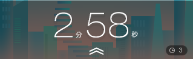

<!DOCTYPE html>
<html lang="zn-CH">

<head>
  <meta charset="UTF-8">
  <meta http-equiv="X-UA-Compatible" content="IE=edge">
  <meta name="viewport" content="width=device-width, initial-scale=1.0">
  <title>Document</title>
  <script>

  // 1.变量及命名

  // alert(789)
  // var aa;
  // aa = 18;
  // var bb=12;
  // var h1=12,h2=13,h4=15;

  // 变量命名规则:数字 字母 下划线 $ 组成,不能以数字开头,不能是关键字

  //可读性

  // 驼峰法
  // var userName="耶";

  // 类型:数值Number 字符串String 布尔Boolean undefined null 对象object

  // 2.字符

  //在字符串中写引号加转义字符
  // var str1 = "我是'谁'", str2 = "我   \\  喜 欢\"黑马\" \'程序员\' ";

  // alert(str1);
  // alert(str2);

  // var s1 = "123", s2 = "456", s4 = 2, s5 = 3;
  // var s3 = s1 + s2;
  // // 从前往后进行运算,直到遇到第一个字符串,此及后所有加号变成strcat
  // console.log(s5 + s4 + s3 + s4 + s5);

  // 3.类型转换

  // var n = 5;
  // var s = n.toString();
  // console.log(typeof s);
  // console.log(typeof String(n))

  // var str=''+n;//用加号进行数据类型的转换,三种方式不限类型 数值 Boolean

  // var a = '1';
  // var b = Number(a);
  // console.log(typeof b);

  // var c = Number('c');//Not a Number
  // var d = Number(null);//0
  // var e = Number(undefined);//Not a Number

  // console.log(c, d, e);

  // var a = parseInt('2');//2
  // var a = parseInt('k23');//NaN
  // var a = parseInt(null);//NaN
  // var a = parseInt(undefined);//NaN

  // var a = parseFloat('1.23df');//1.23 默认去掉认不出的df
  // var a = parseFloat(1.23);//1.23
  // var a = parseFloat(1);//1
  // var a = parseFloat('1.2.3.4');//1.2 默认去掉认不出的.3.4
  // var a = parseFloat('h34');//NaN
  // var a = parseFloat(null);//NaN
  // var a = parseFloat(undefined);//NaN

  // //null 只有number可以转换为0,其他都是NaN
  // console.log(a);

  // var a1 = Boolean('0');//t
  // var a2 = Boolean(0);//f
  // var a3 = Boolean('2');//t
  // var a4 = Boolean(null);//f
  // var a5 = Boolean(undefined);//f
  // var a5 = Boolean(1);//t
  // var a5 = Boolean('');//f
  // var a5 = Boolean(' ');//t

  // // 数值0和空字符,null,undefined 都会转换为false
  // console.log(a1, a2, a3, a4, a5);


  // 4.操作符
  // var s1 = 6, s2 = 4;
  // console.log(s1 / s2);

  // 一元运算符 i++ --i i-- ++i (单目操作符)

  //逻辑运算符 && || !

  // var a = '';
  // console.log(!a);//ture Boolean
  // console.log(a);//string '' 空字符
  // var a = 1, b = 2, c = 0;
  // console.log(b && a);//1 (左结合性) 一假为假
  // console.log(a && b);//2

  // console.log(c && ++b);//控制了求值顺序 不执行++b
  // console.log(b);//2

  // //在js中,逻辑运算的结果是 决定整个表达式的子表达式的结果

  // // && 优先级 > ||
  // console.log(a||c&&b)// 结果为1(a的值) 子表达式 c&&b先算,结果为0, -> a||0,结果为1.

  // var a = '2', b = 2;
  // // js是一种弱类型语言,变量的类型存在自动转换
  // console.log(a == b);//:t
  // console.log(a === b);//:f 全等  !==不全等

  // 优先级 单双关逻赋
  // 1.()
  // 2.单目(运算符): 先 ! 后 ++ --
  // 3.双目(运算符): 先 * / % 后 + -
  // 4.关系: 先 < <= > >= 后 == === !=  !==  (返回Boolean类型)
  // 5.逻辑: 先 && 后 ||
  // 6.赋值 = += -= *= /= %=
  // 7.逗号 ,

  // 5.语句

  // if (2 > 1) {
  //     console.log(1);
  // }
  // else if (2 > 1) {
  //     console.log(2);
  // }

  // var n = 1600;
  // if (n % 4 == 0 && n % 100 != 0 || !(n % 400)) {
  //     console.log(1);
  // }
  // else {
  //     console.log(0);
  // }

  // switch (ex) {
  //     case 1:
  //     break;
  //     case 2:
  //     break;
  //     default:
  //     break;
  // }

  // var s = 0, i = 1;


  // while (i++ < 100) {
  //     if (!(i % 7)) {
  //         console.log(i);
  //         s += i;
  //     }
  // }

  // console.log(s);

  // var s = 0, i = 1;


  // while (i++ <= 100) {
  //     if (!(i % 2)) {
  //         s += i;
  //     }
  // }

  // console.log(s);

  // do{
  // }while();

  // var i = 0, j = 0;
  // var s = "";
  // for (i = 0; i < 10; i++) {
  //     for (j = 0; j < 10 - i; j++) {
  //         s += "* ";
  //     }
  //     s += "\n";
  // }

  // console.log(s);

  //乘法表

  // var l = 1, r = 1, s = '';
  // for (; l < 10; l++) {
  //     for (r = l; r < 10; r++) {
  //         s += l + '*' + r + '=' + l * r + '\t';
  //         //'\r'!==' ',' '是货真价实的空格,'\t' '\r'如果后面有字会被覆盖 (缩进?)
  //     }
  //     s += '\n';
  // }
  // console.log(s);

  //continue和break
  // var i = 200;
  // for (; i < 300; i++) {
  //     if (i % 7) {
  //         continue;
  //     }
  //     console.log(i);
  //     break;
  // }

  // var arr = ['a', 'b', 'c'];
  // var arr2 = [1, 2, 3];
  // var arr3 = [1, 'm', 3];
  // console.log(arr3[1]);
  // console.log(arr3);

  // // 构造函数方式创建数组
  // var arr4 = new Array(1, ',', 3);
  // console.log(arr4);

  // console.log(arr4.length);
  // console.log(5);
  // // 多维数组嵌套
  // var a5 = [1, 'l', 3, arr4];
  // console.log(a5);
  // var a1 = [1, 2, [3, 4, [5, 6]]];
  // console.log(a1[2][2][1]);

  // console每打印一次会换行

  // var arr = [1, 2, 3, 6, 5, 4], i = 0;
  // for (; i <= 6; i++) {
  //     console.log(arr[i]);  //arr[6] undefined 未定义
  // }

  // console.log(' ');
  // i = 0;
  // while (i++ < arr.length) {
  //     console.log(arr[i])
  // }

  // var sum = 0;
  // for (i = 0; i < arr.length; i++) {
  //     sum += arr[i];
  // }
  // console.log(sum);

  // var max = arr[0];
  // for (i = 0; i < arr.length; i++) {
  //     if (max < arr[i])
  //         max = arr[i];
  // }
  // console.log(max);


  // var str = '';
  // for (i = 0; i < arr.length; i++) {
  //     str += arr[i] + '|'
  // }
  // console.log(str);


  // 6.函数

  // 关键字声明
  // function 函数名(){

  // }
  // // 表达式声明
  // var f(函数名)=function(){

  // }

  // function f1() {
  //     console.log(1);
  // }

  // f1();

  // function f1(a, b) {
  //     var c = a - b;
  //     return c;
  // }
  // function f2(a, b) {
  //     var c = a - b;
  //     return;
  // }
  // function f3(a, b) {
  //     var c = a + b;
  // }
  // console.log(f1(50, 52))
  // console.log(f1());//NaN
  // console.log(f2(1));//undefined
  // console.log(f1(2))//NaN
  // console.log(f3(52, 50))//undefined


  // //先看一个正常的函数

  // function f1() {
  //     console.log(2);
  // }

  // //匿名函数

  //变量=无名函数:函数本身可以作为值(数据类型)
  // var fun = function () {
  //     console.log(1);
  // }

  // fun();

  // // 立即执行函数 自调用匿名函数
  // (function () {
  //     alert(123);
  // })();

  // //匿名函数的用处:
  // //作用域:
  // //防止全局变量的污染,封装一个局部作用

  // function fn1(s) {
  //     s();    //加一个()表示执行
  // }
  // console.log(typeof fn);// function 数据类型 对象object(数组,函数)


  //函数作为值

  // var fn2 = function () {
  //     alert(123);
  // }
  // //fn2函数会被当做值,传入fn1函数内
  // //回调
  // fn1(fn2);


  //函数作为返回值

  // function f1() {
  //     var a = 10;
  //     var f2 = function () {
  //         alert('耶');
  //     }
  //     console.log(a);
  //     return f2;
  // }


  // //闭包
  // var k = f1();
  // k();


  //7.全局和局部(作用域)

  // var f2 = function () {
  //     var a = 1;
  //     console.log(a);
  //     // 函数内局部变量,外全局变量
  // }

  // f2();
  // console.log(a + 1); //报错 undefined

  // console.log(b);//undefined
  // var b =3;//不写这行代码先运行上面的console会报错,写了却是undefined,称为变量提升

  // 变量提升: -> var b;console.log(b);b=3; 在代码执行前变量已经在编译阶段被声明了.


  //js代码运行分为两个阶段
  //1.解析(编译)阶段:语法检查,变量及函数进行声明  (创造容器)
  //2.运行阶段:变量的赋值,代码流程的执行

  // var a = 12;
  // function fun() {
  //     alert(a);
  // }

  // fun();//此时为12

  // var a = 12;
  // function fun() {
  //     alert(a);
  //     var a =15;
  // }

  // fun();//此时为undefined

  // console.log(a);
  // function a() {
  //     console.log('aaa');
  // }

  // //打印出了函数 ƒ a() {
  // //     console.log('aaa');
  // // }
  // //如果函数和变量同名,函数声明会替换变量声明

  // var a = 1;
  // console.log(a);


  //但如果
  // var a = 1;
  // function a() {
  //     console.log('aaa');
  // }
  // console.log(a);//1
  //这说明两者都声明了,但是赋值在最后,所以a最终是1


  // var a = 1;
  // function f1() {
  //     var a = 6;
  //     function f2() {
  //         var a = 5;
  //         function f3() {
  //             // var a = 4;
  //             console.log(a);
  //             // var a = 2;
  //         }
  //         f3();
  //     }
  //     f2();
  // }
  // f1();


  //作用域链:如果函数自己的作用域没有声明,就会往外层找直到找到,如果还找不到直接报错


  // 8.对象

  // //字面量声明对象
  // var obj1 = {};

  // //对象中的属性和方法采用键值对的形式
  // //通常来说,值是函数则称为方法,其他类型的值都是属性
  // var obj2 = {age:12,name:'西岭',fei:function(){}};
  // //fei被习惯称之为方法(行为),但本身也是属性,后面跟的是一个匿名函数

  // //实例化方式声明对象(内置构造函数) 创造一个空对象
  // var obj3 = new Object();
  // obj3.name = '张三';
  // console.log(obj3['name']);

  // //实例化自定义构造函数方式声明对象
  // function Fun(){

  // }

  // var f=new Fun();

  // var obj2 = {
  //     age: 12,
  //     name: '西岭',
  //     fei: function () {
  //         console.log(3);
  //     }
  // }

  // //获取对象的属性或者方法  对象.属性名
  // console.log(obj2.age);

  // // obj2.fei只是引用了函数的值
  // obj2.fei();

  // var obj1 = {
  //     name: '西岭老师',
  //     age: 18,
  //     fun: function () {
  //         // 方法中的this就是这个方法所在的对象
  //         var s = this.age;
  //         console.log(s);
  //     }
  // }

  // obj1.fun();

  // function f() {
  //     console.log(this.a)
  // }
  // f();//uhdefined


  // function f() {
  //     console.log(kk.a)
  // }
  // f();//报错


  // function f() {
  //     //普通的函数中也是有this的
  //     //this指向全局对象(window)
  //     console.log(this)
  // }
  // f();//uhdefined

  //this永远指向一个对象

  // var k = '789';

  // function fun1() {
  //     var k="000"
  //     console.log(this.k);
  // }

  // var o1 = {
  //     k: "123",
  //     fun: fun1
  // }
  // var o2 = {
  //     k: "456",
  //     fun: fun1
  // }

  // o1.fun();//123
  // o2.fun();//456

  // this运行在哪个对象下,就指向那个对象

  // var o1 = {
  //     name: 'munny',
  //     age: 15,
  //     sex: '男',
  // }

  // console.log(o1);

  // //for(键 in 对象)

  // for (var k in o1) {
  //     console.log(o1[k]);
  // }

  // //for in 遍历数组
  // var arr = [2, 4, 5, 1, 5, 8];
  // for (var k in arr) {
  //     console.log(arr[k]);
  // }

  // var o1 = {
  //     name: 'munny',
  //     age: 15,
  //     sex: '男',
  // }

  // console.log(o1);
  // delete o1.age;
  // console.log(o1);//vscode下方控制台中:
  //                 // {name: 'munny', age: 15, sex: '男'}
  //                 // {name: 'munny', sex: '男'}
  //                 // chrome控制台中:两者都被删了


  //包装对象

  //三种原始类型 数值 字符串 布尔
  //原始类型 在一定条件下自动转换为对象,这就是包装对象

  // var v1 = new Number(123);
  // console.log(v1);

  // 原始值 可以自动当做对象来调用,可以调用各种属性及方法
  //如果包装对象使用完成,会自动立即销毁

  // var a = '456';
  // a.length;
  //a . 写下.的这一刻成为对象 相当于以下内容:
  // 1.var temp=new String('456');
  // 2.str=temp;
  // 3.temp=null;//使用完销毁
  //原型

  //数学对象
  // var n = -2;
  // console.log(Math.abs(n));
  // console.log(Math.floor(Math.random() * 10));
  // Math.floor() 函数总是返回小于等于一个给定数字的最大整数。
  // //2~8
  // Math.floor(Math.random()*(8-2)+2);

  //时间对象
  // var da = new Date();
  // console.log(da);//JS中获取的是计算机本地时间
  // console.log(Date.now());//1970.1.1 00:00:00 到现在的毫秒数
  // console.log(da.getHours());
  // console.log(da.getFullYear());
  // console.log(da.getMonth());//JS中的月份数组是从0开始的

  // 数组对象
  // var arr = [1, 2, 3, 4, 5, 6];
  // console.log(arr.length);

  // var k = 7;
  // arr.push(k);//添加一个元素在数组最后
  // console.log(arr);
  // arr.pop();//删除最后一个元素

  // console.log(arr.slice(2, 4));//[2,4)
  // console.log(arr);

  // var kk = ['q', 'k', 'h'];
  // var h = arr.concat(kk);

  // console.log(arr);
  // console.log(h);

  // console.log(arr.join());//打印,默认 , 逗号隔开
  // console.log(arr.join('-'));

  //字符串

  // var s = 'asjd1fjdfkl';
  // // s.length
  // console.log(s.substr(1, 5));//从下标为1开始截5个字符
  // console.log(s.indexOf('jdf'));//查找字符串
  // console.log("JavaScript".replace('va', 'vk'));//修改字符串,不改变原字符
  // console.log("JavaScript".toLowerCase());//小写 大写toUpperCase()


  // 继续学习

  // var name = prompt('输入name');
  // alert(name);

  //外单内双,外双内单
  // console.log('我是程"序员"能\n看到的');

  // console.log(true + 1);//ture参与运算当做1来看
  // console.log(undefined + 'pink');//当做字符串
  // console.log(undefined + 1);//NaN
  // console.log(null + 'pink');//NaN
  // console.log(null + 1);// 1 与undefined 不同

  //颜色判断类型
  // console.log(1);
  // console.log('1');
  // console.log(true);
  // console.log(null);
  // console.log(undefined);

  // var arr = [1, 2, 3];
  // console.log(arr)

  // var f1 = function () {
  //     alert(123);
  // }

  // console.log(f1);

  //用+''转换字符串(隐式转换)

  // console.log(parseInt(3.145));//3
  // console.log(parseInt('3.14asdf'));//3
  // console.log(parseInt('asdf3.14asdf'));//NaN

  // 隐式转换 / * -
  // console.log('12'-0)

  // var year = prompt('出生年份');//得到的是字符串值
  // var da = new Date();
  // var age = da.getFullYear() - year;
  // alert('您今年' + age + '岁了');

  // var n1 = prompt('第一个值');
  // var n2 = prompt('第二个值');
  // var result = parseFloat(n1) + parseFloat(n2);
  // alert('结果是' + result);

  // Boolean() 中 '' 0 NaN null undefined (代表空的否定的值) 转换为false 其余为true

  // 标识(zhi)符 :自己起的名字
  // 关键字 break for ... 保留字 boolean int char ...(预留的关键字)

  // var name = prompt('name');
  // var age = prompt('age');
  // alert('您的姓名:' + name + '\n' + '您的年龄:' + age);

  // 三元表达式 条件表达式 ? 表达式1 :表达式2 是则返回表达式1的值
  // var num = 10;
  // console.log(num > 5 ? '是' : '不是');

  // var a = prompt('输入一个0~59的数字');//字符型
  // console.log(a > 10 ? a : '0' + a);

  // 分支 少 时,if else if 执行效率高,多时 switch 执行效率高

  // for (var i = 0; i < 100; i++)
  // {
  //     console.log('耶');
  // }

  // var n = prompt('输入总人数');
  // var i = 0;
  // var sum = 0;
  // for (; i < n; i++) {
  //     sum += parseFloat(prompt('输入第' + (i + 1) + '个学生的成绩'));
  // }
  // alert('平均分是:' + (sum /= i));


  //字符型可以比大小
  // var a = prompt();
  // console.log(a);
  // console.log(parseFloat(a));
  // console.log(a);
  // if (a > 1) {
  //     console.log(a > 1 ? a : 0);
  // }

  // var arr = [1, 2, 3];
  // arr[3] = 'pink';
  // console.log(arr);
  // arr[1] = 'pink';
  // console.log(arr);
  // arr = 'pink';
  // console.log(arr);
  // arr = [];
  // console.log(arr);

  // var arr1 = [12, 5, 4, 2, 5, 6, 23, 21, 10, 2];
  // var arr2 = [];
  // var i = 0;
  // for (; i < arr1.length; i++) {
  //     if (arr1[i] > 9) {
  //         // arr2.push(arr1[i]);
  //         arr2[arr2.length] = arr1[i];
  //     }
  // }
  // console.log(arr2);

  // var arr3 = [];
  // arr3[5] = 'pink';
  // console.log(arr3);

  // var arr = ['k', 'l', 'm', 'n', 'o', 'p'];
  // var arr2 = [];
  // var i = 0;
  // for (; i <= arr.length; i++) {
  //     arr2[arr2.length] = arr[arr.length - i];
  // }
  // console.log(arr2);

  // var arr = [5, 3, 1, 5, 8, 3, 0, 526, 5];
  // var i = 0, j = 0, temp;
  // for (; i < arr.length - 1; i++) {
  //     for (flag = 1, j = 0; j < arr.length - i; j++) {
  //         if (arr[j] > arr[j + 1]) {
  //             temp = arr[j];
  //             arr[j] = arr[j + 1];
  //             arr[j + 1] = temp;
  //             flag = 0;
  //         }
  //     }
  //     if (flag)
  //         break;
  // }
  // console.log(arr);


  //如果实参个数>形参,会取到形参的个数
  //如果小于 ,形参可以看作不用声明的变量,但是没有赋值 undefined

  // var arr = [1, 2, 3, 5, 64, 2, 1];

  // function getArrMax(arr) {
  //     var max = arr[0];
  //     for (var i = 0; i < arr.length; i++) {
  //         if (arr[i] > max) {
  //             max = arr[i];
  //         }
  //     }

  //     return max;
  // }

  // console.log(getArrMax(arr));


  // return 可以返回数组
  // var arr = [1, 2, 3, 5, 64, 2, 1];
  // function bubbleSort(arr) {
  //     for (var i = 0; i < arr.length - 1; i++) {
  //         for (var j = 0, flag = 1; j < arr.length - i; j++) {
  //             if (arr[j] > arr[j + 1]) {
  //                 temp = arr[j];
  //                 arr[j] = arr[j + 1];
  //                 arr[j + 1] = temp;
  //                 flag = 0;
  //             }
  //         }
  //         if (flag)
  //             break;
  //     }
  //     return arr;
  // }
  // console.log(bubbleSort(arr));

  // argument 由实参构成的伪数组: 可以.lengch,有下标,但不具有数组的push,pop等方法

  // function fn() {
  //     console.log(arguments);
  //     console.log(arguments.length);
  //     console.log(arguments[4]);
  // }

  // fn(1, 2, 3);

  // var arr = [1, 5, 3, 96, 89, 100]

  // function reverseArr(arr) {
  //     var arr2 = [];
  //     for (var i = 0; i <= arr.length; i++) { //这里i小于等于,因为不是用i做下标
  //         arr2[arr2.length] = arr[arr.length - i];
  //     }
  //     return arr2;
  // }

  // console.log(reverseArr(arr));

  // function isRunYear(year) {
  //     if (!(year % 400) || !(year % 4) && year % 100)
  //         return true;
  //     return false;
  // }

  // var year = prompt('input year');
  // alert(isRunYear(year));

  //函数内部只声明未赋值的是全局变量

  // var num = 10;

  // function fn() {
  //     console.log(num);
  //     num = 15;
  // }
  // console.log(num);//10
  // fn();//10
  // console.log(num);//15

  //全局变量浏览器关闭才会销毁,局部变量程序执行完毕销毁(节约资源)


  //表达式声明的函数

  // console.log(num);//报错


  // console.log(num);//undefined
  // var num = 15;

  //函数提升

  //1.声明在下,调用在前:因先声明故不报错
  // fn1();//11
  // function fn1() {
  //     console.log(11);
  // }


  //2.表达式声明,相当于先声明未赋值,此刻调用,报错

  // fn();//报错
  // var fn = function () {
  //     console.log(11);
  // }

  // 相当于
  // var fn;
  // fn();
  // fn=function(){}


  // var num = 10;
  // fun();
  // function fun() {
  //     console.log(num);//10
  // }

  // var num = 10;
  // fun();
  // function fun() {
  //     console.log(num);//10
  //     num = 15;
  // }


  // var num = 10;
  // fun();
  // function fun() {
  //     console.log(num);//undefined
  //     var num = 15;
  // }


  //相当于:

  // // 声明
  // 1. var num;
  // 2. function fun() {
  //     console.log(num);
  //     var num = 15;
  // };

  // //执行
  // 1. num = 10;
  // 2. fun();
  // --> function fun() {
  //     2.1 var num;
  //     2.2 console.log(num);
  //     2.3 num=15;
  // }


  // f1();
  // console.log(b);
  // console.log(c);
  // console.log(a);

  // function f1() {
  //     var a = b = c = 9;
  //     //相当于 var a=9;b=9;c=9;注意 b 和 c 前没有var!
  //     console.log(a);
  //     console.log(b);
  //     console.log(c);
  // }

  //9 9 9 9 9 报错


  //调用属性的另一种方法
  // var oj1 = {
  //     name: 'asdf',
  //     age: 18,
  //     sayHi: function () {
  //         alert('hi');
  //     }
  // }

  // oj1.sayHi();
  // oj1['sayHi']();


  //构造函数创建对象
  //构造函数名首字母大写
  //多一个 this 多一个 new ,不需要return 就可以返回结果

  // function Star(name, age) {
  //     this.name = name;
  //     this.age = age;
  //     this.sing = function (sang) {
  //         console.log(sang);
  //     }
  // }

  // var ldh = new Star('刘德华', 18);//返回的是一个对象
  // alert(typeof ldh);
  // console.log(ldh.name);
  // var zxy = new Star('张学友', 18);
  // console.log(zxy['age']);
  // ldh.sing('冰雨');

  // var obj = {
  //     name: 'pink',
  //     age: 18,
  //     sex: '男',
  //     fn: function () {
  //         alert(132);
  //     }
  // }

  // for (var k in obj) {
  //     console.log(k); // 输出变量 k 得到的是属性名(String),所以obj[k]是属性值
  //     console.log(obj[k]);
  // }

  // var str = prompt('please input\n1.+\n2.-\n3.*\n4.*');
  // function fn() {
  //     n1 = parseFloat(prompt('输入一个值'));
  //     n2 = parseFloat(prompt('输入一个值'));
  // }
  // var sum = 0;
  // switch (parseFloat(str)) {
  //     case 1: fn(); sum = n1 + n2; break;
  //     case 2: fn(); sum = n1 - n2; break;
  //     default: break;
  // }
  // alert('结果是' + sum);

  //Math数学对象 不是一个构造函数,所以我们不需要 new 来调用,直接使用属性和方法即可

  // console.log(Math.PI);
  // console.log(Math.max(2, 1));
  // console.log(Math.max(2, 1, 'pink'));//NaN
  // console.log(Math.max());// -Infinity

  // var myMath = {
  //     PI: 3.1415926535,
  //     max: function () {
  //         var max = arguments[0];
  //         for (var i = 1; i < arguments.length; i++) {
  //             if (max < arguments[i]) {
  //                 max = arguments[i];
  //             }
  //         }
  //         return max;
  //     }
  // }

  // console.log(myMath.max(26, 25, 45, 122));

  //绝对值
  // console.log(Math.abs('-1'));//隐式转换
  // console.log(Math.abs('pink'));//NaN

  // console.log(Math.floor(1.9));//向下取整
  // console.log(Math.ceil(1.1));//向上取整

  // console.log(Math.round(5.4));//四舍五入
  // console.log(Math.round(5.5));
  // console.log(Math.round(-1.4));
  // console.log(Math.round(-1.9));
  // console.log(Math.round(-1.5));// .5 往大了取,所以是 -1

  //包含两边的随机整数
  // function getRandow(min, max) {
  //     return Math.floor(Math.random() * (max - min + 1) + min);
  // }

  // console.log(getRandow(2, 8));

  //猜数字
  // function getRandow(min, max) {
  //     return Math.floor(Math.random() * (max - min + 1) + min);
  // }
  // var n = getRandow(1, 100);
  // var count = 10;

  // // do {
  // //     var ret = prompt('1~100');

  // //     if (ret < n)
  // //         alert('小了');
  // //     else if (ret > n)
  // //         alert('大了');

  // // } while (ret != n);
  // // alert('恭喜您,猜对啦');

  // while (count--) {
  //     var ret = prompt('1~100,剩余次数' + (count + 1));

  //     if (count == 0) {
  //         alert('很遗憾,游戏结束');
  //         break;
  //     }

  //     if (ret < n)
  //         alert('小了');
  //     else if (ret > n)
  //         alert('大了');
  //     else {
  //         alert('恭喜您,猜对啦');
  //         break;
  //     }
  // }


  // Date 日期对象 是一个构造函数 必须用new来创建
  // var arr = new Array();
  // var obj = new Object();

  // var date = new Date();
  // console.log(date);

  // // Date ()内写法 数字型 2019,10,01 字符串型 '2019-10-1 8:8:8'
  // var date1 = new Date(2019, 12, 1);//进位
  // console.log(date1);  //如果是数字型,月份从0开始,所以会大一个月.而字符型不会这样
  // var date2 = new Date('2019-10-1 8:8:8');
  // console.log(date2);
  // date.getDay();//周一返回的是1,周六返回的是6 但是周天返回的是0
  // var month=date.getMonth()+1;//别忘了加1
  // var arr=['星期日','星期一','星期六']//用返回的数字做下标

  // var date = new Date();

  // var sec = date.getSeconds();
  // console.log(sec > 9 ? sec : '0' + sec);


  // var date0 = Date();
  // console.log(date0.valueOf());//现在时间

  // var date = new Date();
  // //以下四个都是时间戳
  // console.log(date.valueOf());
  // console.log(date.getTime());
  // console.log(Date.now());// H5 新增
  // console.log(+new Date());

  // function countDown(time) {
  //     var nowTime = +new Date();//返回的是当前的时间戳
  //     var inputTime = +new Date(time);//用户设定的时间
  //     var times = (inputTime - nowTime) / 1000;
  //     // var s=times%60;
  //     // var m=times/60%60;

  //     var d = parseInt(times / 60 / 60 / 24);
  //     d = d < 10 ? '0' + d : d;
  //     var h = parseInt(times / 60 / 60 % 24);
  //     h = h < 10 ? '0' + h : h;
  //     var m = parseInt(times / 60 % 60);
  //     m = m < 10 ? '0' + m : m;
  //     var s = parseInt(times % 60);
  //     s = s < 10 ? '0' + s : s;
  //     return d + '天' + h + '时' + m + '分' + s + '秒';
  // }

  // console.log(countDown('2023-1-10 18:00:00'));

  // var arr = new Array(2);//两个空元素
  // console.log(arr);
  // var arr = new Array(2, 3);//两个元素
  // console.log(arr);


  //检测是否为数组
  // var arr = [];
  // var obj = {};
  // console.log(arr instanceof Array);//true
  // console.log(obj instanceof Array);//false

  // function myIsArray(arr) {
  //     if (arr instanceof Array)
  //         return '是'
  //     else
  //         return '这不是一个数组';
  // }

  // console.log(myIsArray(arr));
  // console.log(myIsArray(obj));

  // console.log(Array.isArray(arr));//ture H5新增,ie9以上版本才支持,优于instanceof
  // console.log(Array.isArray(obj));//false

  // var arr = [1, 2, 3];
  // console.log(arr.push('pink'));//返回的是新数组的长度
  // console.log(arr);

  // console.log(arr.unshift('red'));//在数组前面添加元素
  // console.log(arr);

  // console.log(arr.pop());//删除并返回最后一个元素
  // console.log(arr);

  // console.log(arr.shift());//删除并返回第一个元素
  // console.log(arr);

  // var arr = [1, 2, 3, 4, 5];
  // console.log(arr.reverse());//返回翻转的数组
  // console.log(arr);

  // var arr = [1, 45, 2, 3, 789, 55];
  // console.log(arr.sort(function (a, b) {
  //     // return a - b;//升序
  //     return b - a;//降序
  // }));
  // console.log(arr);


  // var arr = [1, 4, 2, 3, 4, 5];
  // console.log(arr.indexOf('blue'));//找不到返回-1,找到返回下标
  // console.log(arr.indexOf(4));
  // console.log(arr.lastIndexOf('blue'));//从后面开始查找
  // console.log(arr.lastIndexOf(4));

  // var arr = [1, 2, 3, 1, 2, 3, 1, 5, 4, 1, 5, 78, 8,]
  // function delateRepeat(arr) {
  //     var arr2 = [];
  //     for (var i = 0; i < arr.length; i++) {
  //         if ((arr2.indexOf(arr[i])) === -1) {
  //             arr2.push(arr[i]);
  //         }
  //     }
  //     return arr2;
  // }

  // console.log(delateRepeat(arr));

  // var arr = [1, 2, 3];
  // console.log(arr.toString());
  // console.log(arr);
  // console.log(arr.join('-'));
  // console.log(arr.join('&'));
  // console.log(arr);

  // '字符串常量',拼接字符串会开辟新的空间,所以不要大量拼接

  // var str = '改革春风吹满地,春天来了';
  // console.log(str.indexOf('春'));
  // console.log(str.indexOf('春', 3));//从第几个下标开始查找

  // var str = 'asdfiiaisdfifisaii';
  // function countStr(arr, s1) {
  //     var count = 0, i = 0;
  //     while (arr.indexOf(s1, i) != -1) {
  //         count++;
  //         i = arr.indexOf(s1, i) + 1;
  //         console.log(i - 1);
  //     }
  //     return count;
  // }
  // console.log(countStr(str, 'ai'));

  // var str = 'pink';
  // for (var k in str) {
  //     console.log(str[k]);
  // }
  // console.log(str.charAt(2));

  // 2.charCodeAt(index) 返回相应下标的字符的ASCII值 (判断用户按下了哪个键)
  // 3.str[index]获取指定下标处的字符

  // var o = {
  //     age: 0
  // }
  // if (o['age']) {
  //     console.log('yes');
  // }
  // else {
  //     console.log('no');
  // }

  // var str = 'asdfiiaisdfifisaii';
  // function countMost(obj) {
  //     var o = {};
  //     for (var k in obj) {
  //         var cchar = obj[k];
  //         if (o[cchar]) {
  //             o[cchar]++;
  //         }
  //         else {
  //             o[cchar] = 1;
  //         }
  //     }
  //     return o;
  // }

  // var obj = countMost(str);
  // console.log(obj);
  // var max = 0;
  // for (var k in obj) {
  //     if (obj[k] > max) {
  //         max = obj[k];
  //         who = k;//这里加不加var 结果都一样,js没有块级作用域{},单赋值是全局变量
  //     }
  // }
  // m = 3;

  // console.log(max, who, m);

  // var str = 'asdfiiaisdfifisaii';
  // while (str.indexOf('i') !== -1) {
  //     str = str.replace('i', '*');
  // }
  // console.log(str);

  //字符串转数组 split 与join相反
  // var str = 'red,pink,green';
  // console.log(str.split(','));
  // var str = 'red$pink$green';
  // console.log(str.split('$'));

  // console.log(typeof null);//返回的是空对象
  //用 null做空对象

  //需要new的是复杂数据类型(引用类型);

  //简单数据类型 存放于栈,存放的是值
  //复杂数据类型 存放域堆,比如 var arr=[1,2,3],先在栈里存放arr的地址,指向堆存放的三个数据

  //简单类型传参,形参不改变实参
  // var x = 10;
  // function fn(a) {
  //     a++;
  //     console.log(a);
  // }
  // fn(x);
  // console.log(x);

  //复杂数据类型传递是地址传递
  // function Star(name, age) {
  //     this.name = name;
  //     this.age = age;
  // }
  // function f1(x) {
  //     x.name = '张学友';
  // }

  // var ldh = new Star('刘德华', 18);
  // f1(ldh);
  // console.log(ldh.name);

  </script>

  <!-- <link rel="stylesheet" href="im.css"> -->

</head>


<!-- 自定义属性 -->
<!-- <div id="demo" index="1"></div>
  <script>
  var div = document.querySelector('div');
  console.log(div.id);//自带属性
  console.log(div.getAttribute('id'));//获得所有属性,包括自定义
  console.log(div.getAttribute('index'));

  div.index = '2';//不是自带属性改不了
  console.log(div.getAttribute('index'));

  // 更改自定义属性
  div.setAttribute('index', 2);
  console.log(div.getAttribute('index'));

  //删除自定义属性
  div.removeAttribute('index');
  console.log(div.getAttribute('index'));

  </script> -->


<!-- 全选按钮  -->
<!-- <div class="wrap">
  <table>
      <thead>
          <tr>
              <th>
                  <input type="checkbox" id="j_cbAll" />
              </th>
              <th>商品</th>
              <th>价钱</th>
          </tr>
      </thead>
      <tbody id="j_tb">
          <tr>
              <td>
                  <input type="checkbox" />
              </td>
              <td>iPhone8</td>
              <td>8000</td>
          </tr>
          <tr>
              <td>
                  <input type="checkbox" />
              </td>
              <td>iPad Pro</td>
              <td>5000</td>
          </tr>
          <tr>
              <td>
                  <input type="checkbox" />
              </td>
              <td>iPad Air</td>
              <td>2000</td>
          </tr>
          <tr>
              <td>
                  <input type="checkbox" />
              </td>
              <td>Apple Watch</td>
              <td>2000</td>
          </tr>

      </tbody>
  </table>
  </div>

  <script>
  var j_cbAll = document.querySelector('#j_cbAll');
  var j_tbs = document.querySelectorAll('#j_tb input');
  var count = 0, flag = 1;


  // j_cbAll.onclick = function () {
  //     for (var i = 0; i < j_tbs.length; i++) {
  //         j_tbs[i].checked = this.checked;//把上面全选按钮的状态赋值给下面的按钮
  //     }
  //     if (flag) {
  //         count = j_tbs.length;
  //         flag = 0;
  //     }
  //     else {
  //         count = 0;
  //         flag = 1;
  //     }
  //     console.log(count);
  // }
  // for (var i = 0; i < j_tbs.length; i++) {
  //     j_tbs[i].onclick = function () {
  //         console.log(this.checked);
  //         if (this.checked == true) {
  //             count++;
  //         } else {
  //             count--;
  //         }
  //         console.log(count);
  //         if (count == j_tbs.length) {
  //             j_cbAll.checked = true;
  //         } else {
  //             j_cbAll.checked = false;
  //         }

  //     }
  // }

  j_cbAll.onclick = function () {
      // this.checked 它可以得到当前复选框的选中状态如果是true 就是选中，如果是false 就是未选中
      console.log(this.checked);
      for (var i = 0; i < j_tbs.length; i++) {
          j_tbs[i].checked = this.checked;
      }
  }
  // 2. 下面复选框需要全部选中， 上面全选才能选中做法： 给下面所有复选框绑定点击事件，每次点击，都要循环查看下面所有的复选框是否有没选中的，如果有一个没选中的， 上面全选就不选中。
  for (var i = 0; i < j_tbs.length; i++) {
      j_tbs[i].onclick = function () {
          // flag 控制全选按钮是否选中
          var flag = true;
          // 每次点击下面的复选框都要循环检查者4个小按钮是否全被选中
          for (var i = 0; i < j_tbs.length; i++) {
              if (!j_tbs[i].checked) {
                  flag = false;
                  break; // 退出for循环 这样可以提高执行效率 因为只要有一个没有选中，剩下的就无需循环判断了
              }
          }
          j_cbAll.checked = flag;
      }
  }

  </script> -->


<!-- 表格隔行变色 -->
<!-- <table>
  <thead>
      <tr>
          <th>1</th>
          <th>2</th>
          <th>3</th>
      </tr>
  </thead>
  <tbody>
      <tr>
          <td>1</td>
          <td>2</td>
          <td>3</td>
      </tr>
      <tr>
          <td>1</td>
          <td>2</td>
          <td>3</td>
      </tr>
      <tr>
          <td>1</td>
          <td>2</td>
          <td>3</td>
      </tr>
      <tr>
          <td>1</td>
          <td>2</td>
          <td>3</td>
      </tr>
      <tr>
          <td>1</td>
          <td>2</td>
          <td>3</td>
      </tr>
      <tr>
          <td>1</td>
          <td>2</td>
          <td>3</td>
      </tr>

  </tbody>
  </table>

  <script>

  var trs = document.querySelectorAll('tbody tr');
  for (var i = 0; i < trs.length; i++) {
      trs[i].onmouseover = function () {
          for (var i = 0; i < trs.length; i++)
              trs[i].style.backgroundColor = '';
          this.style.backgroundColor = 'red';
      }
      //注册事件和触发事件是两个时间段,注意区分
      trs[i].onmouseout = function () {
          this.style.backgroundColor = '';
      }
  }
  </script> -->


<!-- 百度换背景 -->
<!-- <ul class="baidu">
  <li></li>
  <li></li>
  <li></li>
  <li></li>
  </ul>


  <script>
  var imgs = document.querySelectorAll('.baidu img');
  for (var i = 0; i < imgs.length; i++) {
      imgs[i].onclick = function () {
          console.log(this.src);
          document.body.style.backgroundImage = 'url(' + this.src + ')';
      }
  }
  </script> -->


<!-- 排他思想 -->
<!-- <button>1</button>
  <button>2</button>
  <button>3</button>
  <button>4</button>
  <button>5</button>
  <script>
  var btns = document.getElementsByTagName('button');
  // for in数组不建议用
  for (var i = 0; i < btns.length; i++) {
      btns[i].onclick = function () {
          for (var i = 0; i < btns.length; i++)//声明时function不执行,不影响i
              btns[i].style.backgroundColor = '';
          this.style.backgroundColor = 'pink';
      }
  }
  </script> -->


<!-- 作业:问题 -->
<!-- <button>开关灯</button>

  <div class="tag">我是广告<i>X</i></div>
  <div class="why"><input type="text" value="输入用户名"></div>

  <script>
  var btn = document.querySelector('button');
  var bodyEle = document.body;
  var flag = 1;

  btn.onclick = function () {
      if (flag) {
          bodyEle.style.backgroundColor = 'black';
          flag = 0;
      } else {
          bodyEle.style.backgroundColor = '#fff';
          flag = 1;
      }
  }
  var i = document.querySelector('i');
  var tag = document.querySelector('.tag');
  i.onclick = function () {
      tag.style.display = 'none';
  }
  var ipt = document.querySelector('input');
  ipt.onfocus = function () {
      this.value = '';
      this.style.border = '1px solid pink';
      // 不加浮动莫名外边距塌陷1px 
      this.style.margin = '0';
      this.style.padding = '0';
  }
  ipt.onblur = function () {
      this.value = '输入用户名';
      this.style.border = '1px solid black';
  }
  </script> -->


<!-- 密码长度检测 -->
<!-- <div class="register">
  <input type="password" class="ipt">
  <p>请输入7~16位密码</p>
  </div>
  <script>
  var ipt = document.querySelector('.ipt');
  var p = document.querySelector('p');
  ipt.onblur = function () {
      if (this.value.length < 7 || this.value.length > 16) {
          p.innerHTML = '长度不符请重新输入';
          console.log('1');
      } else {
          p.innerHTML = '正确';
      }

  }
  </script> -->

<!-- 使用className修改:会把原来的类名删去 用+= -->
<!-- <div class="first">文本</div>

  <script>
  var text = document.querySelector('div');
  text.onclick = function () {
      this.className += ' change';
  }
  </script> -->


<!-- 焦点光标 -->
<!-- <input type="text" value="手机">
  <script>
  var text = document.querySelector('input');
  text.onfocus = function () {   //获得焦点
      this.value = '';
      this.style.color = '#333';
  }
  text.onblur = function () {    //失去焦点
      if (this.value === '')
          this.value = '手机';
      this.style.color = '#999';
  }
  </script> -->


<!-- 精灵图 -->
<!-- <div class="box">
  <ul>
      <li></li>
      <li></li>
      <li></li>
      <li></li>
      <li></li>
      <li></li>
      <li></li>
      <li></li>
      <li></li>
      <li></li>
      <li></li>
      <li></li>
  </ul>

  </div>
  <script>
  var lis = document.querySelectorAll('li');
  for (var i = 0; i < lis.length; i++) {
      var index = i * 44;
      lis[i].style.backgroundPosition = '0 -' + index + 'px';
  }
  </script> -->


<!-- 修改样式 -->
<!-- <div>
  二维码                 
  <i class="close_btn">x</i>
  </div>
  <script>
  //js修改的样式是行内样式,权重高
  var div = document.querySelector('div');
  var btn = document.querySelector('.close_btn');
  div.onclick = function () {
      this.style.backgroundColor = 'purple';
      this.style.width = '1000px';
  }
  btn.onclick = function () {
      div.style.display = 'none';
  }
  </script> -->


<!-- 显示密码框 -->
<!-- <div class="box">
  <label for="">
      
  </label>
  <input type="password" name="" id="password">
  </div>
  <script>
  var eye = document.getElementById('eye');
  var pwd = document.getElementById('password');
  var flag = 0;//切换按钮 一个按钮实现两个功能
  eye.onclick = function () {
      if (flag == 0) {
          pwd.type = 'text';
          flag = 1;
      } else {
          pwd.type = 'password';
          flag = 0;
      }
  }
  </script> -->


<!-- 一次性的清除表格按钮 -->
<!-- <button>一次性清除按钮</button>
  <input type="text" value="input">

  <script>
  var btn = document.querySelector('button');
  var input = document.querySelector('input');

  btn.onclick = function () {
      input.value = '';
      // btn.disabled = true;
      this.disabled = true;//this 指向当前事件的调用者 btn
  }
  </script> -->


<!-- 分时问候 -->
<!-- <div>上午好</div>
  

  <script>
  var img = document.querySelector('img');
  var div = document.querySelector('div');

  var date = new Date();
  var h = date.getHours();

  if (h > 12) {
      div.innerHTML = '下午好'
  }

  </script> -->


<!-- Dom基础 -->

<!-- <button id="ldh">ldh</button>
  <button id="zxy">zxy</button>
  
  <script>
  var ldh = document.getElementById('ldh');
  var zxy = document.getElementById('zxy');
  var img = document.querySelector('img');

  zxy.onclick = function () {
      img.src = 'D:/赵宏建de百宝箱/应用备份/工作/VScode/image/R-C.jfif';
      img.title = 'zxy';
  }
  </script> -->

<!-- <button id="btn">唐伯虎</button>
  <div>时间</div>
  <p id="p1">1123
  <span>我是span</span>
  </p>
  <script>
  //事件源(谁 button) 事件类型(触发方式 点击) 事件处理程序(完成什么功能)
  var btn = document.getElementById('btn');
  var div = document.querySelector('div')
  btn.onclick = function () {
      alert('点秋香');
      div.innerText = new Date();
  }

  //不添加事件 
  // var p = document.querySelector('p');
  // p.innerText = new Date();

  //innerText(不识别标签) 与 innerHTML(识别标签) 的区别  这两个标签可读写
  //innerText 去除空格和换行
  div.innerHTML = '<string>今天是</string>2019';
  var p1 = document.querySelector('#p1');

  console.log(p1.innerText);
  console.log(p1.innerHTML);//保留标签 空格和换行

  </script> -->

<!-- <script>
  var bodyEle = document.body;//获取body
  console.log(bodyEle);
  console.dir(bodyEle);
  var htmlEle = document.documentElement;//获取html
  console.log(htmlEle);
  console.dir(htmlEle);

  </script> -->

<!-- <div class="box">1</div>
  <div class="box">2</div>
  <div id="nav">
  <ul>
      <li>11</li>
      <li>22</li>
  </ul>
  </div>

  <script>
  // H5新增或取元素方法
  var boxs = document.getElementsByClassName('box');//根据类名获得某些元素集合
  console.log(boxs);
  var firstBox = document.querySelector('.box');//返回指定选择器的第一个对象 选择器要加符号
  console.log(firstBox);
  var firstBox = document.querySelector('#nav');
  console.log(firstBox);
  var firstBox = document.querySelector('li');
  console.log(firstBox);
  var allBox = document.querySelectorAll('.box');//返回指定选择器所有对象 选择器要加符号
  console.log(allBox);

  </script> -->

<!-- <ul>
  <li>1</li>
  <li>2</li>
  <li>3</li>
  <li>4</li>
  <li>5</li>
  </ul>
  <ol id="ol1">
  <li>01</li>
  <li>02</li>
  <li>03</li>
  <li>04</li>
  </ol>
  <script>
  var lis = document.getElementsByTagName('li');
  console.log(lis);//返回的是该标签的元素对象的伪数组集合,如果没有返回的是空的伪数组
  for (var k in lis) {
      console.log(lis[k]);
  }
  console.log(lis.length);

  var ol = document.getElementsByTagName('ol');//注意这个elements的's',得到的是伪数组[ol].
  console.log(ol[0].getElementsByTagName('li'));//指明父元素对象

  var ol = document.getElementById('ol1');
  console.log(ol.getElementsByTagName('li'));//指明父元素对象


  </script> -->

<!-- <div id="time">2023-1-10</div>
  <script>
  var ti = document.getElementById('time');
  console.log(ti);
  console.log(typeof ti);//返回的是元素对象
  </script> -->

<!-- input:button#n1.c1
  <input type="button" value="耶" id="n1" class="c1"> -->

<!--     <p>
  <!~~ Javascript三种写法 ~~>

  <!~~ 写在HTML行内 ~~>
  <input type="button" value="按钮" onclick="alert(123)">

  <!~~ 写在标签中 ~~>
  <script>
      alert(456)
  </script>

  <!~~ 引入外部js文件,以此方式就不要在写其他的js代码(无效) ~~>
  <script src="day1.js"></script>

  </p>


  -->


<!-- tab栏切换 -->
<!-- <div class="tab">
  <div class="tab_list">
      <ul>
          <li class="current">商品介绍</li>
          <li class="l">规格与包装</li>
          <li class="l">售后保障</li>
          <li class="l">商品评价（50000）</li>
          <li class="l">手机社区</li>
      </ul>
  </div>
  <div class="tab_con">
      <div class="item" style="display: block;">
          商品介绍模块内容
      </div>
      <div class="item">
          规格与包装模块内容
      </div>
      <div class="item">
          售后保障模块内容
      </div>
      <div class="item">
          商品评价（50000）模块内容
      </div>
      <div class="item">
          手机社区模块内容
      </div>

  </div>
  </div>
  <script>
  var lis = document.querySelectorAll('.tab_list li');
  var items = document.querySelectorAll('.item');
  for (var i = 0; i < lis.length; i++) {
      lis[i].setAttribute('index', i);
      lis[i].onclick = function () {
          for (var i = 0; i < lis.length; i++) {
              lis[i].className = 'l';
          }
          this.className = 'current';
          var index = this.getAttribute('index');
          for (var i = 0; i < items.length; i++)
              items[i].style.display = 'none';
          items[index].style.display = 'block';
      }
  }

  </script> -->


<!-- H5新增自定义属性ie11以上支持 -->
<!-- <div data-getTime="'20" data-list-name="andy">123</div>
  <script>
  //获取
  var div = document.querySelector('div')
  console.log(div.getAttribute('getTime'));
  div.setAttribute('data-index', 0);
  console.log(div.dataset);//自定义属性集合以date-开头
  console.log(div.dataset.index);
  console.log(div.dataset[index]);
  //如果自定义属性里面有多个-连接的单词,用驼峰命名法
  console.log(div.dataset.listName);
  </script> -->


<!-- 节点 -->
<!-- <div>
  <ul>
      <li>1</li>
      <li>2</li>
      <li>3</li>
  </ul>
  </div>
  <div class="box">
  <span class="erweima">x</span>
  </div>
  <script>
  var erweima = document.querySelector('.erweima');
  var ul = document.querySelector('ul');
  //父节点
  console.log(erweima.parentNode);
  //子节点
  console.log(ul.childNodes);//li和换行
  //元素节点nodeType值为1, 文本节点nodeType值为3
  console.log(ul.childNodes[0].nodeType);
  //children获取所有子元素节点(推荐)
  console.log(ul.children);
  //第一个子节点,包括文本节点
  console.log(ul.firstChild);
  console.log(ul.lastChild);
  //ie9以上才支持,fu'an
  console.log(ul.firstElementChild);
  console.log(ul.lastElementChild);

  //推荐写法 兼容
  console.log(ul.children[0]);
  console.log(ul.children[ul.children.length - 1]);
  console.log(ul.children);

  </script> -->


<!-- 下拉菜单 -->
<!-- <ul class="nav">
  <li>
      <a href="#">微博</a>
      <ul>
          <li>
              <a href="">私信</a>
          </li>
          <li>
              <a href="">评论</a>
          </li>
          <li>
              <a href="">@我</a>
          </li>
      </ul>
  </li>
  <li>
      <a href="#">微博</a>
      <ul>
          <li>
              <a href="">私信</a>
          </li>
          <li>
              <a href="">评论</a>
          </li>
          <li>
              <a href="">@我</a>
          </li>
      </ul>
  </li>
  <li>
      <a href="#">微博</a>
      <ul>
          <li>
              <a href="">私信</a>
          </li>
          <li>
              <a href="">评论</a>
          </li>
          <li>
              <a href="">@我</a>
          </li>
      </ul>
  </li>
  <li>
      <a href="#">微博</a>
      <ul>
          <li>
              <a href="">私信</a>
          </li>
          <li>
              <a href="">评论</a>
          </li>
          <li>
              <a href="">@我</a>
          </li>
      </ul>
  </li>
  </ul>

  <script>
  var nav = document.querySelector('.nav');
  var lis = nav.children;
  for (var i = 0; i < lis.length; i++) {
      lis[i].onmouseover = function () {
          //数组不能.出来属性
          this.children[1].style.display = 'block';
      }
      lis[i].onmouseout = function () {
          this.children[1].style.display = 'none';
      }
  }
  </script> -->


<!-- 兄弟节点 -->
<!-- <div>div</div>
  <span>span</span>
  <script>
  var div = document.querySelector('div');
  //上下都是换行
  console.log(div.nextSibling);
  console.log(div.previousSibling);
  //下一个兄弟元素节点ie9
  console.log(div.nextElementSibling);
  console.log(div.preElementSibling);

  </script> -->


<!-- 创建节点 -->
<!-- <ul></ul>
  <script>
  //创建节点
  var li = document.createElement('li');
  //添加节点到末尾
  var ul = document.querySelector('ul');
  ul.appendChild(li);
  //添加节点到指定元素前
  var li1 = document.createElement('li');
  //同一个元素只能添加一次?比如说下面写li就不行
  ul.insertBefore(li1, ul.children[0]);
  </script> -->


<!-- 留言板 -->
<!-- <textarea name="" id=""></textarea>
  <button>发布</button>
  <ul>

  </ul>
  <script>
  var text = document.querySelector('textarea');
  var btn = document.querySelector('button');
  var ul = document.querySelector('ul');

  btn.onclick = function () {
      if (text.value == '') {
          alert('您没有输入内容');
          return false;
      } else {
          var li = document.createElement('li');
          //javascript阻止链接跳转
          li.innerHTML = text.value + "<a href='javascript:;'>删除</a>";
          // ul.appendChild(li);
          ul.insertBefore(li, ul.children[0]);
      }
      var as = document.querySelectorAll('a');
      for (var i = 0; i < as.length; i++) {
          as[i].onclick = function () {
              //删除父级
              // ul.removeChild(this.parentNode);
              this.parentElement.remove();
          }
      }
  }
  </script> -->

<!-- <button>删除</button>
  <ul>
  <li>熊大</li>
  <li>熊二</li>
  <li>光头强</li>
  </ul>
  <script>
  var ul = document.querySelector('ul');
  var btn = document.querySelector('button');
  btn.onclick = function () {
      //前ul一定是要删除元素的父级,()内是要删除的元素
      ul.removeChild(ul.children[0]);
      if (ul.children.length == 0)
          this.disabled = true;
  }
  </script> -->


<!-- 克隆节点 -->
<!-- <ul>
  <li>1</li>
  <li>2</li>
  <li>3</li>
  </ul>
  <script>
  var ul = document.querySelector('ul');
  //莫名其妙把第一个搬到最后一个了(问题)
  // var li = ul.children[0];
  // console.log(li);
  // ul.appendChild(li);


  //浅拷贝 node.cloneNode()括号为空或false 只复制标签不复制内容
  //深拷贝 同时复制标签和内容
  var li = ul.children[0].cloneNode();
  console.log(li);
  ul.appendChild(li);
  var li = ul.children[0].cloneNode(li);
  console.log(li);
  ul.appendChild(li);
  </script> -->


<!-- 动态表格 -->
<!-- <table cellspacing="0">
  <thead>
      <tr>
          <th>姓名</th>
          <th>科目</th>
          <th>成绩</th>
          <th>操作</th>
      </tr>
  </thead>
  <tbody>

  </tbody>
  </table>

  <script>
  var datas = [
      {
          name: '小花',
          subject: 'JavaScript',
          score: 100
      }, {
          name: '小草',
          subject: 'JavaScript',
          score: 98
      }, {
          name: '山楂',
          subject: 'JavaScript',
          score: 97
      },
  ]
  var tbody = document.querySelector('tbody');
  for (var i = 0; i < datas.length; i++) {
      //创建一次只能用一次,并且受作用域影响
      var tr = document.createElement('tr');
      tbody.appendChild(tr);
      for (var k in datas[i]) {
          console.log(datas[i][k]);
          var td = document.createElement('td');
          td.innerHTML = datas[i][k];
          tr.appendChild(td);
      }
      var td = document.createElement('td');
      td.innerHTML = "<a href='javascript:;'>删除</a>";
      tr.appendChild(td);
      td.onclick = function () {
          this.parentElement.remove();
      }
  }
  </script> -->


<!-- 创建元素 -->
<!-- <button>点击</button>
  <p>asdf</p>
  <div class="inner">123</div>
  <div class="create">456</div>
  <script>
  var btn = document.querySelector('button');

  // btn.onclick = function () { 
  //     //文档流执行完毕会导致页面全部重绘
  //     document.write('<div>asdf</div>');
  // }

  //文档流执行完毕,页面加载完
  // window.onload=function(){
  //     document.write('<div>asdf</div>');

  // }

  // innerHTML和createElement
  var inner = document.querySelector('.inner');
  for (var i = 0; i < 5; i++) {
      //拼接字符串效率低
      inner.innerHTML += "<a href='#'>as</a>";
  }
  //提高效率(推荐方法)
  var arr = [];
  for (var i = 0; i < 5; i++) {
      arr.push("<a href='#'>as</a>")
  }
  inner.innerHTML += arr.join('');

  var create = document.querySelector('.create');
  for (var i = 0; i < 5; i++) {

      //把前面的a抢走了??
      // var a = document.querySelector('a');
      // create.appendChild(a);


      // 注意区别获取,这里是新建
      var a = document.createElement('a');
      create.appendChild(a);

  }

  </script> -->


<!-- 注册事件 -->
<!-- <button>传统注册事件</button>
  <button>方法监听注册事件</button>
  <script>
  //querySelector只会选第一个
  // var btn = document.querySelector('button');
  // btn.onclick = function () {
  //     alert('hi');
  // }
  var btns = document.querySelectorAll('button');
  btns[0].onclick = function () {
      alert('hi');
  }
  btns[0].onclick = function () {
      alert('h r y');
  }

  // 方法监听注册事件,事件类型是字符串,加引号,不带on
  btns[1].addEventListener('click', function () {
      alert(2);
  })
  btns[1].addEventListener('click', function () {
      alert(3);
  })

  //attachEvent
  </script> -->


<!-- 删除事件 -->
<!-- <div>1</div>
  <div>2</div>
  <div>3</div>
  <script>
  var divs = document.querySelectorAll('div');
  divs[0].onclick = function () {
      alert(11);
      //解绑事件
      divs[0].onclick = null;
  }
  divs[1].addEventListener('click', fn);//这里不需要加括号,加了变成一次性
  function fn() {
      alert(22);
      this.removeEventListener('click', fn);
  }

  </script> -->


<!-- DOM事件流 -->
<!-- <div class="father">
  <div class="son">son</div>
  </div>
  <script>
  //JS代码中只能执行捕获或冒泡其中的一个阶段
  var son = document.querySelector('.son');
  var father = document.querySelector('.father');
  //addElentListener 第三个参数为true则处于捕获阶段:
  //document->html->body->father->son
  son.addEventListener('click', function () {
      alert('捕获阶段1 son');
  }, true);
  father.addEventListener('click', function () {
      alert('捕获阶段0 father');
  }, true);

  //如果第三个参数是false或省略,则处于冒泡阶段:
  //son->father->body->html->document
  son.addEventListener('click', function (e) {
      alert('冒泡阶段0 son');
      e.stopPropagation();  // 阻止冒泡/捕获
  },);
  father.addEventListener('click', function () {
      alert('冒泡阶段1 father');
  },);
  document.addEventListener('click', function () {
      alert('冒泡阶段2 document');
  },);
  </script> -->


<!-- 事件对象 -->
<!-- <div>123</div>
  <ul>
  <li>asdf</li>
  <li>asdf</li>
  <li>asdf</li>
  </ul>
  <a href="http://www.baidu.com">baidu</a>
  <script>
  var div = document.querySelector('div');
  //监听函数括号内是事件对象,不需要传参
  //比如鼠标信息或键盘信息
  div.onclick = function (event) {
      console.log(event);
  }

  div.addEventListener('click', function (event) {
      console.log(event);

      //e.target得到触发对象
      console.log(event.target);
      //this返回的是绑定事件的对象(currentTarget)
      console.log(this);
  })
  var ul = document.querySelector('ul');
  ul.addEventListener('click', function () {
      console.log(event.target);//li
      console.log(this);//ul
  })
  ul.addEventListener('mouseover', fn);
  ul.addEventListener('mouseout', fn);
  function fn() {
      console.log(event.type);//触发类型:click
  }


  //阻止对象默认行为
  var a = document.querySelector('a');
  a.addEventListener('click', function (e) {
      
      e.preventDefault();//推荐写法
      return false;//也能阻止,但是不能写在这,只限于传统的a.onclick=function(){}
  })
  a.onclick = function () {
      return false;
  }
  </script> -->


<!-- 事件委托 -->
<!-- <ul>
  <li>知否知否,应是绿肥红瘦</li>
  <li>知否知否,应是绿肥红瘦</li>
  <li>知否知否,应是绿肥红瘦</li>
  <li>知否知否,应是绿肥红瘦</li>
  <li>知否知否,应是绿肥红瘦</li>
  <li>知否知否,应是绿肥红瘦</li>
  <li>知否知否,应是绿肥红瘦</li>
  <li>知否知否,应是绿肥红瘦</li>
  </ul>
  <script>
  //不给每个子节点设置监听器,而是设置在父节点上,利用冒泡原理设置每个子节点
  var ul = document.querySelector('ul');
  ul.addEventListener('click', function (e) {
      alert('耶');
      for (var i = 0; i < this.children.length; i++)
          this.children[i].style.backgroundColor = '';
      e.target.style.backgroundColor = 'pink';
  })
  </script> -->


<!-- 常见鼠标事件 -->
<!-- <div class="disabled">禁止右键</div>
  <div>可以右键</div>
  <div class="one">禁止选中</div>
  <script>
  var dis = document.querySelector('.disabled')
  dis.addEventListener('contextmenu', function (e) {
      e.preventDefault();
  })
  var one = document.querySelector('.one');
  one.addEventListener('selectstart', function (e) {
      e.preventDefault();
  })

  document.addEventListener('click', function (e) {
      console.log(e);
      //client可视界区的相对坐标
      // console.log(e.clientX);
      // console.log(e.clientY);

      //得到文档界面的绝对坐标
      console.log(e.pageX);
      console.log(e.pageY);

      //得到 电脑屏幕的相对坐标
      // console.log(e.screenX);
      // console.log(e.screenY);
  })
  </script> -->

<!-- 鼠标事件案例 -->
<!-- 
  <script>
  var pic = document.querySelector('img');
  document.addEventListener('mousemove', function (e) {
      // console.log(1);
      var x = e.pageX;
      var y = e.pageY;
      console.log(x + ' ' + y);
      //别忘了加px
      pic.style.left = x - 30 + 'px';
      pic.style.top = y - 40 + 'px';
  })
  </script> -->


<!-- 常用键盘事件 -->
<!-- <input type="search" name="" id="">
  <script>

  // document.addEventListener('keyup', function (e) {
  //     console.log('弹起');
  //     console.log(e.key);
  // });

  // //长按期间一直触发
  // document.addEventListener('keydown', function (e) {
  //     console.log('按下');
  //     console.log(e);
  // });
  // document.addEventListener('keypress', function () {
  //     console.log('按下-不识别功能键');
  // });
  // 执行顺序 keydown--keypress

  var search = document.querySelector('input');
  document.addEventListener('keyup', function (e) {
      console.log(e.key);
      if (e.key == "s")
          search.focus();
  });

  </script> -->


<!-- 单号查询案例 -->
<!--     <div class="bigbox">
  <div class="con">
      <p>345</p>
      <div class="triangle"></div>
  </div>
  <!~~ placeholder占位文本 ~~>
  <input type="search" name="" id="" placeholder="请输入">
  </div>

  <script>
  var con = document.querySelector('.con');
  var search = document.querySelector('input');
  search.addEventListener('keyup', function () {
      console.log();
      this.previousElementSibling.style.display = 'block';
      this.previousElementSibling.firstElementChild.innerHTML = this.value;
      if (this.value == '')
          this.previousElementSibling.style.display = '';

  })
  </script>
  -->


<!-- BOM -->
<!-- <script>
  // var num = 10;
  // //全局变量自动转换为window的属性
  // console.log(window.num);
  // function fn() {
  //     console.log(11);
  // }
  // window.fn();
  // window.alert(22);
  // console.dir(window);
  // console.log(window);
  // window.name是window的属性所以尽量不要var name
  // window.onload=function(){}在页面加载完毕才会执行

  window.addEventListener('load', function () {
      alert(11);
  })
  // DOMContentLoaded触发时,仅当DOM加载完,不包括css,图片,flash等等,在用户等待加载时使js的交互效果不受影响
  window.addEventListener('DOMContentLoaded', function () {
      alert(33);
  })
  </script> -->


<!-- window函数 -->

<!-- <div></div>
  <button>
  拆弹按钮
  </button>
  <script>
  // 窗口大小
  // var div = document.querySelector('div')
  // window.addEventListener('resize', function () {
  //     console.log(window.innerWidth);
  //     if (window.innerWidth < 800)
  //         div.style.display = 'none';
  //     else
  //         div.style.display = 'block';
  // });


  //定时器
  // window.setTimeout(调用函数,延迟时间)//window在调用时可以省略
  // setTimeout(function(){},2000);//可以省略,默认0毫秒
  function callback() {
      alert(00);
  }
  var time1 = setTimeout(callback, 3000);//或'callback()'
  var time2 = setTimeout(callback, 1000);
  var ad = document.querySelector('div');
  var btn = document.querySelector('button');
  var closeAd = setTimeout(function () {
      ad.style.display = 'none';
      alert('爆炸了');
  }, 5000);
  btn.addEventListener('click', function () {
      clearTimeout(closeAd);
  });

  //间隔时间重复调用
  var t1 = setInterval(callback, 10);
  </script> -->

<!-- 定时器案例 -->
<!-- <div>
  <span class="hour">1</span>
  <span class="minute">2</span>
  <span class="second">3</span>
  <button class="begin">开启定时器</button>
  <button class="stop">停止定时器</button> <br>
  手机号码: <input type="number" name="" id="">
  <button class="post">发送</button>
  </div>

  <script>
  var hour = document.querySelector('.hour');
  var minute = document.querySelector('.minute');
  var second = document.querySelector('.second');
  var inputTime = +new Date('2023-2-13 20:00:00');
  function countDown() {
      var nowTime = +new Date(); // 返回的是当前时间总的毫秒数
      var times = (inputTime - nowTime) / 1000; // times是剩余时间总的秒数 
      var h = parseInt(times / 60 / 60 % 24); //时
      h = h < 10 ? '0' + h : h;
      hour.innerHTML = h; // 把剩余的小时给 小时黑色盒子
      var m = parseInt(times / 60 % 60); // 分
      m = m < 10 ? '0' + m : m;
      minute.innerHTML = m;
      var s = parseInt(times % 60); // 当前的秒
      second.innerHTML = s < 10 ? '0' + s : s;
      // second.innerHTML = s;
  }

  setInterval(countDown, 1000);
  countDown();
  var timer = null;//全局变量
  var begin = document.querySelector('.begin');
  var stop = document.querySelector('.stop');
  function fn() {
      console.log('hello');
  }
  begin.addEventListener('click', function () {
      clearInterval(timer);
      timer = setInterval(fn, 100);//这里得是全局变量,但是会累加,而且加完停不下来,所以最好在最外面加var 而不是在里面不写var创建全局变量
  });
  stop.addEventListener('click', function () {
      clearInterval(timer);
  });

  var btn = document.querySelector('.post');
  btn.addEventListener('click', function (e) {
      this.disabled = true;
      var sec = 5;
      btn.innerHTML = sec + '秒后再次发送';
      var time2 = setInterval(function () {
          sec--;
          if (sec == 0) {
              clearInterval(time2);
              e.target.disabled = false;
              e.target.innerHTML = '发送';
          } else
              e.target.innerHTML = sec + '秒后再次发送';
          console.log(this);//setInterval是window的方法,所以在setInterval里this是window
      }, 1000)
  });
  </script> -->


<!-- this问题 -->
<!-- <script>
  // 全局变量 普通函数或 window的属性如定时器的this指向window

  //构造函数创建的this指的是实例对象
  function Fn() {
      console.log(this);
      console.log(typeof this);
  }
  Fn();//打印出来是window

  var fun = new Fn();//pink p277 6:00 打印出来是Fn 问题为什么不是fun
  </script> -->


<!-- js执行机制 同步和异步 pink p280 -->
<!-- <script>

  // js是单线程语言,但是存在同步和异步,异步相当于多个任务同时进行

  console.log(1);
  setTimeout(function () {
      console.log(2);
  }, 5000);
  console.log(3);


  console.log(1);
  setTimeout(function () {
      console.log(2);
  }, 0);//改为0依然是1 3 2
  console.log(3);

  // 主线程执行线 同步任务
  console.log(1);//1
  setTimeout(fn, 0);//放到任务队列,不执行
  console.log(3);//3
  //执行栈所有同步任务执行完毕,任务队列中的异步任务(回调函数)被读取到执行栈,开始执行

  document.onclick = function () { }//这是回调函数,但不点击不会放到任务队列
  // 事件循环:主线程不断重复获得任务 执行任务,再获得任务 再执行

  </script> -->

<!-- location对象 -->
<!-- <button>点击</button>
  <div></div>
  <script>
  // url
  //location.href 整个url
  //location.search 返回参数
  var btn = document.querySelector('button');
  btn.addEventListener('click', function () {
      // console.log(window.location.href);
      location.href = 'http://www.baidu.com';
  })
  var timer = 5;
  var div = document.querySelector('div');
  div.innerHTML = timer + '秒后跳转百度';
  setInterval(function () {
      timer--;

      if (timer == 0)
          location.href = 'http://www.baidu.com';
      else
          div.innerHTML = timer + '秒后跳转百度';

  }, 1000);
  </script> -->


<!-- 获取url参数 -->
<!-- <form action="login.html">
  用户名 <input type="text" name="uname">
  <input type="submit" name="" id="" value="登录">

  </form> -->


<!-- <button>点击</button>
  <script>
  var btn = document.querySelector('button');
  btn.addEventListener('click', function () {
      //记录历史页面可以回退
      location.assign('http://www.baidu.com');

      //不记录历史,不能回退
      // location.replace('');

      //重新加载页面(刷新:有缓存) f5
      //强制刷新 ctrl+f5 无缓存
      // location.reload();
  })
  </script> -->


<!-- pc和移动端 -->


<!-- history对象 -->
<!-- <a href="login.html">点击去往下一个页面</a>
  <button>前进</button>
  <script>
  var btn = document.querySelector('button');
  btn.addEventListener('click', function () {
      // history.forward();

      //前进后退的步数
      history.go(1);
  })
  </script> -->


<!-- ES6 -->
<!-- foreach -->
<!-- <script>
  var arr = [1, 2, 3];
  //foreach有一个回调函数,每个element执行一次,会把所有元素遍历完

  // //第一种 ()内 内容可选
  // arr.forEach(function (value, index, array) {
  //     console.log(value);//'元素内容' 
  //     console.log(index);//'索引号' 
  //     console.log(array);//'数组本身' 
  // })

  // //第二种
  arr.forEach(element => {
      console.log(element);
  })
  // //foreach内return不会终止迭代

  //在some内遇到 return true;(必须是true) 会终止遍历
  arr.some(element => {
      console.log(element);
  })


  </script> -->


<!-- let -->
<!-- <script>
  //let声明的变量只在所处块级有效

  //防止变量提升:  var a;console.log(a);a=0; 在代码执行前变量已经在编译阶段被声明了.然而这种特性是别的语言少有的,属于JavaScript中的糟粕.
  //防止循环变量变成全局变量,for()中i在循环后仍会被访问到,这也是不合理的


  // 变量提升
  // console.log(a);//undefine;
  // var a = 0;

  // console.log(b);//warning
  // let b = 5;


  //作用域链
  // if (1) {
  //     // var 没有块级作用域
  //     var a = 0;
  //     if (1) {
  //         console.log(a);
  //     }
  // }

  //let也符合作用域链
  // if (1) {
  //     let a = 0;
  //     if (1) {
  //         console.log(a);
  //     }
  // }


  //块级作用域
  // if (true) {
  //     var b = 465;
  //     let a = 123;

  // }
  // console.log(b);//456
  // console.log(a);//warning


  // 暂时性死区:在块级作用域中使用了let let就和{}进行绑定
  // var num = 10;
  // if (1) {
  //     console.log(num);
  //     let num = 20;//不写这一行会正常输出num,写了这一行会报错,换成var是undefined,不就是变量提升吗,这个例子不好
  // }

  //典例: 黑马JS高级 p97 1:30 每次循环都会产生一个块级作用域，每个块级作用域中的变量都是不同的，函数执行时输出的是自己上一级（循环产生的块级作用域）作用域下的值。(人话:i和{}绑定,之后再掉用的{}里面的i,是第一次在这个块级作用域创建赋值并以当前这个值'死'在{}内的那个i)
  let arr = [];
  for (var i = 0; i < 2; i++) {
      // 上面用let是正确的,let也符合作用域链,arr会往外层寻找它的定义
      arr[i] = function () {
          console.log(i);
      }
  }
  arr[0]();//2
  arr[1]();//2

  for (let i = 0; i < 2; i++) {
      arr[i] = function () {
          console.log(i);
      }
  }
  arr[0]();//0
  arr[1]();//1

  </script> -->

<!-- const -->
<!-- <script>
  //const 也具有 块级作用域 没有变量提升
  // if (1) {
  //     // console.log(a);

  //     const a = 1;
  //     console.log(a);
  // }
  // console.log(a);


  //块级作用域
  // if (1) {
  //     var a = 2;
  //     if (1) {
  //         var a = 1;
  //         console.log(a);//1 内层修改了外层,这显然不合理,但是如果外层用的是let 内层不写,内层也会修改外层
  //     }
  //     console.log(a);//1
  // }

  // if (1) {
  //     const a = 2;
  //     if (1) {
  //         const a = 1;
  //         console.log(a);//1
  //     }
  //     console.log(a);//2
  // }
  // console.log(a);//warning

  // if (1) {
  //     let a = 2;
  //     if (1) {
  //         let a = 1;
  //         console.log(a);//1
  //     }
  //     console.log(a);//2
  // }
  // console.log(a);//warning


  //不初始化报错
  //let i;//无事发生
  //const k;//warning:Missing initializer in const declaration


  //不能更改(类似指针)
  // const PI = 3.14;
  // PI = 100;//warning:Assignment to constant variable.常量地址固定,不可更改

  //类似一级指针和二级指针
  // const arr = [4, 5];
  // arr[0] = 9;
  // console.log(arr);
  // arr = [1, 2];


  //总结
  //在JavaScript中,像固定的数据,函数,尽量用const而不用let,这样不用实时监控变量,效率更高
  </script> -->

<!-- class -->
<!-- <button>点击</button>
  <script>

  // class Star {
  //     //new一个对象会自动调用 constructor,new Star()内传到constructor
  //     constructor(uname, age) {
  //         this.name = uname;
  //         this.age = 18;
  //     }
  //     // 类里面函数 不需要加funtion 不能加,分割
  //     sing(song) {
  //         console.log(this.name + song);

  //         //可以掉用自己的属性,不能调用别的函数的形参
  //         // console.log(uname + song);//uname is not defined
  //     }
  //     money() {
  //         console.log(100);
  //     }
  // }
  // //用类创建对象
  // let ldh = new Star('刘德华', 18);
  // let zxy = new Star('zxy');
  // console.log(ldh.name);
  // console.log(ldh.age);
  // console.log(zxy.name);
  // ldh.sing('冰雨');


  //继承

  // class Son extends Star { };
  // let son = new Son('sonOfStar ');
  // son.money();
  // son.sing('lalala');

  // class Father {
  //     constructor(x, y) {
  //         this.x = x;
  //         this.y = y;
  //     }
  //     sum() {
  //         //这里的this是father的this
  //         console.log(this.x + this.y);
  //     }
  // }

  // class Son extends Father {
  //     constructor(x, y) {

  //         //这么写是错的
  //         // this.x = x;
  //         // this.y = y;
  //         //Must call super constructor in derived class before accessing 'this' or returning from derived constructor在访问“this”或子类构造函数返回之前，必须调用子类中的super()构造函数

  //         super(x, y);//用于传给父类的constructor
  //     }
  // };

  // let son = new Son(1, 2);
  // son.sum();


  //1.继承中，如果实例化子类输出一个方法，先看子类有没有这个方法，如果有就先执行子类的
  //2.继承中，如果子类里面没有，就去查找父类有没有这个方法，如果有，就执行父类的这个方法(就近原则)

  // class Father {
  //     say() {
  //         return "father";
  //     }
  // }

  // class Son extends Father {
  //     say() {
  //         // console.log('son')
  //         console.log(super.say() + '的儿子');
  //         // super.say() 调用父类的普通函数
  //     }
  // }


  // let son = new Son();
  // son.say();


  //如果子类想额外添加方法,又要继承父类的方法,注意：子类在构造函数中使用super,,必须放到子类的this前面(必须先调用父类的构造方法，再使用子类构造方法) 黑马js高级 p8

  let that;
  class Star {
      constructor(uname, age) {
          //这里的this指向的是ldh 因为ldh调用了这个函数
          that = this;
          this.name = uname;
          this.age = 18;
          // this.sing(); new 对象时立即调用
          this.btn = document.querySelector('button');
          this.btn.onclick = this.sing;//这里不能加括号否则new后立即执行

          // this.btn.addEventListener('click', function () {
          //     this.sing();//这里this指向变了,成了事件注册对象,优化这个问题:使用箭头函数e=>,这样写在函数内的this就不会绑定事件注册对象,而是它的父级的this
          // })
      }

      sing() {
          console.log(123);
  playerState    }
  }
  let ldh = new Star('刘德华', 18);
  console.log(that);
  // 特殊情况下 constructor 内btn掉用了 sing,sing 里的this就指向了btn,这时后想要ldh 可以用 that

  </script> -->


<!-- <script>
  const image = new Image();
  image.src = 'D:/赵宏建de百宝箱/应用备份/工作/实战项目/JavaScript/shade-dog/img/03/enemy1.png';
  console.log(image);
  </script> -->


<!-- 对象的解构赋值 -->
<!-- <script>

  const user = {
      name: 'kerwin',
      age: 100,
      id:123
  }

  // console.log(user.name)
  // console.log(user.age)

  const { name, age } = user;//（'.'）点运算符用于访问对象的属性和方法，相当于只要简写点运算符后的 (方法/对象) , 可以没顺序,但是 属性名 一定要一一对应
  //解构赋值(把user解开)
  //直接使用 name 和 age (必须同名)

  console.log(name, age)

  // 也可以将方法赋值到某个变量

  const { log } = console
  log(name, age, age);
  const { abs, floor, random } = Math;


  //不要与已声明变量重名.
  // let id =11;
  // // 错误 const {id}=user;
  // ({id}=user);
  // log(id);// user.id 

  </script> -->

<!-- <script>
  const object = { a: 1, b: 2, c: 3 };

  for (key in object) {
      console.log(key); // logs "a", "b", "c"
  }

  // let array = [1, 2, 3];

  const map1 = new Map();
  map1.set('name', 'kerwin');
  map1.set('age', '100');

  for (item of map1) {
      console.log(item);
  }
  //(2) ['name', 'kerwin']
  // 0:'name'
  // 1:'kerwin'
  // length:2

  //您发布的代码抛出错误，因为您试图使用 for...of 循环迭代对象，但默认情况下对象不可迭代。在 JavaScript 中，默认情况下只有数组、Map 对象和 Set 对象是可迭代的。

  // 要遍历对象的属性，您可以使用专为此目的设计的 for...in 循环。for...in 循环将遍历对象的可枚举属性，您可以使用 key 变量来访问属性名称。

  // 或者，您可以将对象转换为键值对数组，例如使用 Object.entries()，然后使用 for...of 循环遍历数组。


  </script> -->


<!-- 定时器 -->
<!-- <script>

  setInterval(() =>{
      console.log('每隔三秒执行')
  })
  </script> -->


<style>
  .html {}
</style>


<!-- 重修 -->


<!-- html -->

<!-- iframe用于内嵌html -->
<!-- <iframe src="" frameborder="0"></iframe> 
  <a href="https://www.baidu.com" target="_blank">baidu</a>
  
  href (Hypertext Reference) : 超文本引用
  www.baidu.com 或本地路径 ./ 或 #id 作锚点链接 

  _self 当前窗口打开新页面(默认) 或在 iframe 内 
  _blank(空白的) 新的窗口打开新页面
  _parent (iframe的父级打开)
  _top (iframe嵌套的顶层打开) -->


<!-- 常见全局属性 -->
<!-- id class style title -->

<!-- 字符实体 -->
<!-- &开头  ;结尾  中间写实体名称或实体编号
  小于号  &lt; 
  大于号  &gt;
  空格    &nbsp; -->


<style>
  .css {}
</style>


<!-- css -->

<!-- flex 布局 -->

<!-- flex item受 flex container 控制 , flex item 不再严格区分块级和行内块级元素 ,flex item 默认情况下是包裹内容的,但是可以设置宽度和高度 -->


<!-- 学习过程 -->
<!-- <style>
  .box {
    /* 行内级盒子 */
    /* display: inline-flex; */
    /* 块级盒子 */
    display: flex;

    background-color: red;
    width: 400px;


    /* 主轴方向 */
    /* 行为主轴 */
    /* flex-direction: row-reverse; */
    /* 以列为主轴 */
    /* flex-direction: column-reverse; */

    /* 默认值nowrap(不换行) */
    flex-wrap: wrap;

    /* 同时设置两个值 */
    /* flex-flow: row wrap; */


    /* 水平对齐 */
    /* justify-content: flex-end; */
    /* justify-content: center; */
    justify-content: space-between;
    /* justify-content: space-around; */


    /* 竖直对齐(单行) */
    /* align-items: center; */
    /* align-items: flex-start; */
    /* align-items: baseline; */

    /* item没有设置高度时,高度默认是auto,align-items: normal;默认生效(效果等同于stretch) */
    /* align-items: normal; */


    /* 多行(有多余空间时的竖列分配) */
    /* align-content: space-around;
    align-content: center;
    align-content: flex-start; */

  }

  .item {
    /* flex的item中order可以用来调整顺序 */

    /* align-self: auto; 相当于覆盖flex container的align-items属性*/

    /* flex-grow: 1; 决定拿走剩下空白的几分(相对于别的item) */

    /* flex-shrink: 1; 决定压缩要压缩的空间的几分,压缩和拉伸不会超过min/max */

    /* flex-basis: ;基础尺寸 */

    /* flex:flex-glow(无单位时比shrink具有优先级) flex-shrink flex-basis(是有单位的) */
    /* flex: none; 0 0 auto */
    /* flex: auto; 1 1 auto */

    width: 60px;
    height: 60px;
    background-color: orange;
  }
</style> -->


<!--

<style>
  .box {
    display: flex;
    justify-content: space-between;
    background-color: yellowgreen;
    width: 500px;
    flex-wrap: wrap;
  }

  .item {
    background-color: green;
    width: 120px;
    height: 100px;
  }

  .box>span{
    width: 120px;
  }
</style>

<!~~ 添加span的个数是列数减二:最后一行全满时不用,加上最后一行只有一个时不用(space-between),因此补全一整行的情况下少两种(多了没事) ~~>
<div class="box">
  <div class="item">1</div>
  <div class="item">2</div>
  <div class="item">3</div>
  <div class="item">1</div>
  <div class="item">2</div>
  <div class="item">1</div>
  <div class="item">2</div>
  <div class="item">1</div>
  <div class="item">2</div>
  <div class="item">3</div>
  <div class="item">1</div>
  <div class="item">2</div>
  <div class="item">1</div>
  <div class="item">2</div>

  <!~~ 用没有内容的span做占位,"最后一行"的下一行不会有高度 ~~>
  <span></span>
  <span></span>
  <span></span>
  <span></span>
  <span></span>
</div>-->


<!-- 网易云音乐 -->

<!--<!~~ reset.css ~~>
<style>
  body,
  h1,
  h2,
  h3,
  h4,
  h5,
  h6,
  ul,
  li {
    margin: 0;
    padding: 0;
  }

  a {
    text-decoration: none;
    color: #000;
  }

  ul,
  li {
    list-style: none;
  }
</style>

<!~~ common.css(常见的) ~~>
<style>
  .wrapper_01 {
    width: 1100px;
    margin: 0 auto;
  }

  .wrapper_02 {
    width: 980px;
  }
</style>


<!~~ index.css ~~>
<style>
  .top {
    height: 70px;
    background-color: #242424;
    border: 1px solid black;

    /* box-sizing使边框计算在height和width中 */
    box-sizing: border-box;
  }

  .topbar {
    /* 定位 */
    display: flex;
    justify-content: space-between;

    /* align-items: center; 会使item变成包裹,这里要用line-height */

    /* 盒子模型 */
    height: 69px;

    /* 文字 */
    line-height: 69px;

    /* 其他,背景色 */
  }

  .topbar .bar_left {
    display: flex;
  }


  .topbar .bar_left .logo {
    background-image: url(./images/topbar.png);
  }

  .topbar .bar_left .logo a {
    /* 定位 */

    /* 盒子模型 */
    display: block;
    width: 157px;
    padding-right: 20px;
    /* 文字 */

    /* text-indent 属性能定义一个块元素首行文本内容之前的缩进量,所以想隐藏文字要把元素设置为块元素.同时只有设置为block时才能把行高继承(行内非替换元素可以继承行高) */
    text-indent: -9999px;

    /* 其他,颜色 */

  }

  .topbar .bar_left .list {
    display: flex;
  }

  .topbar .bar_left .list .item {
    /* 定位 */
    position: relative;
    /* 盒子 */
    display: block;
    padding: 0 25px;

    /* 文字 */
    font-size: 14px;
    /* 颜色,其他 */

  }

  .topbar .bar_left .list .item:hover,
  .topbar .bar_left .list .item.active {
    color: #fff;
    background-color: #000;
  }


  .topbar .bar_left .list .item:hover::after {
    position: absolute;
    left: 0;
    right: 0;

    margin: 0 auto;
    width: 12px;
    height: 7px;

    content: '';
    background: url(./images/topbar.png) -226px 0;

  }
</style>


<div class="top">
  <div class="topbar wrapper_01">
    <div class="bar_left">
      <h1 class="logo">
        <a href="#">网易云音乐</a>
      </h1>
      <ul class="list">
        <li><a href="#" class="item">12</a></li>
        <li><a href="#" class="item">12</a></li>
        <li><a href="#" class="item">12</a></li>
        <li><a href="#" class="item">12</a></li>
        <li><a href="#" class="item">12</a></li>
        <li><a href="#" class="item">12</a></li>
      </ul>
    </div>
    <div class="bar_right">bar_right</div>
  </div>
  <div class="topnav"></div>
</div>


<!~~ test.css ~~>
<style>
  .test {
    display: flex;
    justify-content: space-between;
  }

  .test {

    margin: 0 auto;

    width: 1000px;
    height: 200px;
    padding: 15px;

    background-color: red;
  }

  .testItem {


    width: 100px;
    height: 100px;

    background-color: aqua;
  }
</style>

<box class="test">
  <div class="testItem">
    <div>123</div>
    <div>456</div>
  </div>
  <div class="testItem">
    123
  </div>
  <div class="testItem">
    123
  </div>

</box>-->


<!-- 相对单位 -->

<!-- <style>
    html {
      /* html font-style 不写默认16px */
      font-size: 1px;
    }
    .container {
      font-size: 1px;
    }
    .box {
      font-size: 1rem;
      /* em 相对于自己的 font-size(也可能是继承而来) */
      /* rem 相对于html的 font-size(也可能是继承而来) */
      width: 10em;
      height: 100px;
      background-color: orange;
    }
  </style>
  <div class="container">
    <div class="box">我是盒子</div>
  </div> -->


<!--   <link rel="stylesheet/less" href="./myLess.less">
  <!~~ <script src="https://cdn.jsdelivr.net/npm/less@4" ></script> ~~>
  <script src="../lessToCSS.js"></script>

  <div class="box">
    我是box
  </div> -->


<!-- 定位relative(不脱标)和fixed(脱标->脱标不严格区分行内元素和块级元素) -->
<!-- <style>
  .test {
    /* position: static; */
    /* static-标准流:The box is a normal box, laid out according to the normal flow. The 'top', 'right', 'bottom', and 'left' properties do not apply. */

    position: relative;
    /* 相对定位,不脱标,相对原来标准流的左上角 top right left right ,占据原来标准流的位置->适用于微调 */
    position: fixed;
    /* 固定定位,脱标,相对于浏览器视口,会在另一个图层渲染,减少产生变化时的回流和重绘 */
    position:absolute;
    /* 绝对定位,脱标,相对于定位祖先元素(也就是position值为relative、absolute、fixed的元素
    ),如果找不到这样的祖先元素，参照对象是视口*/
    /* absolute,fixed:不再给父元素汇报宽度 */


  }

  div {
    font-size: 20px;
  }

  span {
    font-size: 12px;
    position: relative;
    bottom: 10px;

  }
</style>

<div>劈里啪啦 <span>耶</span></div>

<style>
  body {
    margin: 0;
    padding: 0;
  }

  .box {
    height: 489px;
    background-color: #f00;
    overflow: hidden;
  }

  .box img {
    position: relative;
    /* left: 图片的一半, % 也是相对于父元素*/
    left: -960px;
    /* translate中的百分比是相对于自己 */
    /* transform: translate(-50%); */

    /* 向右边移动div(margin-left相对父元素)的一半 */
    margin-left: 50%;
  }
</style>

<div class="box">
  
</div> -->


<!-- 定位练习 -->

<!-- <style>
  .handle {
    position: fixed;
    right: 30px;
    bottom: 30px;
  }

  .handle .item {
    width: 40px;
    height: 20px;
    background-color: brown;
    color: white;
    text-align: center;
    line-height: 20px;
    border-radius: 8px;
    margin-bottom: 5px;
    cursor: pointer;
  }


  .handle .item:hover {
    background-color: red;
  }
</style>

<div class="handle">
  <div class="item top">顶部</div>
  <div class="item bottom">反馈</div>
</div> -->


<!-- 定位练习 -->
<!-- <style>
  .container {
    background-color: red;
    width: 800px;
    height: 600px;
    position: relative;
  }

  .box {
    background-color: green;
    height: 100px;
    width: 200px;
    position: absolute;
    left: 0;
    top: 0;
    bottom: 0;
    right: 0;
    margin: auto;
  }
</style>
<div class="container">
  <div class="box"></div>
</div> -->


<!-- 跟字体相关的样式一般有继承(计算值)  -->


<!-- 定位absolute(脱标,相对于最近的定位父元素左上角,否则视口) 激活 left,right,top,bottom... -->

<!-- 行内非替换元素不可以设置宽高,正常情况下是包裹内容(由内容撑起来).设置为absolate时可以变身成行内块,但CSS样式不是inline-block.脱标元素内部还是按照标准流布置的 -->


<!-- 伪元素 -->
<!-- ::first-line 选中首行元素
::first-letter 首字母

<style>
  .item::before{
    content: '123';
  }
  .item::after {
      /* content: "cba"; */
      content: url("../images/hot_icon.svg");
      color: green;
      font-size: 20px;

      /* 位置不是很好看(以后) */
      position: relative; /* 相对定位 */
      left: 5px;
      top: 2px;
    }

        /* 额外的补充 */
    /* ::after是一个行内级元素 */
    .box5::after {
      /* 使用伪元素的过程中, 不要将content省略 */
      content: "";

      display: inline-block;
      width: 8px;
      height: 8px;
      background-color: #f00;
    }
</style>


<div class="box3 item">我是box3</div> -->


<!-- 强制继承 -->
<!-- <style>
  .box p{
    /* 强制继承父元素非继承属性 */
    border: inherit; 
    
  }
</style> -->


<!-- <style>

  .box span {
    /* 10000权重 */
    color:red !important;
    /* 内联样式1000 */
    /* id选择器100 */
    /* 类选择器10(伪类) */
    /* 元素选择器1(伪元素) */
    /* 通配符选择器0 */
  }
</style> -->


<!-- 行内替换元素 img video input ,行内非替换元素 ::after 可以设置 inline-block-->

<!-- block元素可以包裹行内,p元素除外 -->


<!-- 隐藏 -->
<!-- 1.display:none(不显示,不占空间)
2.visibility:hidden(不显示,占空间)
3.color:rgba 隐藏文本的透明度
4.background-color rgba 背景
5.opacity:0.5 给子元素全部设置透明度 -->


<!-- 溢出overflow -->
<!-- visible (默认,溢出可见)
hidden (不可见)
auto (自动切换 visible和scroll) -->


<!-- 网易云案例 -->
<!-- <style>
  /* 重置代码 */
  a {
    text-decoration: none;
    color: #333;
  }

  /* 公共部分 */
  .sprite_01 {
    background-image: url(D:/赵宏建de百宝箱/IT资料/资料/解压后/资料/01_深入理解HTML+CSS基础原理/分天数版本/Learn_HTML_CSS/images/music_sprite_01.png);
    display: inline-block;

  }

  .sprite_02 {
    background-image: url(D:/赵宏建de百宝箱/IT资料/资料/解压后/资料/01_深入理解HTML+CSS基础原理/分天数版本/Learn_HTML_CSS/images/music_sprite_02.png);
    display: inline-block;
  }

  .sprite_02_icon_music {
      width: 14px;
      height: 11px;
      background-position: 0 -24px;
    }

    .sprite_02_icon_play {
      width: 16px;
      height: 17px;
      background-position: 0 0;
    }


  .item {
    width: 140px;
    margin: 0 auto;
  }

  .item .top {
    background-color: red;
    position: relative;
  }

  .item .top img {
    /* 将图片下面多余的像素去除 */
    vertical-align: top;

  }

  .item .top .cover {
    position: absolute;
    background-color: rgba(0, 0, 0, 0.1);
    width: 100%;
    height: 100%;
    top: 0;
    left: 0;
    /* background-image: url(D:/赵宏建de百宝箱/IT资料/资料/解压后/资料/01_深入理解HTML+CSS基础原理/分天数版本/Learn_HTML_CSS/images/music_sprite_01.png); */
    background-position: 0 0;
  }


  .item .top .info {
    position: absolute;
    height: 27px;
    bottom: 0;
    left: 0;
    right: 0;
    line-height: 27px;
    padding: 0 10px;
    color: #ccc;
    /* background-image: url(D:/赵宏建de百宝箱/IT资料/资料/解压后/资料/01_深入理解HTML+CSS基础原理/分天数版本/Learn_HTML_CSS/images/music_sprite_01.png); */
    background-position: 0 -537px
  }


  .item .top .info .icon-music {
    position: relative;
    top: -1px;
    display: inline-block;
    width: 14px;
    height: 11px;

    /* background-image: url(D:/赵宏建de百宝箱/IT资料/资料/解压后/资料/01_深入理解HTML+CSS基础原理/分天数版本/Learn_HTML_CSS/images/music_sprite_02.png); */
    background-position: 0 -24px
  }

  .item .top .info .icon-play {
    position: absolute;
    top: 0;
    bottom: 0;
    margin: auto 0;
    right: 10px;
    display: inline-block;
    width: 16px;
    height: 17px;

    /* background-image: url(D:/赵宏建de百宝箱/IT资料/资料/解压后/资料/01_深入理解HTML+CSS基础原理/分天数版本/Learn_HTML_CSS/images/music_sprite_02.png); */
    background-position: 0 0
  }

  .item .bottom {
    margin-top: 8px;
    display: block;

  }

  .item .bottom:hover {
    text-decoration: underline;
  }
</style>

<div class="item">

  <div class="top">
    
    <a class="cover sprite_01" href="#"></a>
    <div class="info sprite_01">
      <i class="icon-music sprite_02"></i>
      <span>62万</span>
      <i class="icon-play sprite_02"></i>
    </div>
  </div>

  <a class="bottom" href="#">
    天气好的话，把耳机分给我一半吧
  </a>
  <i class="sprite_02 sprite_02_icon_play"></i>
  <i class="sprite_02 sprite_02_icon_music"></i>
</div> -->


<!-- 粘性定位 -->
<!-- <style>
  .nav {
    background-color: red;
    color: #fff;
    /* sticky是相对定位和固定定位的结合,当到达阈值点是变成绝对定位 */
    position: sticky;
    top: 20px;
  }
</style>


<h1>我是标题</h1>
<div class="nav">
  <span>电脑</span>
  <span>手机</span>
</div>

<ul>
  <li>电脑列表1</li>
  <li>电脑列表2</li>
  <li>电脑列表3</li>
  <li>电脑列表4</li>
  <li>电脑列表5</li>
  <li>电脑列表6</li>
  <li>电脑列表7</li>
  <li>电脑列表8</li>
  <li>电脑列表9</li>
  <li>电脑列表10</li>
  <li>电脑列表11</li>
  <li>电脑列表12</li>
  <li>电脑列表13</li>
  <li>电脑列表14</li>
  <li>电脑列表15</li>
  <li>电脑列表16</li>
  <li>电脑列表17</li>
  <li>电脑列表18</li>
  <li>电脑列表19</li>
  <li>电脑列表20</li>
  <li>电脑列表21</li>
  <li>电脑列表22</li>
  <li>电脑列表23</li>
  <li>电脑列表24</li>
  <li>电脑列表25</li>
  <li>电脑列表26</li>
  <li>电脑列表27</li>
  <li>电脑列表28</li>
  <li>电脑列表29</li>
  <li>电脑列表30</li>
  <li>电脑列表31</li>
  <li>电脑列表32</li>
  <li>电脑列表33</li>
  <li>电脑列表34</li>
  <li>电脑列表35</li>
  <li>电脑列表36</li>
  <li>电脑列表37</li>
  <li>电脑列表38</li>
  <li>电脑列表39</li>
  <li>电脑列表40</li>
  <li>电脑列表41</li>
  <li>电脑列表42</li>
  <li>电脑列表43</li>
  <li>电脑列表44</li>
  <li>电脑列表45</li>
  <li>电脑列表46</li>
  <li>电脑列表47</li>
  <li>电脑列表48</li>
  <li>电脑列表49</li>
  <li>电脑列表50</li>
  <li>电脑列表51</li>
  <li>电脑列表52</li>
  <li>电脑列表53</li>
  <li>电脑列表54</li>
  <li>电脑列表55</li>
  <li>电脑列表56</li>
  <li>电脑列表57</li>
  <li>电脑列表58</li>
  <li>电脑列表59</li>
  <li>电脑列表60</li>
  <li>电脑列表61</li>
  <li>电脑列表62</li>
  <li>电脑列表63</li>
  <li>电脑列表64</li>
  <li>电脑列表65</li>
  <li>电脑列表66</li>
  <li>电脑列表67</li>
  <li>电脑列表68</li>
  <li>电脑列表69</li>
  <li>电脑列表70</li>
  <li>电脑列表71</li>
  <li>电脑列表72</li>
  <li>电脑列表73</li>
  <li>电脑列表74</li>
  <li>电脑列表75</li>
  <li>电脑列表76</li>
  <li>电脑列表77</li>
  <li>电脑列表78</li>
  <li>电脑列表79</li>
  <li>电脑列表80</li>
  <li>电脑列表81</li>
  <li>电脑列表82</li>
  <li>电脑列表83</li>
  <li>电脑列表84</li>
  <li>电脑列表85</li>
  <li>电脑列表86</li>
  <li>电脑列表87</li>
  <li>电脑列表88</li>
  <li>电脑列表89</li>
  <li>电脑列表90</li>
  <li>电脑列表91</li>
  <li>电脑列表92</li>
  <li>电脑列表93</li>
  <li>电脑列表94</li>
  <li>电脑列表95</li>
  <li>电脑列表96</li>
  <li>电脑列表97</li>
  <li>电脑列表98</li>
  <li>电脑列表99</li>
  <li>电脑列表100</li>
</ul> -->


<!-- 对定位元素设置z-index -->


<!-- 元素浮动-> 脱标紧贴包含块 1.z-index:标准 < 浮动 < 定位  2.脱标紧贴包含块 3.浮动元素不能重叠(左对左,右对右) 4.浮动元素不能与行内级元素重叠(把字挤开-图文环绕) 5.浮动后与所在行顶部对齐-->

<!-- <style>
  body {
    margin: 0;
    overflow: 0;
  }

  .item1,
  .item2 {
    background-color: #f00;
  }

  .item1 {
    background-color: green;
    float: left;
  }

  .box1 {
    position: relative;
    background-color: yellow;
    /* height: 1000px; */
  }
</style>

<div class="item1">1</div>
<div class="item2">2</div>

<div class="box1">asdf</div> -->


<!-- 清除浮动 -->
<!-- <style>
  .content {
    width: 1190px;
    margin: 0 auto;
    background: #f00;
  }

  .wrapper {
    margin-right: -10px;
  }

  .item {
    width: 290px;
    background-color: purple;
    margin-bottom: 10px;

    float: left;
    margin-right: 10px;
  }

  .item.left {
    height: 370px;
  }

  .item.right {
    height: 180px;
  }

  /* 其他的内容 */
  .other {
    height: 100px;
    background: #0f0;
  }

  .line {
    /* height: 10px; */
    /* background: blue; */
    clear: both;
  }

  /* 最终的解决方案 */
  .clear_fix::after {
    content: "";
    /* clear right,left,both,none 可以指定一个元素是否必须移动到它之前的浮动元素下面 */
    clear: both;
    display: block;

    /* 浏览器兼容 */
    visibility: hidden;
    height: 0;
  }

  .clear_fix {
    /* IE6/7 */
    *zoom: 1;
  }
</style>
</head>

<body>

  <!~~ 因为所有的后代item元素都是浮动的, 脱离标准流 ~~>
<!~~ 不会向父元素汇报高度, 那么content元素压根就没有高度 ~~>
<div class="content clear_fix">
  <div class="wrapper ">
    <div class="item left"></div>
    <div class="item left"></div>
    <div class="item right"></div>
    <div class="item right"></div>
    <div class="item right"></div>
    <div class="item right"></div>
    <div class="item right"></div>
    <div class="item right"></div>

    <!~~ <div class="line"></div> ~~>
  </div>
</div>

<div class="content">
  <div class="wrapper clear_fix">
    <div class="item left"></div>
    <div class="item left"></div>
    <div class="item right"></div>
    <div class="item right"></div>
    <div class="item right"></div>
    <div class="item right"></div>
    <div class="item right"></div>
    <div class="item right"></div>

    <!~~ <div class="line"></div> ~~>
  </div>
</div>

<!~~ 我认为content没有高度, 那么我们就会直接在上面显示 ~~>
<div class="other"></div> -->


<style>
  .JavaScript {}
</style>


<!-- javascript -->

<!-- <p>
  <!~~ JavaScript编写方式 ~~>

  <!~~ 1.html内部(不易维护) ~~>
  <a href="#" onclick="alert('ye')">baidu</a> <br>
  <a href="javascript:alert('这也可以')">百度</a>


  <!~~ 2.script标签内 ~~>
  <a href="#" class="google">google</a>
  <script>
  const googleAEl = document.querySelector('.google')
  </script>

  <!~~ 3.独立的js文件 ~~>
  <script src=""></script>
  </p>  -->


<!-- 浏览器不支持或JavaScript引擎被关闭 -->
<!-- <noscript>
  您的浏览器不支持JavaScript,请打开或跟换浏览器~
  </noscript> -->


<!-- 注意事项 -->
<!-- script 元素作为标签遵循HTML自上而下的加载顺序 (回调函数由于自身机制写在要或取的标签前也可以用 ) -->
<!-- 尽量写在body标签的最后一行 -->
<!-- enter 默认添加隐式分号 -->


<!-- 交互方式 -->
<!-- <script>
  // 1.alert
  // 2.console.log

  // 3.
  document.write('<h1>Hello</h1>');
  // 4.
  let result=prompt('123');
  </script> -->


<!-- console调试 -->
<!-- 按 shift + enter 可以写多行 -->


<!-- 三种注释 -->
<!-- <script>
  // 1.单行

  //

  // 2.多行

  /*
  第一行
  第二行
  */

  // 3.JSDoc文档注释

  </script> -->


<!-- 插件 -->
<!-- <script>
  // 方法一:log->enter
  console.log("asdf");

  // 方法二:react插件->clg
  console.log("hello world!");
  </script> -->


<!-- 变量 -->
<!-- <script>

  // 第一步:变量声明
  // var 关键字 (variable)
  // 第二步 赋值

  // 同时声明多个变量
  var name, age, height
  name = 'why'
  age = 18,
      height = 1.9

  var name2 = 'asdf', age2 = 10


  // 变量命名规则
  // 以 字母 下划线 $ 开头
  // 不以 关键字 保留字 命名
  // js严格区分大小写
  // 小驼峰(规范,建议遵守)currentTime  大驼峰CurrentTime
  // name 是 window 的全局变量不建议使用


  // 变量交换
  var num1 = 10;
  var num2 = 20;

  num1 = num1 + num2;
  num2 = num1 - num2;
  num1 = num1 = num2


  // 变量注意事项
  // 有声明 没赋值 undefined
  // 声明 全局变量 age=10; (不推荐,会被添加到window对象上,var也会)
  // console.log(window)

  </script> -->


<!-- 数据类型 -->
<!-- <script>

  // 字符串
  // var you='e'
  // you=15 (javascript是动态类型的编程语言)


  // Number 
  // String
  // Boolean
  // Undefined
  // Null 
  // Object
  // Biglnt
  // Symbol

  </script> -->


<!-- typeof 操作符 -->
<!-- <script>

  // typeof
  var info=10;
  info={}
  console.log(typeof info)
  // null 返回的是 Object


  // typeof 的括号(可以不加)是把后面的内容当做 整体 而不是 函数参数


  </script> -->


<!-- Number -->
<!-- <script>

  // 2.特殊的数值
  var num1 = Infinity // 无穷
  var num2 = 1 / 0;
  console.log(num1, num2)
  // NaN


  // 3.进制表示
  var num3 = 100 // 十进制
  var num4 = 0x100 // 十六进制
  var num5 = 0o100 // 八进制
  var num6 = 0b100 // 二进制
  console.log(num4, num5, num6)

  // 4.数字范围
  var max = Number.MAX_VALUE;
  var min = Number.MIN_VALUE; // 常量一般用大写
  console.log(max,min) 
  // 1.7976931348623157e+308
  // 5e-324 比这个还小会转换为0


  // 5.判断数字
  isNaN(num);

  </script> -->

<!-- String -->
<!-- <script>

    // 2.引号的使用
    var message1 = 'hello world'
    var message1 = "hello world"

    var message2 = `hello world,${message1},${2 + 3}${3 + 5}`
    console.log(message2)


    // 3.外单内双

    // 4.转义字符

    var message3 = 'hello\'\' world  \\ '
    console.log(message3)
    console.log(message3.length) // 自带方法

    // 5.字符串操作 `` + 拼接


  </script> -->


<!-- Boolean -->
<!-- <script>
    var isLogin = false;
    var isPassword = true 
  </script> -->

<!-- undefine -->
<!-- <script>
    var message=undefined; // 不建议写undefined或什么都不写 undefined 很少主动使用
  </script> -->

<!-- Object -->
<!-- <script>
    // 2.属性 方法 .

    // 3.string.length 写下.后包装成 String对象

    // 4.Null
    var age=0;
    var message='';
    var isAdmin=false;

    // age/message/isAdmin -> false

    // 当对象初始化时不建议写为 {} 建议初始化为null
    var book={} //否则 if()内转为 true
    if(book){
      console.log('我是undefined')
    }


    // null 存在的意义就是对 对象进行初始化
    book=null
    console.log(typeof book)

    if(book){
      console.log('我是null')
    }


  </script> -->


<!-- 数据类型转换 -->
<!-- <script>

    // 隐式转换
    var numStr = '1234'
    var isAdmin = true
    console.log(10 + isAdmin) // isAdmin -> 1 (隐式转换:在大多数情况下,运算符和函数会自动将赋予他们的值转换为正确的类型)


    // 显式转换

    // 转字符串
    // "" +
    console.log(6 + 9 + '') // 15
    console.log('' + 6 + 9) // 69
    // String()
    // toString()

    // 转数值
    console.log('456' + '123' * 1) // 456123 (字符串+数字)
    console.log('456' * 1 + '123' * 1) // 579
    // Number()
    console.log(Number(undefined)) // NaN
    console.log(Number(true)) // 1
    console.log(Number(false)) // 0
    console.log(Number(null)) // 0
    console.log(Number('')) // 0
    console.log(Number('    123   ')) // 123


    // 转Boolean
    // 隐式
    if(123){} // 直观上为空的类型, 转成Boolean都是 false (0 '' undefined null NaN)
    // 显式
    // Boolean()


  </script> -->


<!-- 运算符(操作符) -->
<!-- <script>

    // 算数运算符...
    // + - * / **(幂es7)
    console.log(2 ** 3) // 8 Math.pow(2,3)


    // 赋值运算符...
    // 链式赋值
    var a = b = c = 10; // 不推荐 可读性更重要
    // 原地修改 += -= *= /= **= %= (位运算符也有'修改并赋值'运算符)


    //自增自减...
    // 单独使用没有区别,和其他表达式一起有区别 (但是开发中不提倡,阅读性第一)

    // 优先级 单双关逻赋
    // 1.()
    // 2.单目(运算符): 先 ! 后 ++ --
    // 3.双目(运算符): 先 * / % 后 + -
    // 4.关系: 先 < <= > >= 后 == === !=  !==  (返回Boolean类型)
    // 5.逻辑: 先 && 后 ||  (返回Boolean类型)
    // 6.赋值 = += -= *= /= %=
    // 7.逗号 ,


    // AI 在 JavaScript 中，==(double equals) 是一个相等运算符，它在比较之前进行类型强制转换，即在比较之前先将操作数转换为相同的类型。

    //另一方面，===(triple equals) 是不执行类型强制的严格相等运算符，因此操作数必须具有相同的类型和值才能被视为相等。通常建议===在大多数情况下使用，因为它可以避免意外的类型强制错误。 coderwhy 338
    //  特殊...(不推荐==会进行隐式转换,推荐===(严格相等))
    console.log(undefined == NaN) // false
    console.log(null=='') // false
    console.log(typeof NaN) // number
    console.log(typeof undefined ) // undefined
    console.log(typeof '') // string

    console.log(undefined==null) // true


  </script> -->


<!-- 代码块 -->
<!-- <script>
    // 代码块
    {
      const a = 1;
      const b = 2;
      const c = 3;
    }

    // 创建对象(与代码块不同)
    var obj = {}

  </script> -->


<!-- == 的补充 计算名 -->
<!-- <script>
    var info={
      name: 'why',
      age:18,

      // 计算名
      [Symbol.toPrimitive](){
        return 123
      }
    }

    console.log(123==info) // true

  </script> -->


<!-- 分支语句... -->
<!-- <script>
    var info = {
      name: 'coderwhy'
    }

    if ({}) {
      console.log('test')
    }

    console.log({}) // {} 是空对象,但会被隐式转换为 false

    // 给变量赋值一个默认值
    var obj = info ? info : {}
  </script> -->


<!-- 逻辑运算符本质 -->
<!-- <script>

    // 逻辑或(短路或)(控制求值顺序)
    // 脱离分支语句
    // 1.先转成Boolean类型
    // 如果为true,直接将(运算元结果)返回
    // 运算元1||运算元2||运算元3
    // 如果没找到,返回最后一个运算元

    // 使用特性:获取第一个有值的结果
    var info 
    var message=info||'我是默认值'
    console.log(message.length)


    // 逻辑与(短路与)
    // 返回第一个false的原始值
    // 所有为true返回最后一个true的值
    // 运用 开发常见操作 (调用函数)
    // obj&&obj.friend&&obj.friend.eating() // 保证每步都有值才会下一步


    // 逻辑非
    // !!两次取反得到Boolean值


  </script> -->


<!-- 语句... -->
<!-- <script>
    // swith...
    // swith case穿透 default写最后
    
    document.write('<div>')
    for(let i=0;i<10;i++){}
    document.write('</div>')

  </script> -->


<!-- 函数... -->
<!-- <script>
    // stackoverflow 程序员问答网站
    // foo bar baz
    // “Foo”、“Bar”和“Baz”在编程和软件开发中经常用作占位符名称。它们用作虚拟变量或术语来表示编码示例或模拟中的真实值，就像“John Doe”在法律文件中用作占位符名称一样。 (张三)


    // es6 参数可以赋值
    function p(name = 'wh', age = 900) {
      console.log(name)
      console.log(age)
    }
    p('why', 18)
    // es6 数字可以带下划线 10_0000_0000 (语法糖:简写或特殊写法,提高便捷性阅读性)

    function foo() {
      console.log('传入的age', 18) // 空格隔开

      //  函数存在arguments局部变量 包含所有传入参数
      console.log(arguments)
      console.log(arguments[0]) // argument 由实参构成的伪数组: 可以.lengch,有下标,但不具有数组的push,pop等方法 可以拿到参数而不用写形参 (箭头函数没有arguments)

    }
    foo()


    // 递归 (for循环也能实现)
    // 优点:代码简洁 
    // 缺点:性能低,占用过多栈内存
    function myPow(x, n) {
      if (n > 1) // 必须有一个结束条件 或(if(n===1))
        return x * myPow(x, n - 1);
      return x
    }

    console.log(myPow(2, 3))
  </script> -->


<!-- 作用域及函数 -->
<!-- <script>
    // es5之前没有块级作用域 for(var i;;){var baz} 在代码块{}外也能访问 i 和 baz
    // 函数例外,有自己的作用域,函数外访问不到
    // 作用域链:如果函数自己的作用域没有声明,就会往外层找


    // 函数表达式声明
    // var foo=function(){} // 此时function省略函数名 执行机制见上(查找:表达式声明 869)


    //头等函数(头等公民) 函数可以作为值赋值,可以作为参数传递,可以作为返回值,可以存储在另一个数据结构中
    // 高阶函数 调用别的函数或返回别的函数的函数

    // 作为参数传递
    function foo(){
      console.log('foo被执行')
    }
    function bar(fn){
      console.log('fn:',fn)
      fn()
    }
    bar(foo)

    // 作为返回值
    function sayHello(name) {
      function hi() {
        console.log('hi', name)
      }
      return hi
    }
    var fn = sayHello('coderwhy'); // 柯里化
    fn();

    // 存储在另一个数据结构中
    function bar1(){
      console.log('bar1被执行')
    }
    function bar2(){
      console.log('bar2被执行')
    }
    function bar3(){
      console.log('bar3被执行')
    }
    // 事件总线的封装
    const fns=[bar1,bar2,bar3]

    // 通常我们对作为头等公民的编程方式,称为函数式编程

  </script> -->


<!-- 回调函数 -->
<!-- <script>
    function foo(fn) {
      fn();
    }
    function bar() {
      console.log('bar被执行了~')
    }

    foo(bar) // foo 执行时会调用bar() 这就叫回调函数(函数的回调). 直接调用函数叫函数的掉用,通过参数引用叫函数的回调 (用于在某一时刻调用handleResult拿到结果:比如向服务器发请求) . 

    // 2.函数回调的案例 coderwhy 376
    function request(url, callback) {
      console.log("根据URL向服务器发送网络请求")
      console.log("需要花费比较长的时间拿到对应的结果")
      var list = ["javascript", "javascript学习", "JavaScript高级编程"]
      // 等待时间,回调函数
      callback(list)
    }

    function handleResult(res) {
      console.log("在handleResult中拿到结果:", res)
    }
    request("url", handleResult)

    // 3.函数回调的案例重构
    function request(url, callback) {
      console.log("根据URL向服务器发送网络请求")
      console.log("需要花费比较长的时间拿到对应的结果")
      var list = ["javascript", "javascript学习", "JavaScript高级编程"]
      callback(list)
    }

    request("http://www.baidu.com/abc", function handleResult(res) {
      console.log("在handleResult中拿到结果:", res)
    })

    // 匿名函数:传入的函数是没有名字
    request("url", function (res) {
      console.log("在handleResult中拿到结果:", res)
    })
  </script> -->


<!-- 立即执行函数 -->
<!-- <script>
    function foo() {
      console.log('foo执行~')
    }
    foo();
    //上下文有()()连接要加 ; 不然会被连在一起
    (function bar() { console.log('bar函数立即执行') })();


    // 立即执行函数 自调用匿名函数 失去作用域链,拿不到外部参数 es6前 用module ,es6后用esmodule:import export
    const result=(function (name) {
        alert(name);
        return 'hello would'
    })('coderwhy');

    console.log(result)


    // 应用场景1:防止全局变量的命名冲突
    // 应用场景2:
    // 1.获取一个按钮监听点击
    // 1.拿到html元素
    // var btnEl = document.querySelector(".btn")
    // console.log(btnEl)
    // // 2.监听对应按钮的点击
    // btnEl.onclick = function() {
    //   console.log("点击了按钮1")
    // }

    // 2.获取所有的按钮监听点击
    // 没有使用立即执行函数
    debugger
    // var btnEls = document.querySelectorAll(".btn")
    // for (var i = 0; i < btnEls.length; i++) {
    //   var btn = btnEls[i];
    //   btn.onclick = function() {
    //     console.log(`按钮${i+1}发生了点击`)
    //   }
    // }

    // 使用立即执行函数
    var btnEls = document.querySelectorAll(".btn")
    for (var i = 0; i < btnEls.length; i++) {
      var btn = btnEls[i];
      (function(m) {
        btn.onclick = function() {
          console.log(`按钮${m+1}发生了点击`)
        }
      })(i)
    }

    console.log(i)


    // 补充 括号的使用
    // {} 代码块/对象类型
    // () 控制优先级(2+3)*5/函数的调用/函数的参数
    // [] 定义数组/从数组-对象中取值/对象的计算属性

  </script> -->

<!-- chrome调试技巧 coderwhy 384 -->
<!-- <script>
    debugger // 手动打断点
  </script> -->


<!-- 对象 -->
<!-- <script>
    // key 字符串类型,但是在定义对象属性名时,大部分情况下可以省略''
    const person = {
      name: 'John',
      age: '1',
      'my friend': 'kobe',
      run: function () {
        console.log(running)
      },
      'eating something'() { // 语法糖
        console.log('eating')
      }
    }

    // obj.name === obj['name']
    // console.log(person['my friend']) // 这种是点不出来的 .点要求是变量名而不是字符串
    person['eating something']()
    // 或
    var eatKey = 'eating something'
    person[eatKey]()

    // 对象的遍历
    // 普通for
    // Object.keys(obj) 返回对象可枚举的属性组成的数组
    console.log(Object.keys(person)) // (5) ['name', 'age', 'my friend', 'run', 'eating something']
    var infokeys = Object.keys(person)
    for (var i = 0; i < infokeys.length; i++) {
      // console.log(infokeys[i], person[infokeys[i]])

    }

    // for in 遍历对象
    for (var key in person) { // for循环每次拿到person.key(键)都会赋值给 key
      debugger
      var value = person[key] // 注意这里[]内不是索引,是字符串类型的key
      // console.log(key)
    }

    // for of 遍历 (不能遍历对象)

  </script> -->


<!-- 内存 -->
<!-- <script>
    // 栈空间 和 堆空间 ...
    // 简单类型保存在栈是值,是值传递
    var num1 = 123;
    var num2 = 123;
    console.log(num1 === num2) // true
    // 复杂类型保存在栈是内存地址 (引用对象,指向堆空间的一块内存空间) ,是地址传递
    var obj1 = {}
    var obj2 = {}
    console.log(obj1 === obj2) // false

    // 4.现象四: 引用传递, 但是在函数中创建了一个新对象, 没有对传入对象进行修改
    function foo(a) {
      a = { // 形参a指向新的地址,原obj指向的地址不改变
        name: "why"
      }
    }
    var obj = { 
      name: "obj" 
    }
    foo(obj)
    console.log(obj)

    // 5.现象五: 引用传递, 但是对传入的对象进行修改
    // function foo(a) {
    //   a.name = "why"
    // }

    // var obj = {
    //   name: "obj"
    // }
    // foo(obj)
    // console.log(obj)

    // 要修改一级指针通过二级指针访问 (现象四是创建一个新对象,现象五是拿到对象后的引用)

  </script> -->


<!-- this -->
<!-- <script>
    function foo(name,age) {
      console.log(arguments)

      console.log(this)
    }
    foo(); // 普通函数默认调用 this 指向 window .谁调用指向谁

    var obj={
      name:'why',
      running:function(){
        console.log(this)
      }
    }

    var fn=obj.running;
    fn(); // 注意这也是 window 调用 (实际上是因为fn指向的是running函数所在的地址,this返回的是更高级的指针)

  </script> -->


<!-- 对象 -->
<!-- <script>

    // 类的概念
    // 工厂函数(工厂生产student对象) -> 一种设计模式
    // 通过工厂设计模式, 自己来定义了一个这样的函数

    // function createStudent(name, age, height) {
    //   var stu = {}
    //   stu.name = name
    //   stu.age = age
    //   stu.height = height
    //   stu.running = function () {
    //     console.log("running~")
    //   }
    //   return stu{}
    // }

    // var stu1 = createStudent("why", 18, 1.88)
    // var stu2 = createStudent("kobe", 30, 1.98)
    // var stu3 = createStudent("james", 25, 2.05)
    // console.log(stu1)
    // console.log(stu2)
    // console.log(stu3)


    // new操作符调用了函数
    // 1.在内存中创建一个新对象(空对象)
    // 2.prototype
    // 3.this指向创建出来的新对象
    // 4.执行函数内部代码
    // 5.如果构造函数没有返回非空对象,则返回创建出来的新对象

    function Coder(name, age, height) {
      this.name = name
      this.age = age
      this.height = height
      this.running = function () {
        console.log("running~")
      }
    }

    // 在函数调用的前面加 new 关键字(操作符)
    var stu1 = new Coder("why", 18, 1.88)
    var stu2 = new Coder("kobe", 30, 1.98)
    console.log(stu1, stu2)

    // 构造函数名称:使用大驼峰

    //平时创建的空对象
    var obj1 = {}
    var obj2 = new Object() // 两者相同
    var obj3 = new Coder()

    // 函数也是对象 内存中保存的是引用 (地址-指针-引用)
    // 原始类型有包装类型 401 (包装后销毁) (null undefined不存在包装类型)

    // 类属性
    console.log(Number.MAX_SAFE_INTEGER)
    console.log(Number.MIN_SAFE_INTEGER)
    // 对象方法(实例方法)
    var num = 1000
    console.log(num.toString(), typeof num.toString(), num.toString(2), num.toString(8), num.toString(16))
    console.log(123..toString()) // 数字两个点转字符串(防止分歧为小数点)
    var pi = 3.1415926
    console.log(pi.toFixed(3)) // 四舍五入 (返回字符型)


    // 类的方法
    var num1 = '123.56'
    console.log(Number(num1).toFixed(0))
    console.log(Number.parseFloat(num1))
    console.log(Number.parseInt(num1))
    // window 对象的方法 (其实因为是内存赋值,指向的是地址所以两个方法实际上是同一个堆空间的一块内存)
    console.log(parseFloat(num1))
    console.log(parseInt(num1))


  </script> -->


<!-- Math对象,String类型 -->
<!-- <script>
    // Math
    // var math=new Math() // 错误 Math 不是构造函数,是对象

    var num = 3.15
    console.log(Math.floor(num)) // 向下取整
    console.log(Math.ceil(num)) // 向上取整
    console.log(Math.round(num)) // 四舍五入

    // random abs sin pow


    // String
    var message = 'hello world why'
    console.log(message.length)

    // 访问字符串中某个位置的字符
    console.log(message[4])
    console.log(message.charAt(4))

    // for of 迭代器相关 (String支持:String对象内部是将字符串变成一个可迭代对象)

    // 'hello world' 字符串是常量 不可修改
    message.toUpperCase() // 返回新的
    message.toLowerCase() // 返回新的


    // 查找字符串
    // indexof(searchString,fromIndex) // 找到的index 或 -1
    // es6 -> includes 返回 true/false

    if (message.startsWith('')) { } // 是否以xxx开头
    if (message.endsWith('')) { } // 是否以xxx开头


    // 替换字符串 message.replace('why','kobe')
    console.log(message.replace('why', function () {
      return 'kobe'.toUpperCase()
    }))

    // 截取字符串
    console.log(message.slice(3, 7)) // slice不改变原数组区别于splice
    console.log(message.slice(3, -1)) // 截到最后一位(不包含)
    console.log(message.slice(3)) // 截到最后一位(包含)

    console.log(message.substring(3, 4))// 后面是 length 


    // 字符串拼接
    var str1 = 'hello'
    var str2 = 'would'
    var str3 = 'kobe'
    // +

    //链式调用
    console.log(str1.concat(str2).concat(str3))
    console.log(str1.concat(str2,str3,'asdf','zxcv'))

    // 删除首尾空格
    console.log('   why   '.trim())

    // 字符串切割
    console.log('abc-def-gh'.split('-')) // 返回数组
    console.log('abc-def-gh'.split('-').join('*')) // 返回数组,再拼接成字符串

  </script> -->


<!-- 数组 -->
<!-- <script>

    // // 创建方式二 :类 Array
    // var arr1 = new Array(5);
    // console.log(arr1)
    // arr1[0] = 'asd'
    // var arr2 = ['a', 'b', 'c', 'd', 'e']
    // delete arr2[2]
    // console.log(arr2)


    // // 增删改查
    // // push
    // arr2.push('f', 'g') // 提示:(method) Array<string>.push(...items: string[]): number   (...代表能写多个参数)
    // console.log(arr2);
    // // pop
    // var arr3 = ['a', 'b', 'c', 'd', 'e']
    // // arr3.pop().pop().pop();// (method) Array<string>.pop(): string 
    // // 返回值 从数组中删除的元素（当数组为空时返回undefined）
    // console.log(arr3.pop())
    // console.log(arr3)
    // // unshift
    // arr3.unshift('why', 'kobe')
    // console.log(arr3)
    // // shift 移除头部元素

    // 从头部要修改后面所有的索引,效率低


    // 3. 在任意位置添加/删除/替换元素 splice 修改原数组
    var names = ["111", "222", "333", "444", "555"]
    // 参数一: start, 从什么位置开始操作元素
    // 参数二: deleteCount, 删除元素的个数

    // 3.1.删除元素
    // names.splice(1, 2)
    // console.log(names)

    // 3.2.新增元素
    // deleteCount: 0, 后面可以添加新的元素
    // names.splice(1, 0, "why", "kobe")
    // console.log(names)

    // 3.3.替换元素
    // names.splice(1, 2, "why", "kobe", "james")
    // console.log(names)


    // 3.4.截取到 start (其实是把 start-3 以后都删了deleteCount?: )
    // names.splice(3) 
    // console.log(names)


  </script> -->


<!-- 数组 -->
<!-- <script>
    var names = ["abc", "cba", "nba", "mba", "abcd"]
    names.length = 10; // 扩容
    console.log(names)
    names.length = 2; // 截取
    console.log(names)

    // 清空数组最简单的方法 arr.length=0


    // 数组遍历
    // 普通 for
    // for in 
    for (var index in names) {
      console.log(index) // for in 拿到数组索引
    }

    for (var item of names) {
      console.log(item) // value
    }


    // 二维数组
    var names2 = ['aaa', 'bbb']
    var names3 = ['ccc', 'ddd']
    names.push(names2, names3)
    console.log(names)
    // 展开运算符 es6 新增
    var newNames = []
    newNames.push(...names2, ...names3)
    console.log(newNames)


    // join 以分隔符结合成字符串


    // 1.1. indexOf
    // 可以找到, 返回对应的索引
    // 没有找到, 返回-1
    // console.log(names.indexOf("nbb"))


    // 2.数组中存放的是对象类型
    var students = [
      { id: 100, name: "why", age: 18 },
      { id: 101, name: "kobe", age: 30 },
      { id: 102, name: "james", age: 25 },
      { id: 103, name: "why", age: 22 }
    ]

    // 查找的是id为101的学生信息
    // 2.1. 自己写一个for循环
    // var stu = null
    // for (var i = 0; i < students.length; i++) {
    //   if (students[i].id === 101) {
    //     stu = students[i]
    //     break
    //   }
    // }

    // // 判断上面的算法有没有找到对应的学生
    // if (stu) {
    //   console.log("找到了对应的101学生", stu)
    // } else {
    //   console.log("没有找到对应的101学生")
    // }


    // 3. find (es6) 方法高阶函数 传入一个函数 返回为true的元素
    var stu = students.find(function(item){
      //  console.log(item)
       if(item.id===101)
       return true
    })
    var stu =students.find(item=>item.id===101)
    console.log(stu)


  </script> -->


<!-- 数组遍历 手动实现 forEach-->
<!-- <script>
    var names = ['aaa', 'bbb', 'ccc', 'ddd', 'eee']

    // forEach（） 方法对数组的每个元素执行一次给定的函数 给定函数可以访问调用者的 item(key),index,arr 
    // names.forEach(function (item, index, arr) { // 这里()内的 item,index,arr 其实是forEach传来的
    //   console.log(item, index, arr)
    // })


    // // myForEach 1.0
    // function myForEach1(fn) {
    //   for (var i = 0; i < names.length; i++) {
    //     fn(names[i], i, names) // 实际上是forEach给fn传递的参数 (回调函数)
    //   }
    // }

    // myForEach1(function (item, index, arr) {
    //   console.log('myForEach', item, index, arr)
    // })


    // // myForEach 2.0
    // function myForEach2(arr, fn) {
    //   for (var i = 0; i < arr.length; i++) {
    //     fn(arr[i], i, arr) // 实际上是forEach给fn传递的参数 (回调函数)
    //   }
    // }

    // myForEach2([132, 456, 789], function (item, index, arr) {
    //   console.log('myForEach2', item, index, arr)
    // })


    // // myForEach 3.0
    // function myForEach3(fn) {
    //   for (var i = 0; i < this.length; i++) {
    //     fn(this[i], i, this)
    //   }
    // }
    // names.myForEach3 = myForEach3;

    // names.myForEach3(function (item, index, arr) {
    //   console.log('myForEach3', item, index, arr)
    // })


    // myForEach 4.0

    Array.prototype.myForEach4 = function (fn) {
      for (var i = 0; i < this.length; i++) {
        fn(this[i], i, this)
      }
    }
    console.log(Array.prototype.myforEach4)
    console.log(names)


    names.myForEach4(function (item, index, names) {
      console.log("------", item, index, names)
    })

  </script> -->


<!-- 实现find -->
<!-- <script>
    var names = ['aaa', 'bbb', 'ccc', 'ddd', 'eee']


    Array.prototype.myFind = function myFind(fn) {
      for (var i = 0; i < this.length; i++) {
        if (fn(this[i], i, this))
          return this[i]
      }
      // return undefined 不写,没有返回就是undefined

    }
    // console.log(names.myFind(item => item === 'aba'))


    
    // console.log(myFind) // 起名也没用

    // console.log(names.myFind(function (item) {
    //   console.log(item)
    //   return true
    // }))
    // console.log(names.find(function (item) {
    //   console.log(item)
    //   return true
    // }))

  </script> -->


<!-- 其他高阶函数 -->
<!-- <script>
    // 1.forEach函数
    var names = ["abc", "cba", "nba", "mba"]

    // 三种方式, 新增一种方式
    names.forEach(function (item) {
      console.log(item, this) // 实际上 console 是window的方法
    }, { name: "why" }) // 后面是绑定的this


    // 2.filter 过滤,保留返回值为true的
    var nums = [11, 20, 55, 100, 88, 32]

    console.log(nums.filter(item => item % 2 === 0))

    // 3. map 映射
    console.log(nums.map(function (item) {
      return item * item
    }))

    // 4.reduce 
    // 第一次执行: preValue->0 item->11
    // 第二次执行: preValue->11 item->20
    // 第三次执行: preValue->31 item->55
    // 第四次执行: preValue->86 item->100
    // 第五次执行: preValue->186 item->88
    // 第六次执行: preValue->274 item->32

    var result = nums.reduce(function (preValue, item) {
      return preValue + item
    }, 0) // 第一次的值用 0 传
    console.log(result)

    console.log(nums.filter(item => item% 2 === 0).map(item => item*item).reduce(function (preValue, item) {return preValue+=item},0))

  </script> -->


<!-- 数组的方法整理 -->
<!-- <script>
    var names = ['aaa', 'bbb', 'ccc', 'ddd', 'eee']

    // indexof lastIndexOf //lastIndexOf（） 方法返回指定元素（也即有效的 JavaScript 值或变量）在数组中的最后一个的索引，如果不存在则返回 -1。从数组的后面向前查找，从 fromIndex 处开始。

    // includes

    // findIndex 通过给定函数查找元素索引

    // sort
    var nums = [20, 4, 52, 3, 6, 144, 45]
    nums.sort()
    // this.enemies.sort(function (a, b) {
    //     return a.y - b.y;//把 - 看成 < ,按 a,b 的顺序,a.y < b.y;
    // });


    // nums.reverse() 反转返回新数组

  </script> -->


<!-- 创建时间对象 -->
<!-- <script>
    // 创建时间对象
    // 1. 没有参数,获取当前时间
    var date1=new Date() // Fri Feb 10 2023 17:14:05 GMT+0800 (中国标准时间)
    console.log(date1)
    // 2.传参 时间字符串
    var date2=new Date('2022-08-08') // Mon Aug 08 2022 08:00:00 GMT+0800 (中国标准时间)
    console.log(date2)

    // 3.传参 年月日时分秒毫秒
    var date3=new Date(2033,10,10,10,03,03,666) // Thu Nov 10 2033 10:03:03 GMT+0800 (中国标准时间)
    console.log(date3)

    // 4.传参 时间戳
    var date4=new Date(1000) // Thu Jan 01 1970 08:00:01 GMT+0800 (中国标准时间)
    console.log(date4)

  </script> -->


<!-- 时间对象 -->
<!-- <script>

    var date = new Date()
    console.log(date) // Fri Feb 10 2023 17:29:03 GMT+0800 (中国标准时间)
    console.log(date.toDateString()) // Fri Feb 10 2023
    console.log(date.toISOString()) // 2023-02-10T09:29:03.642Z

    var year = date.getFullYear()
    var month = date.getMonth()+1 // 0-11
    var day=date.getDate() // 1-31
    var hour=date.getHours() 
    var minute=date.getMinutes()
    var second=date.getSeconds()

    console.log(`${year}/${month}/${day} ${hour}:${minute}:${second}`)
    var weekday=date.getday() // 0-6 星期日是0


    // 2.给时间对象设置时间
    date.setFullYear(2033)
    date.setDate(32) // 写 32 会有自动修正 月份进位

  </script> -->


<!-- 时间对象与时间戳 -->
<!-- <script>


    // var date = new Date(1132324234242)
    // console.log(date)

    // Date对象, 转成时间戳
    var date = new Date()
    var date2 = new Date("2033-03-03")

    // 方法一: 类的方法 当前时间的时间戳
    var timestamp1 = Date.now()
    console.log(timestamp1)

    // 方法二/三将一个date对象转成时间戳
    var timestamp2 = date.getTime()
    var timestamp3 = date2.valueOf()
    console.log(timestamp2, timestamp3)

    // 方法四: 了解 +号进入数学运算,自动转换为时间戳
    console.log(+date)


    // 计算操作的时间

    var startTime = Date.now()
    var startTime = Date.now()
    for (var i = 0; i < 100000; i++) {
      console.log(i)
    }
    var endTime = Date.now()
    console.log("执行100000次for循环的打印所消耗的时间:", endTime - startTime)


    // 字符串转时间戳
    var timeString = "03/23/2033"

    // 1.方式一:
    // var date = new Date(timeString)
    // var timestamp = date.getTime()

    // 2.方式二:
    var timestamp = Date.parse(timeString)
    console.log(timestamp)

  </script> -->


<!-- DOM -->

<!-- 普通的文本
  
  <div class="box">
    <h2>我是标题</h2>
    <p>我是内容, 哈哈哈哈哈哈啊哈哈哈</p>
  </div>
  <ul>
    <li>1</li>
    <li>2</li>
    <li>3</li>
    <li>4</li>
    <li>5</li>
  </ul>
  <input type="text">
  <button name="why">搜索</button>
  <script>
    var boxEl = document.body.children[0] // 第一个子元素
    console.log(boxEl)
    boxEl.style.color = "red"
    boxEl.children[0].style.fontSize = "100px"
    boxEl.children[0].nextElementSibling.style.color= "orange" // 关系


    console.log(boxEl.childNodes) // 子节点
    // .children 子元素
  </script> -->


<!-- table 和 form 的DOM API 操作-->
<!-- <table>
    <thead>
      <tr>
        <th>姓名</th>
        <th>年龄</th>
        <th>身高</th>
      </tr>
    </thead>
    <tbody>
      <tr>
        <td>why</td>
        <td>18</td>
        <td>1.88</td>
      </tr>
      <tr>
        <td>kobe</td>
        <td>30</td>
        <td>1.98</td>
      </tr>
    </tbody>
  </table>

  <form action="">
    <input name="account" type="text">
    <input name="password" type="password">
    <input name="hobbies" type="checkbox" checked>
    <select name="fruits">
      <option value="apple">苹果</option>
      <option value="orange">橘子</option>
    </select>
  </form>
  

  <script>

    var tableEl = document.body.firstElementChild //as HTMLTableElement // as VSCode认识 浏览器不认识会报错 可以更好提示

    // 通过table元素获取内部的后代元素
    console.log(tableEl.tHead, tableEl.tBodies, tableEl.tFoot)
    console.log(tableEl.rows)


    // 获取form
    var fromEl=document.forms[0]
    var inputEl=fromEl.elements.account // 通过name属性获取

  </script> -->


<!-- 获取元素 -->
<!-- <style>
    table {
      /* 去格与格间空格 */
      /* cell 细胞 */
      border-collapse: collapse;
    }

    td {
      border: 1px solid black;
      padding: 8px 12px;
    }
  </style>

  <table>
    <tbody>
      <tr>
        <td>1</td>
        <td>1</td>
        <td>1</td>
        <td>1</td>
        <td>1</td>
      </tr>
      <tr>
        <td>2</td>
        <td>2</td>
        <td>2</td>
        <td>2</td>
        <td>2</td>
      </tr>
      <tr>
        <td>3</td>
        <td>3</td>
        <td>3</td>
        <td>3</td>
        <td>3</td>
      </tr>
      <tr>
        <td>4</td>
        <td>4</td>
        <td>4</td>
        <td>4</td>
        <td>4</td>
      </tr>
      <tr>
        <td>5</td>
        <td>5</td>
        <td>5</td>
        <td>5</td>
        <td>5</td>
      </tr>
    </tbody>
  </table>


  <script>

    var tableEl = document.body.children[1]

    // 获取1-1
    var row1El = tableEl.rows[0]
    var cell1El = tableEl.rows[0]
    // 获取2-2
    var row2El = tableEl.rows[1]
    var cell2El = tableEl.rows[1]

    for (var i = 0; i < tableEl.rows.length; i++) {
      var rowEl = tableEl.rows[i]
      var cellEl = rowEl.cells[i]

      cellEl.style.backgroundColor = 'red'
      cellEl.style.color = 'white'
    }


    // 获取任意元素
    // document.getElementByClassName
    // document.getElementById

    // querySelector (查询)(选择器) 可以在元素上.出来 : tbody.querySelector()
    // querySelectorAll[0] 可迭代对象(非数组) 可以用 for of

    var tds=document.querySelectorAll('td')
    for(var el of tds){
      console.log('for of',el)
    }
    for(var k in tds){
      console.log('for in',k)
    }
  </script> -->


<!-- 节点 -->

<!-- 我是注释 -->

<!-- 我是文本
  <div class="box">
    <h2>我是标题</h2>
    <p>我是内容, 哈哈哈哈</p>
  </div>

  <script>
    // 1.获取三个节点
    var bodyChildNodes = document.body.childNodes
    var commentNode = bodyChildNodes[1]
    var textNode = bodyChildNodes[2]
    var divNode = bodyChildNodes[3]

    // 2.节点属性
    // 2.1.nodeType 节点的类型
    for (var node of bodyChildNodes) {
      if (node.nodeType === 8) {
      } else if (node.nodeType === 3) {
      } else if (node.nodeType === 1) {
      }
    }


    // nodeType 节点类型
    console.log(commentNode.nodeType, textNode.nodeType, divNode.nodeType) // 8 3 1
    console.log(Node.ELEMENT_NODE) // 1
    console.log(Node.TEXT_NODE) // 3
    console.log(Node.COMMENT_NODE) // 8
    console.log(Node.DOCUMENT_NODE) // 9
    console.log(Node.DOCUMENT_TYPE_NODE) // 10 (HTML5)描述文档类型的节点如:<!DOCTYPE html>


    // 节点名称
    // 2.2.nodeName 节点的名称
    console.log(commentNode.nodeName, textNode.nodeName, divNode.nodeName)
    // tagName: 针对元素(element):div , commentNode.tagName 是 undefined
    console.log(commentNode.tagName, divNode.tagName)

    // 节点属性
    // 2.3. data(nodeValue)/innerHTML/textContent
    // data针对非元素的节点获取数据
    // textContent: 只会获取文本内容
    // innerHTML: 对应的html元素也会获取 (<>标签间的所有内容<>)
    console.log(commentNode.data, textNode.data, divNode.data) // 获取数据(标签+内容)
    // console.log(divNode.innerHTML)
    // console.log(divNode.textContent)


    // 设置文本中包含元素内容, 那么innerHTML浏览器会解析, textContent会当成文本的一部分
    // divNode.innerHTML = "<h2>呵呵呵呵</h2>"
    // divNode.textContent = "<h2>嘿嘿嘿嘿</h2>"

  </script> -->


<!-- attribute 和 property -->
<!-- <button class="btn">切换</button>
  <div title="aaa" style="color:red" id="box">哈哈哈哈哈哈哈哈哈</div>
  <div id="abc" class="box" title="box" age="18" height="1.88">我是box</div>

  <input type="checkbox" checked>
  账号<input type="text" class="account">

  <script>
    var boxEl = document.querySelector('#box');
    var btnEl = document.querySelector('.btn');

    btnEl.addEventListener('click', function () {
      boxEl.hidden = !boxEl.hidden
    })


    var boxEl = document.querySelector(".box")

    // 1.所有的attribute都支持的操作  
    console.log(boxEl.hasAttribute('age'), boxEl.hasAttribute('abc'))
    console.log(boxEl.getAttribute('age'), boxEl.getAttribute('abc')) // 通过getAttribute 得到的是字符串
    boxEl.setAttribute('age', 19)
    console.log(boxEl.getAttribute('age'))
    boxEl.removeAttribute('id')
    console.log(boxEl);

    var boxAttributes = boxEl.attributes
    for (var attribute of boxAttributes) {
      console.log(attribute)
    }


    var inputEl = document.querySelector('input')
    console.log('look1',inputEl.getAttribute('checked')) // 只写 check 为空 写checked='checked' 为 'checked'


    // 对象的属性 property (attribute元素的属性)
    var obj = {
      name: 'why',
    }

    // 标准的attribute会在DOM对象上创建对应的property属性 非标准则没有
    console.log(boxEl.id, boxEl.className)
    console.log(boxEl.abc, boxEl.age) // undefined
    // property 好处是可以.出来而且可以得到实际的值,比如 true/false 而不是 字符串

    // attribute 和 property 互相影响 
    var accountInputEl = document.querySelector('.account')
    accountInputEl.value = 'zxcv'
    accountInputEl.setAttribute('value', 'asdf')
    // 输入字段的值将保持为“zxcv”，即使 value 属性设置为“asdf”。这是因为输入字段的 value property在确定显示值时优先于其 value attribute

    // 在现代 Web 开发中，建议使用 value property 而不是 value attribute 来更新输入字段的显示值。这确保了与现代浏览器的兼容性并避免了任何意外行为。

  </script>
 -->


<!-- class 的 attribute 和 property -->
<!-- <div>我是box</div>
  <button class="btn">切换</button>
  <script>
    var boxEl = document.querySelector('div')
    let fontSize = 10
    boxEl.onclick = function () {
      this.style.color = 'red'
      boxEl.style.fontSize = `${fontSize += 10}px` // 精准修改
      boxEl.className += '' // class 动态修改 历史原因,attribute class 对应 property 是 className (class是关键字)
      console.log(this)
    }

    // classList 
    boxEl.classList.add('abc')
    boxEl.classList.add('active')
    boxEl.classList.remove('abc')

    var btnEl = document.querySelector(".btn")
    btnEl.onclick = function() {
      // if (boxEl.classList.contains("active")) {
      //   boxEl.classList.remove("active")
      // } else {
      //   boxEl.classList.add("active")
      // }
      boxEl.classList.toggle("active") // 切换
    }


    // class 是可迭代对象 for of 

  </script> -->


<!-- style 的 attribute 和 property -->
<!-- 元素内联样式多单词使用-连接,而 property 用小驼峰  -->
<!-- <div class="box" style="background-color: aqua;color: white;">我是box</div>


  <script>
    var boxEl = document.querySelector('.box')

    // style 使用

    // 1.在property中使用的驼峰格式
    // console.log(boxEl.style.backgroundColor)

    // 2.如果将一个属性的值, 设置为空的字符串, 那么是使用默认值
    boxEl.style.display = ""
    boxEl.style.fontSize = ""

    // 3.boxEl.style.cssText不推荐会覆盖原来style字符串
    // boxEl.style.cssText = "font-size: 30px; color: red;"

    // style 读取
    console.log(boxEl.style.backgroundColor) // 如果写在style标签内则读取不到因为既不是attribute也不是property
    console.log(getComputedStyle(boxEl).backgroundColor)


  </script> -->


<!-- 创建元素 -->
<!-- <button>克隆节点</button>
  <div data-age="18">
    <span>hhhh</span>
    <p>hehe</p>
  </div>

  <script>

    // dataset 存放自定义属性

    var boxEl = document.querySelector('div')
    // 小程序开发有用 data-  //可以让他像标准attribute属性一样.出来
    console.log(boxEl.dataset.age)


    // 创建元素

    // 1.innerHTML 不推荐

    // boxEl.innerHTML = `` // 这种方法浏览器需要解析 效率低
    // boxEl.textContent = `asdf` // 只放文本 不要解析 效率高

    // 2.创建和插入元素
    var h2El = document.createElement('h2');
    h2El.className = 'title'
    h2El.textContent = '我是标题'
    // 将元素插入boxEl 会改变原来位置 可以传入多个
    // boxEl.append(h2El) // 在节点末尾(作为子节点)插入节点或字符串
    // boxEl.prepend(h2El) // 开头(作为子节点)
    // boxEl.before(h2El) // 前面(作为兄弟节点)
    // boxEl.after(h2El) // 后面(兄弟节点)
    // boxEl.replaceWith(h2El) // 替代boxEl


    // 3.移除
    // boxEl.remove()


    // 4.复制

    var cloneBtnEl = document.querySelector('button')
    cloneBtnEl.onclick = function () {
      var newNode = boxEl.cloneNode(true) // true 为深度复制:包括子元素 注意!!!:不是分身,var 一个只能添加一个,上一个会消失

      boxEl.append(newNode)
    }


  </script> -->


<!-- 计数案例 -->
<!-- <button>计数</button>
  <h2>0</h2>

  <script>
    var btnEl = document.querySelector('button')
    var h2El = document.querySelector('h2')

    btnEl.onclick = function () {
      h2El.textContent = Number(h2El.textContent) + 1
      console.log(h2El)
    }
  </script> -->


<!-- 大小,滚动等信息 why 448 449 -->
<!-- <style>
    .box {
      position: fixed;
      left: 10px;
      bottom: 10px;
      width: 100px;
      height: 100px;

      overflow: auto;
    }

    button {
      position: fixed;
      right: 10px;
      bottom: 10px;
    }
  </style>

  <div class="box"> btnEl.onclick = function () {
    h2El.textContent = Number(h2El.textContent) + 1
    console.log(h2El)</div>
  <button>回到顶部</button>
  <br><br><br><br><br><br><br><br><br><br><br><br>
  <br><br><br><br><br><br><br><br><br><br><br><br>
  <br><br><br><br><br><br><br><br><br><br><br><br>
  <br><br><br><br><br><br><br><br><br><br><br><br>
  <br><br><br><br><br><br><br><br><br><br><br><br>
  <br><br><br><br><br><br><br><br><br><br><br><br>
  <br><br><br><br><br><br><br><br><br><br><br><br>
  <script>
    // 盒子元素
    var boxEl = document.querySelector('.box')

    var boxStyle = getComputedStyle(boxEl)
    // 获取信息
    console.log(boxStyle.height)
    // 2.获取更多信息
    console.log(boxEl.clientWidth)
    console.log(boxEl.clientHeight)

    console.log(boxEl.clientLeft)
    console.log(boxEl.clientTop)

    console.log(boxEl.offsetWidth)
    console.log(boxEl.offsetHeight)

    console.log(boxEl.offsetLeft)
    console.log(boxEl.offsetTop)

    console.log(boxEl.scrollHeight)
    console.log(boxEl.scrollTop)


    // window
    console.log(window.outerWidth)
    console.log(window.outerHeight)

    console.log(window.innerWidth)
    console.log(window.innerHeight)

    // html 信息
    console.log(document.documentElement.offsetHeight)
    console.log(document.documentElement.offsetWidth)


    // window 滚动位置
    window.onclick = function () {
      // console.log(window.scrollX)
      console.log('点击滚动', window.scrollY)
      window.scrollBy(0, 100)
      // window.scrollTo(0, 300) // 滚动到
    }

    // 监听滚动 onscroll
    var retrunTopBtn = document.querySelector('button')
    retrunTopBtn.style.display = 'none'
    retrunTopBtn.offsetHeight
    window.onscroll = function () {
      console.log('滚动监听', window.scrollY)
      if (window.scrollY > window.innerHeight)
        retrunTopBtn.style.display = 'block'
      else
      retrunTopBtn.style.display = 'none' // 或者设置 button.hidden 为 true / false
        
    }
    console.log('window.innerHeight', window.innerHeight)


  </script> -->


<!-- 案例动态列表输入 450 -->
<!-- <ul></ul>

  <script>
    var liEl=document.createElement('li');

    var ulEl=document.querySelector('ul');

    ulEl.textContent = prompt('请输入','这里写默认值')

    ulEl.append(liEl)

    var isFlag = true
    while (isFlag) {
      var message = prompt("请输入信息:")
      if (!message) { // 没有输入内容
        // break  
        isFlag = false
      } else {
        var liEl = document.createElement("li")
        liEl.textContent = message
        ulEl.append(liEl)
      }
    }

  </script> -->


<!-- 时间案例 why451 -->

<!-- <h1 class="time">2022-08-08 11:14:30</h1>

  <script>

    var timeEl = document.querySelector('.time')
    timeEl.textContent = new Date(0).toISOString() // 默认RFC时间格式转ISO


    // 补充String方法
    // var str = "124"
    // console.log(str.padStart(4, "0")) // padStart 不足补齐

    // 封装了工具函数
    function padLeft(content, count=2, padStr='0') { // 默认参数(=) es6 语法
      count = count || 2 // 逻辑或的使用,没有值用2
      padStr = padStr || "0"

      content = String(content)
      return content.padStart(count, padStr)
    }


    // padStartpadStart
    '123'.padStart()// padStart(maxLength: number, fillString?: string): string
    // The length of the resulting string once the current string has been padded.
    // If this parameter is smaller than the current string's length, the current string will be returned as it is.
    console.log(padLeft('123'))

    var timeEl = document.querySelector(".time")

    setInterval(function () {
      // 2.获取具体的时间并且进行格式化
      var date = new Date()
      var year = date.getFullYear()
      var month = padLeft(date.getMonth() + 1)
      var day = padLeft(date.getDate())
      var hour = padLeft(date.getHours())
      var minute = padLeft(date.getMinutes())
      var second = padLeft(date.getSeconds())

      // 3.将时间放到timeEl中
      timeEl.textContent = `${year}-${month}-${day} ${hour}:${minute}:${second}`
    }, 1000);
  </script> -->


<!-- 倒计时案例 why452 -->
<!-- <style>
    .countdown {
      /* background-color: red; */
    }

    .countdown .time {
      background-color: #f00;
      color: white;
      display: inline-block;
      padding: 5px;
      border-radius: 3px;
    }
  </style>

  <div class="countdown">
    <span class="time hour">00</span>
    <span class="split">:</span>
    <span class="time minute">00</span>
    <span class="split">:</span>
    <span class="time second">00</span>
  </div>

  <script>

    // 1.获取元素
    var hourEl = document.querySelector(".hour")
    var minuteEl = document.querySelector(".minute")
    var secondEl = document.querySelector(".second")

    var endDate = new Date()
    endDate.setHours(24)
    endDate.setMinutes(0)
    endDate.setSeconds(0)
    endDate.setMilliseconds(0)


    setInterval(() => {
      var nowDate = new Date()

      var totalSecond = Math.floor((endDate.getTime() - nowDate.getTime()) / 1000)

      secondEl.textContent = (totalSecond % 60).toString().padStart(2,'0')
      minuteEl.textContent = (Math.floor(totalSecond / 60) % 60).toString().padStart(2,'0')
      hourEl.textContent = (Math.floor(totalSecond / 3600) % 60).toString().padStart(2,'0')

    }, 1000);

  </script> -->


<!-- 事件冒泡和事件捕获 why455 -->
<!-- <style>
    .box {
      display: flex;
      justify-content: center;
      align-items: center;
      width: 200px;
      height: 200px;
      background-color: orange;
    }

    .box span {
      width: 100px;
      height: 100px;
      background-color: red;
    }
  </style>

  <div class="box">
    <span></span>
  </div>


  <script>
    // 理解事件流
    // (传递给父元素:称为事件冒泡)
    // (传递给子元素:称为事件捕获)

    var spanEl = document.querySelector('span');
    var divEl = document.querySelector('div');
    var bodyEl = document.querySelector('body');

// 默认情况下是事件冒泡
spanEl.addEventListener("click", function() {
      console.log("span元素发生了点击~冒泡")
    })
    divEl.addEventListener("click", function() {
      console.log("div元素发生了点击~冒泡")
    })
    bodyEl.addEventListener("click", function() {
      console.log("body元素发生了点击~冒泡")
    })

    // 设置希望监听事件捕获的过程
    spanEl.addEventListener("click", function() {
      console.log("span元素发生了点击~捕获")
    }, true)
    divEl.addEventListener("click", function() {
      console.log("div元素发生了点击~捕获")
    }, true)
    bodyEl.addEventListener("click", function() {
      console.log("body元素发生了点击~捕获")
    }, true)


    // 如果都监听 先捕获后冒泡 (好比一个石头丢水里)
  </script> -->


<!-- 事件event对象 why456 -->
<!-- <style>
    .box {
      display: flex;
      width: 200px;
      height: 200px;
      background-color: orange;
    }

    span {
      width: 100px;
      height: 100px;
      background-color: #f00;
    }
  </style>
  </head>

  <body>

    <div class="box">
      <span class="btn">
        <button>按钮</button>
      </span>
    </div>

    <br><br><br><br><br><br><br><br><br><br><br><br><br><br><br><br>
    <br><br><br><br><br><br><br><br><br><br><br><br><br><br><br><br>
    <br><br><br><br><br><br><br><br><br><br><br><br><br><br><br><br>

    <script>

      var divEl = document.querySelector("div")
      var btnEl = document.querySelector(".btn")


      divEl.onclick = function (event) {
        // 1.偶尔用
        console.log('事件类型', event.type)
        console.log('事件阶段', event.eventPhase) // 1:于捕获阶段监听到事件 2.监听到元素本身事件 3.于冒泡阶段监听到事件

        // 2.比较少使用

        console.log('事件发生在元素内的位置', event.offsetX, event.offsetY)
        console.log('事件发生在客户端内的位置', event.clientX, event.clientY)
        console.log("事件页面中位置", event.pageX, event.pageY)
        console.log("事件在屏幕中位置", event.screenX, event.screenY)

        // 3.target/currentTarget
        console.log("target",event.target) // target是发生事件的对象(比如当前事件绑定元素的子元素)
        console.log("currentTarget",event.currentTarget) // currentTarget是事件绑定的对象(比如监听到子元素的冒泡事件) : current-当前正在处理事件的对象

      }

    </script> -->


<!-- 阻止事件扩散 -->
<!-- <style>
    .box {
      display: flex;
      width: 200px;
      height: 200px;
      background-color: orange;
    }

    .box span {
      width: 100px;
      height: 100px;
      background-color: #f00;
    }
  </style>

<a href="http://www.baidu.com">百度一下</a>

<div class="box">
  <span>
    <button>按钮</button>
  </span>
</div>

  <script>
    var aEl = document.querySelector('a')
    aEl.onclick=function(event){
      event.preventDefault(); // 阻止默认行为
      
    }

    var btnEl = document.querySelector("button")
    var spanEl = document.querySelector("span")
    var divEl = document.querySelector("div")
    divEl.addEventListener("click", function(event) {
      console.log("div的事件捕获监听~")
      event.stopPropagation()
    }, true)
    spanEl.addEventListener("click", function() {
      console.log("span的事件捕获监听~")
    }, true)
    btnEl.addEventListener("click", function(event) {
      console.log("button的事件捕获监听~")
      // event.stopPropagation()
    }, true)
    
    divEl.addEventListener("click", function() {
      console.log("div的事件冒泡监听~")
    })
    spanEl.addEventListener("click", function(event) {
      console.log("span的事件冒泡监听~")
      event.stopPropagation()
    })
    btnEl.addEventListener("click", function() {
      console.log("button的事件冒泡监听~")
    })
  </script> -->


<!-- 事件中的this why459(见笔记总结this指向) -->
<!-- <div>
    <button>按钮</button>
  </div>

  <script>

    var btnEl = document.querySelector("button")
    var divEl = document.querySelector("div")

    divEl.onclick = function(event) {
      console.log("console.log(this)",this)
      console.log(event.currentTarget)
      console.log(divEl)
      console.log(this === divEl)
    }
    // divEl.addEventListener("click", function() {
    //   console.log(this)
    // })

  </script> -->


<!-- 移除事件 -->
<!-- <button>按钮</button>

  <script>

    var btnEl = document.querySelector('button')
    var foo = function () {
      console.log('点击按钮')
    }

    btnEl.addEventListener("click", foo)

    setTimeout(function () {
      btnEl.removeEventListener("click", foo) 
      console.log('已移除')
    }, 3000)


    // 举个栗子
    var obj1 = { name: "obj1" }
    var obj2 = { name: "obj2" }
    var obj3 = { name: "obj3" }
    var arr = [obj1, obj2, obj3]
    console.log(arr)
    // var index = arr.findIndex(item => item.name === "obj1")
    // console.log(index)
    // arr.splice(0, 1) -> return的是删除的元素
    arr.splice((arr.findIndex(item => item.name === "obj1")),1)
    console.log(arr)

  </script> -->


<!-- 事件派发 -->

<!-- <script>

  window.addEventListener('coderwhy', function(){
    console.log('监听到why的呼唤~')
  })

  setTimeout(() => {
    window.dispatchEvent(new Event('coderwhy')); // 派发事件
  }, 3000);
</script> -->


<!-- 事件委托 why460-->
<!-- <style>
    .active {
      color: red;
      font-size: 20px;
    }
  </style>


  <ul>
    <li>1</li>
    <li>2</li>
    <li>3</li>
    <li>4</li>
    <li>5</li>
    <li>6</li>
    <li>7</li>
    <li>8</li>
    <li>9</li>
    <li>10</li>
  </ul>


  <script>

    var ulEl = document.querySelector('ul');
    ulEl.children[0].classList.remove('active')


    var activeLiEl = null
    ulEl.addEventListener('click', (event) => {

      // 1.
      // for (var i = 0; i < ulEl.children.length; i++) {
      //   ulEl.children[i].classList.remove('active')
      // }


      // 2.找到active的li, 移除掉active
      // var activeLiEl = ulEl.querySelector(".active")
      // if (activeLiEl) {
      //   activeLiEl.classList.remove("active")
      // }

      // 3.变量记录的方式 (coderwhy推荐但是我更偏向于排他)
      // edge case
      if (activeLiEl&&event.target.tagName==='LI') {
        activeLiEl.classList.remove("active")
      }

      // 2.给点击的元素添加active
      if (event.target!== ulEl) { event.target.classList.add("active") }

      // 3.记录最新的active对应的li
      activeLiEl = event.target

    })

  </script> -->


<!-- 事件委托案例 -->
<!-- <div class="box">
    <button data-action="search">搜索~</button>
    <button data-action="new">新建~</button>
    <button data-action="search">移除~</button>
    <button>1111</button>
  </div>

  <script>

    var boxEl = document.querySelector(".box")
    boxEl.onclick = function (event) {
      var btnEl = event.target // 点击即拿到元素
      var action = btnEl.dataset.action
      switch (action) {
        case "remove":
          console.log("点击了移除按钮")
          break
        case "new":
          console.log("点击了新建按钮")
          break
        case "search":
          console.log("点击了搜索按钮")
          break
        default:
          console.log("点击了其他")
      }
    }
  </script> -->


<!-- 鼠标事件 -->
<!-- mouseenter和mouseleave 不支持冒泡
  mouseover和mouseout 支持冒泡
<style>
  
  .box {
    display: flex;
    justify-content: center;
    align-items: center;
    width: 200px;
    height: 200px;
    background-color: orange;
  }

  .box span {
    width: 100px;
    height: 100px;
    background-color: red;
  }
</style>

</head>
<body>

<div class="box">
  <span></span>
</div>

<script>
  var boxEl = document.querySelector(".box")
  var spanEl = document.querySelector("span")

  // 1.第一组
  boxEl.onmouseenter = function() {
    console.log("box onmouseenter")
  }
  boxEl.onmouseleave = function() {
    console.log("box onmouseleave")
  }

  spanEl.onmouseenter = function() {
    console.log("span onmouseenter")
  }
  spanEl.onmouseleave = function() {
    console.log("span onmouseleave")
  }

  // 第二组
  // boxEl.onmouseover = function() {
  //   console.log("box onmouseover")
  // }
  // boxEl.onmouseout = function() {
  //   console.log("box onmouseout")
  // }

</script> -->

<!-- <div class="box">
  <button class="yu">12</button>
  <button class="ui">23</button>
  <button class="io">34</button>
</div>


<script>
  var boxEl = document.querySelector('.box')
  boxEl.addEventListener('mouseover', function (event) {
    console.log(event.target.textContent)
  })

  // 方案二: 事件委托
  var boxEl = document.querySelector(".box")
  boxEl.onmouseover = function (event) {
    console.log(event.target.textContent)
  }

</script> -->


<!-- 键盘事件 keydown 和 keyup 事件提供指出哪个键被按下的代码，而 keypress 指出哪些字符被输入 (改为表单事件input) -->

<!-- addEventListener-keydown(event.code记录键盘的物理按键,不区分大小写.event.key区分大小写)
<script>
  window.addEventListener('keydown', (event) => {
    console.log(event.key, event.code)
  })
</script> -->


<!-- 搜索框案例 -->
<!-- <input type="text">
<button>搜索</button>

<script>
  var inputEl = document.querySelector('input');
  var btnEl = document.querySelector('button');
  inputEl.addEventListener('keydown', function (event) {
    if (event.code === "Enter")
      console.log('搜索')
  })

  document.addEventListener('keyup', function (event) {
    // 最好使用keyup,用keydown把s输入进去,因为监听的是keydown,聚焦后输入了s

    if (event.code === 'KeyS')
      inputEl.focus()
  })

</script> -->


<!-- 表单事件 -->
<!-- <form action="/abc">
  <input type="text">
  <textarea name="" id="" cols="30" rows="10"></textarea>

  <button type="reset">重置</button>
  <button type="submit">提交</button>
</form>

<script>
  var inputEl = document.querySelector("input")

  // 1.获取焦点和失去焦点
  // inputEl.onfocus = function() {
  //   console.log("input获取到了焦点")
  // }
  // inputEl.onblur = function() {
  //   console.log("input失去到了焦点")
  // }

  // 2.内容发生改变/输入内容
  // 输入的过程: input
  // 内容确定发生改变(失去焦点): change
  // inputEl.oninput = function() {
  //   console.log("input事件正在输入内容", inputEl.value)
  // }
  // inputEl.onchange = function() {
  //   console.log("change事件内容发生改变", inputEl.value)
  // }

  // 3.监听重置和提交
  var formEl = document.querySelector("form")
  formEl.onreset = function (event) {
    console.log("发生了重置事件")
    event.preventDefault()
  }

  formEl.onsubmit = function (event) {
    console.log("发生了提交事件")
    // axios库提交
    event.preventDefault()
  }

</script> -->


<!-- 加载事件 DOMContentLoaded 和 load -->
<!-- <style>
  .box {
    width: 200px;
    height: 200px;
  }
</style>

<script>

  // 注册事件监听
  window.addEventListener("DOMContentLoaded", function() {
    // 1.这里可以操作box, box已经加载完毕
    // var boxEl = document.querySelector(".box")
    // boxEl.style.backgroundColor = "orange"
    // console.log("HTML内容加载完毕")

    // 2.获取img对应的图片的宽度和高度
    var imgEl = document.querySelector("img")
    console.log("图片的宽度和高度:", imgEl.offsetWidth, imgEl.offsetHeight)
  })

  window.onload = function() {
    console.log("文档中所有资源都加载完毕")
    // var imgEl = document.querySelector("img")
    // console.log("图片的宽度和高度:", imgEl.offsetWidth, imgEl.offsetHeight)
  }

  window.onresize = function() {
    console.log("创建大小发生改变时")
  }

</script>

<div class="box">
  <p>哈哈哈啊</p>
</div>
<a href="#">百度一下</a>
 -->


<!-- 定时器 -->
<!-- setTimeout 
setInterval 连续执行 -> clearTimeout
<button>停止调用</button>
<script>
  function foo(name,height,age){
    console.log('foo被调用',name,height,age)
  }

  var timeoutId=setInterval(() => {
    foo('why',1.88,18);
  }, 100);

  var timeoutBtn=document.querySelector('button')
  timeoutBtn.addEventListener('click',()=>{
    clearInterval(timeoutId);
  })

  
</script> -->


<!-- 消息轮播 -->

<!-- <style>
  .tip-bar {
    display: inline-flex;
    align-items: center;
    height: 30px;
    background-color: rgba(0,0,0,.4);
    border-radius: 16px;
  }
  img {
    width: 30px;
    height: 30px;
    border-radius: 50%;
    margin-right: 5px;
  }
  span {
    font-size: 13px;
    color: white;
    margin-right: 8px;
  }
</style>


<div class="tip-bar">
  
  <span>183***138对这件商品感兴趣</span>
</div>

<script>
  // 1.从服务器拿到数据ajax/fetch请求
  let tipList = [
    {
      icon: 'https://bfs.biyao.com/group1/M01/A6/97/rBACYWBCHqyAFH5tAAANZXX5Eww646.png',
      title: 'coderwhy对这件商品感兴趣'
    },
    {
      icon: 'https://bfs.biyao.com/group1/M01/A2/67/rBACVGA_iOuAYaTxAAAPbted3yE165.png',
      title: '123***814对这件商品感兴趣'
    },
    {
      icon: 'https://bfs.biyao.com/group1/M00/7F/4E/rBACYV16HseAP-PnAAAW9bbVoKE463.png',
      title: '刘军对这件商品感兴趣'
    }
  ]

  // 2.动态的切换数据
  // 2.1.获取元素
  var tipBar = document.querySelector(".tip-bar")
  var imgEl = tipBar.querySelector("img")
  var spanEl = tipBar.querySelector("span")

  // 2.2.3s切换一次数据
  var currentIndex = 0 // 记录当前展示到的索引位置
  setInterval(function() {
    // 1> 根据索引获取item (先拿item,再拿.icon)
    var tipItem = tipList[currentIndex]

    // 2> 给DOM设置内容
    imgEl.src = tipItem.icon
    spanEl.textContent = tipItem.title
    
    // 3> 重新计算索引
    currentIndex++
    if (currentIndex === tipList.length) {
      currentIndex = 0
    }
  }, 3000)

  // 随机
  // Math.floor(Math.random() * tipList.length)

</script> -->


<!-- 删除元素案例 -->
<!-- <style>
  .top-bar {
    display: flex;
    flex-direction: row;
    align-items: center;
    height: 45px;
    width: 375px;
    background-color: black;
    /* 关键 */
    overflow: hidden;
    transition: all .5s ease-out;
  }

  .delete {
    display: flex;
    flex-direction: row;
    justify-content: center;
    align-items: center;
    height: 100%;
    width: 30px;
    cursor: pointer;
  }

  .delete img {
    height: 10px;
    width: 10px;
  }

  .logo {
    height: 30px;
    width: 30px;
    margin-left: 3px;
    margin-right: 30px;
    cursor: pointer;
  }

  span {
    color: white;
    font-size: 14px;
    flex: 1;

    white-space: nowrap;
    overflow: hidden;
    text-overflow: ellipsis;
  }

  .btn {
    width: 94px;
    height: 100%;
    line-height: 45px;
    text-align: center;
    font-size: 14px;
    color: #fff;
    background-color: #F63515;
  }
</style>


<div class="top-bar">
  <div class="delete">
    
  </div>
  
  <span>打开京东App,购物更轻松</span>
  <div class="btn">立即打开</div>
</div>


<script>
  // 1.获取元素
  var topBar = document.querySelector(".top-bar")
  var deleteEl = topBar.querySelector(".delete")

  // 2.监听delete的点击
  deleteEl.onclick = function () {
    topBar.style.height = 0
    // setTimeout(function() {
    //   topBar.remove()
    // }, 300)
  }

  // 3.监听过渡动画结束
  topBar.ontransitionend = function () {
    topBar.remove()
  }


</script> -->


<!-- 侧边导航栏案例 -->
<!-- <style>
  .tool-bar {
    position: fixed;
    top: 30%;
    right: 0;

    display: flex;
    flex-direction: column;
    align-items: center;

    width: 35px;
  }

  .item {
    position: relative;
    width: 35px;
    height: 35px;
    margin-bottom: 1px;

    background-color: #7a6e6e;
    border-radius: 3px 0 0 3px;
  }

  .icon {
    display: inline-block;
    width: 100%;
    height: 100%;
    cursor: pointer;
    background-image: url(./img/toolbars.png);
  }

  /* .icon01 {
    background-position: -48px 0;
  }
  .icon02 {
    background-position: -48px -50px;
  }
  .icon03 {
    background-position: -48px -100px;
  }
  .icon04 {
    background-position: -48px -150px;
  } */

  .name {
    position: absolute;
    z-index: -1;
    right: 35px;
    /* left: -62px; */
    top: 0;

    width: 0;
    height: 35px;
    line-height: 35px;

    color: #fff;
    text-align: center;
    font-size: 12px;
    background-color: #7a6e6e;
    cursor: pointer;

    border-radius: 3px 0 0 3px;
    transition: width .2s ease;
  }

  .item:hover,
  .item:hover .name {
    background-color: #cd1926;
  }
</style>


<div class="tool-bar">
  <div class="item">
    <i class="icon icon01"></i>
    <div class="name">购物车</div>
  </div>
  <div class="item">
    <i class="icon icon02"></i>
    <div class="name">收藏</div>
  </div>
  <div class="item">
    <i class="icon icon03"></i>
    <div class="name">限时活动</div>
  </div>
  <div class="item">
    <i class="icon icon04"></i>
    <div class="name">大礼包</div>
  </div>
</div>


<script>

  var toolbar = document.querySelector('.tool-bar')


  // 用排他
  // toolbar.addEventListener('mouseover', (event) => {
  //   if (event.target !== toolbar) {
  //     for (var child of toolbar.children) {

  //       console.log('是我',child.lastElementChild)
  //       child.lastElementChild.style.width = 0;
  //     }
  //     console.log(event.target, event.target.parentElement.children[1]);
  //     event.target.parentElement.lastElementChild.style.width = '62px'
  //   }
  // })


  // 封装 (用离开)
  // toolbar.addEventListener('mouseover', function (event) {
  //   handleMouseEvent(event, 62)
  // })
  // toolbar.addEventListener('mouseout', function (event) {
  //   handleMouseEvent(event, 0)
  // })  //handleMouseEvent(event,62)要写在事件监听函数内 ,否则解析为立即执行函数

  // function handleMouseEvent(event, width) {
  //   if (event.target !== toolbar)
  //     event.target.parentElement.lastElementChild.style.width = `${width}px`
  // }


// 事件捕获 (实验-classList(未完成代码,用CSS设置pointer-events:none禁止鼠标交互是更好的解决方案),不受子元素mouse事件干扰,但是要注意poa定位不会算在item内)
  toolbar.addEventListener('mouseover', function (event) {
    handleMouseEvent(event, 62)
  },true)
  toolbar.addEventListener('mouseout', function (event) {
    handleMouseEvent(event, 0)
  },true)  //handleMouseEvent(event,62)要写在事件监听函数内 ,否则解析为立即执行函数

  function handleMouseEvent(event, width) {
    console.log(event.target)
    if (event.target !== toolbar)
      event.target.parentElement.lastElementChild.style.width = `${width}px`
  }


</script> -->


<!-- tab栏切换 why javascript基础 11-05  -->

<!-- <style>
  .main .section-content {
    display: flex;
    justify-content: space-between;
  }

  .main .section-content .left-content {
    width: 872px;
    height: 1000px;
  }

  .main .section-content .right-content {
    width: 295px;
    height: 500px;
  }
</style>

<div class="main main_wrapper">
  <div class="section-content">
    <div class="left-content">
      <div class="content-center">
        <div class="section_header">
          <div class="header_left">
            <h3 class="title">内容中心</h3>
          </div>
          <div class="header_right" href="#">
            <a class="more" href="#">更多</a>
          </div>
        </div>
        <div class="tab_control">
          <div class="item active">精品栏目</div>
          <div class="line"></div>
          <div class="item">赛事精品</div>
          <div class="line"></div>
          <div class="item">英雄攻略</div>
        </div>
      </div>
    </div>
  </div>

  <script>
    // 1.获取元素
    var tabControl = document.querySelector(".tab_control")

    // 2.监听鼠标进入(事件委托)
    var activeLiEl = tabControl.querySelector(".active")
    tabControl.onmouseover = function (event) {
      // 1.拿到事件发生的对象
      var itemEl = event.target
      if (itemEl.classList.contains("item")) {
        // 其他的取消active
        // 1.for循环所有的item
        // 2.querySelector(".active")

        // 3.记录当前的active对应的item
        activeLiEl.classList.remove("active") // 有则删

        // 当前进入的item变成active
        itemEl.classList.add("active") // 没有则加

        // 将最新的itemEl变成activeLiEl
        activeLiEl = itemEl
      }
    }

  </script> -->


<!-- 轮播图案例(不做离开事件,让用户一直看得到) -->
<!-- <link rel="stylesheet" href="./css/reset.css">
<link rel="stylesheet" href="./css/common.css">
<style>
  .main {
    height: 100px;
  }

  .news-section {
    display: flex;
    height: 342px;
  }

  .news-section .banner {
    width: 605px;
    background-color: #000;
    overflow: hidden;
  }

  .news-section .banner .image-list {
    display: flex;
    width: 604px;
    /* overflow: hidden; */
  }

  .news-section .banner .image-list .item {
    flex-shrink: 0;
    width: 100%;
  }

  .news-section .banner .image-list .item a {
    display: block;
  }

  .news-section .banner .image-list .item a img {
    width: 100%;
  }

  .news-section .banner .title-list {
    display: flex;
    height: 44px;
    line-height: 44px;
  }

  .news-section .banner .title-list .item {
    flex: 1;
    text-align: center;
  }

  .news-section .banner .title-list .item a {
    display: block;
    font-size: 14px;
    color: #b1b2be;
  }

  .news-section .banner .title-list .item.active a,
  .news-section .banner .title-list .item a:hover {
    color: #f3c258;
    background-color: rgba(255, 255, 255, .15);
  }

  .news-section .news {
    flex: 1;
    background-color: purple;
  }

  .news-section .download {
    width: 236px;
    background-color: skyblue;
  }

  .news-section .download a {
    display: block;
    background: url(./img/main_sprite.png) no-repeat;
  }

  .news-section .download a.download-btn {
    height: 128px;
    background-position: 0 -219px;
  }

  .news-section .download a.guard-btn {
    height: 106px;
    background-position: 0 -350px;
  }

  .news-section .download a.experience-btn {
    height: 108px;
    background-position: 0 -461px;
  }
</style>


<div class="main main_wrapper">
  <div class="news-section">
    <div class="banner">
      <ul class="image-list">
        <li class="item">
          <a href="">
            
          </a>
        </li>
        <li class="item">
          <a href="">
            
          </a>
        </li>
        <li class="item">
          <a href="">
            
          </a>
        </li>
        <li class="item">
          <a href="">
            
          </a>
        </li>
        <li class="item">
          <a href="">
            
          </a>
        </li>
      </ul>
      <ul class="title-list">
        <li class="item active">
          <a href="#">桑启的旅途故事</a>
        </li>
        <li class="item">
          <a href="#">启示之音抢先听</a>
        </li>
        <li class="item">
          <a href="#">谁成为版本之子</a>
        </li>
        <li class="item">
          <a href="#">观赛体验升级</a>
        </li>
        <li class="item">
          <a href="#">季后赛开战</a>
        </li>
      </ul>
    </div>
    <div class="news"></div>
    <div class="download">
      <a class="download-btn" href="#"></a>
      <a class="guard-btn" href="#"></a>
      <a class="experience-btn" href="#"></a>
    </div>
  </div>
</div>


<script>
  var titleListEl = document.querySelector('.title-list');
  var activeItemEl = titleListEl.querySelector('.active')
  var imageListEl = document.querySelector('.image-list');
  var currentIndex = 0;
  var bannerEl = document.querySelector('.banner')
  titleListEl.onmouseover = function (event) {
    var itemEl = event.target.parentElement
    if (!itemEl.classList.contains('item')) return

    activeItemEl.classList.remove('active') // 拿到当前active的元素
    itemEl.classList.add('active')

    activeItemEl = itemEl // 重新记录active

    // console.log(titleListEl.children.indexOf(itemEl))

    currentIndex = Array.from(titleListEl.children).indexOf(itemEl)


    switchBanner(currentIndex)
  }


  var timerId = null
  startTimer()

  bannerEl.onmouseenter = function () { //想要不受子元素干扰就用mouseenter
    clearInterval(timerId)
  }
  bannerEl.onmouseleave = function () {
    startTimer()
  }


  function startTimer() {
    timerId = setInterval(() => {
      activeItemEl.classList.remove('active')

      currentIndex = ++currentIndex % titleListEl.children.length
      switchBanner(currentIndex)


      var currentItemEl = titleListEl.children[currentIndex]
      currentItemEl.classList.add('active')
      activeItemEl = currentItemEl
    }, 3000);

  }

  function switchBanner(currentIndex) {
    imageListEl.style.transform = `translateX(${-604 * currentIndex}px)`
    imageListEl.style.transition = 'all 300ms ease'
  }


</script> -->


<!-- 购物车案例 -->
<!-- <style>
  table {
    border-collapse: collapse;
  }

  th,
  td {
    border: 1px solid #aaa;
  }
</style>

<table>
  <thead>
    <tr>
      <th>编号</th>
      <th>书籍名称</th>
      <th>出版日期</th>
      <th>价格</th>
      <th>购买数量</th>
      <th>操作</th>
    </tr>
  </thead>

  <tbody></tbody>
</table>

<h2 class="price">
  总价格:$<span class="price-count">0</span>
</h2>

<script>
  var books = [
    {
      id: 1,
      name: '《算法导论》',
      date: '2006-09',
      price: 85.00,
      count: 3
    },
    {
      id: 2,
      name: '《UNIX编程艺术》',
      date: '2006-02',
      price: 59.00,
      count: 2
    },
    {
      id: 3,
      name: '《编程珠玑》',
      date: '2008-10',
      price: 39.00,
      count: 5
    },
    {
      id: 4,
      name: '《代码大全》',
      date: '2006-03',
      price: 128.00,
      count: 8
    }
  ]


  var tbodyEl = document.querySelector('tbody');

  for (var i = 0; i < books.length; i++) {
    var trowEl = document.createElement('tr')

    var book = books[i];
    var bookKeys = Object.keys(book);
    for (var m = 0; m < bookKeys.length; m++) {
      var key = bookKeys[m];
      var value = book[key];
      var tdEl = document.createElement('td')

      if (key === 'price')
        tdEl.textContent = `$${value}`
      else
        tdEl.textContent = value;
      trowEl.appendChild(tdEl)
    }
    var btnTdEl = document.createElement('td')
    var btnEl = document.createElement('button');
    btnEl.textContent = '删除'
    btnTdEl.append(btnEl);
    trowEl.append(btnTdEl)
    tbodyEl.append(trowEl)

    btnEl.onclick = function () {
      var deleteRowEl = this.parentElement.parentElement
      var deleteTrIndex = deleteRowEl.sectionRowIndex
      deleteRowEl.remove()

      books.splice(deleteTrIndex, 1)
      priceCountEl.textContent = calculatePrice(books)

    }


  }

  var priceCountEl = document.querySelector('.price-count');
  // var totalPrice = 0
  // for (var i = 0; i < books.length; i++) {
  //   totalPrice += books[i].price * books[i].count
  // }

  priceCountEl.textContent = calculatePrice(books)

  function calculatePrice(books) {
    return books.reduce(function (preValue, item) {
      return preValue + item.price * item.count
    }, 0)
  } 


</script>  -->


<!-- BOM操作 -->

<!-- window对象 -->
<!-- <a href="http://www.baidu.com" target="_blank">百度一下</a>
<button>百度一下</button>

<button class="close">关闭窗口</button>

<script>

  // 1.window的查看角度
  // ECMAScript规范: 全局对象 -> globalThis
  // 对于浏览器 -> window
  // 对于Node -> global
  console.log(window)
  console.log(globalThis === window)

  // 浏览器窗口
  console.log(window.outerHeight)


  // 2.补充的方法
  var openBtnEl = document.querySelector("button")
  var closeBtnEl = document.querySelector(".close")
  openBtnEl.onclick = function () {
    window.open("./page/new.html", "_blank")
  }
  closeBtnEl.onclick = function () {
    window.close()
  }

  // 3.常见的事件
  // window.onfocus = function() {
  //   console.log("窗口获取到焦点")
  // }
  // window.onblur = function() {
  //   console.log("窗口失去了焦点")
  // }

  window.onhashchange = function () {
    console.log("hash值发生改变")
  }


</script> -->


<!-- location对象 -->
<!-- <button>打开新网页</button>
<button>替换网页</button>
<button>网页重新加载</button>
<script>
  var btnEls = document.querySelectorAll('button')
  btnEls[0].onclick = function () {
    location.assign('https://www.baidu.com') // 可以返回原网页
  }
  btnEls[1].onclick = function () {
    location.replace('https://www.baidu.com') // (替换)不能返回原网页
  }
  btnEls[2].onclick = function () {
    location.reload()
  }


  // 4.URLSearchParams
  var urlSearchString = "?name=why&age=18&height=1.88"
  var searchParams = new URLSearchParams(urlSearchString)
  console.log(searchParams.get("name"))
  console.log(searchParams.get("age"))
  console.log(searchParams.get("height"))

  searchParams.append("address", "广州市")
  console.log(searchParams.get("address"))
  console.log(searchParams.toString())

</script> -->


<!-- history对象(不刷新修改URL) -->

<!-- <button>修改history</button>
<script>

  // 前端路由核心: 修改了URL, 但是页面不刷新
  // 1> 修改hash值
  // 2> 修改history

  // 1.history对应的属性
  console.log(history.length)
  console.log(history.state)

  // 2.修改history
  var btnEl = document.querySelector("button")
  btnEl.onclick = function() {
    // history.pushState({ name: "why", age: 18 }, "", "/why")
    history.replaceState({ name: "why", age: 18 }, "", "/why") // 打开并刷新
  }

  var backBtnEl = document.querySelector(".back")
  backBtnEl.onclick = function() {
    // 返回前进 一次 
    // history.back()
    // history.forward()
    // 类似于上面的两个方法, 只是可以传入层级
    // history.go(-2)
  }

</script> -->


<!-- navigator对象 -->

<!-- screen对象 -->
<!-- <script>
    console.log(screen.width, screen.height)

</script> -->


<!-- JSON的序列化和反序列化(转成字符串形式) -->

<!-- <script>
  var obj = {
    name: 'why',
    age: 18,
    friend: {
      name: 'kobe'
    },
    toJSON: function () {
      return "123"
    }
  }

  // 3.如果对象本身有显示toJSON方法, 那么直接调用toJSON方法
  var objJSONString = JSON.stringify(obj, function (key, value) {
    if (key === 'name')
      return 'coderwhy'
    return value
  })

  console.log(obj.name, obj.age, obj.friend)
  localStorage.setItem('info', objJSONString) // 存储时不要存JSON,
  console.log(localStorage.getItem('info'))


</script> -->


<!-- parse方法的补充 -->
<!-- <script>

  var obj = {
    name: "why",
    age: 18
  }

  var objJSONString = JSON.stringify(obj)
  console.log(objJSONString)

  var newObj = JSON.parse(objJSONString, function(key, value) {
    if (key === "age") {
      return value + 2
    }
    return value
  })
  console.log(newObj)

</script> -->


<!-- for循环补充 -->
<!-- <script>

  // 强调: 代码的执行顺序

  var btnEls = document.querySelectorAll("button")

  // [btn1, btn2, btn3, btn4]

  /*
    for1: var btnItemEl = btnEls[0]
          btn1.index = 0
          btnItemEl.onclick = function() {}
    for2: var btnItemEl = btnEls[1]
          btn2.index = 1
    for3: var btnItemEl = btnEls[2]
          btn3.index = 2
    for4: var btnItemEl = btnEls[3]
          btn4.index = 3
  */

  // 对每一个按钮的点击进行监听
  for (var i = 0; i < btnEls.length; i++) {
    var btnItemEl = btnEls[i]
    btnItemEl.index = i
    
    debugger

    btnItemEl.onclick = function() {
      debugger
      console.log(i)
      console.log(btnItemEl)

      // 怎么样在这里能拿到对应的btnItemEl
      // 方案一: 直接获取this
      console.log(this)

      // 方案二: 先获取索引
      console.log(this.index)
    }
  }

  console.log(i) // 4
  console.log(btnItemEl)

</script> -->


<!-- 华为商城css案例(未完成) -->
<!--<style>
  /* reset */
  body,
  ul,
  li {
    padding: 0;
    margin: 0;
  }

  ul,
  li {
    list-style: none;
  }

  a {
    text-decoration: none;
    color: #333;
  }

  img {
    vertical-align: top;
  }


  /* common.css */
  body {
    font: 14px;
    color: #333;
    background-color: #f5f5f5;

  }


  .wrapper {
    width: 1200px;
    margin: 0 auto;
  }


  /* products */
  .crumbs {
    height: 63px;
    line-height: 63px;

    font-size: 12px;
  }

  .crumbs .item {
    cursor: pointer;
  }


  .crumbs .item:last-child {
    color: #000;
  }

  .operation {
    background-color: #fff;
    padding: 24px;
  }

  .operation>.row {
    display: flex;
  }

  .operation>.row .item {
    width: 104px;
    height: 48px;
    color: #333;
    cursor: pointer;
  }

  .operation>.row .item:first-child {
    color: #666;
  }

  .operation>.row .item.active {
    color: red;
  }

  .product {
    margin-top: 20px;

    display: flex;
    flex-wrap: wrap;
  }

  .product .item {
    width: 291px;
    height: 386px;
    background-color: #fff;
    margin-bottom: 12px;
  }
</style>

<div class="wrapper">
  <!~~ 面包屑的导航 ~~>
  <div class="crumbs">
    <span class="item">首页</span>
    <span>&gt;</span>
    <span class="item">笔记本</span>
  </div>


  <!~~ 对内容进行操作 ~~>
  <div class="operation">
    <ul class="row category">
      <li class="item">分类:</li>
      <li class="item">笔记本</li>
      <li class="item">台式机</li>
      <li class="item">智慧屏</li>
    </ul>
    <ul class="row discount">
      <li class="item">服务优惠：</li>
      <li class="item">仅看有货</li>
      <li class="item">分期免息</li>
      <li class="item">优惠商品</li>
    </ul>
    <ul class="row sort">
      <li class="item">排序：</li>
      <li class="item active">综合</li>
      <li class="item">最新</li>
      <li class="item">评论数</li>
      <li class="item">价格</li>
    </ul>

  </div>


  <!~~ 商品列表部分 ~~>
  <ul class="product">
    <li class="item">123</li>
    <li class="item"></li>
    <li class="item"></li>
    <li class="item"></li>
    <li class="item"></li>
    <li class="item"></li>
    <li class="item"></li>
  </ul>
</div>-->


<!-- 华为商品展示 -->

<!-- <link rel="stylesheet" href="./css/华为商城/reset.css">
<link rel="stylesheet" href="./css/华为商城/common.css">
<link rel="stylesheet" href="./css/华为商城/product.css">
<script src="./json/华为商城/product_data.js"></script>


<div class="wrapper">
  <!~~ 面包屑的导航 ~~>
  <div class="crumbs">
    <span class="item">首页</span>
    <span>&gt;</span>
    <span class="item">笔记本</span>
  </div>

  <!~~ 对内容进行操作 ~~>
  <div class="operation">
    <ul class="row category">
      <li class="item">分类：</li>
      <li class="item">笔记本</li>
      <li class="item">台式机</li>
      <li class="item">智慧屏</li>
    </ul>
    <ul class="row discount">
      <li class="item other">服务优惠</li>
      <li class="item">仅看有货</li>
      <li class="item">分期免息</li>
      <li class="item">优惠商品</li>
    </ul>
    <ul class="row sort">
      <li class="item">排序：</li>
      <li class="item active">综合</li>
      <li class="item">最新</li>
      <li class="item">评论数</li>
      <li class="item">价格</li>
    </ul>
  </div>

  <!~~ 商品列表部分 ~~>
  <ul class="products">
    <!~~ <li class="item">
        <a href="#">
          
          <div class="name">HUAWEI MateBook E 12.6英寸</div>
          <div class="discount">预订立省300元|12期免息</div>
          <div class="price">¥6499</div>
          <div class="service">
            <span class="tip">分期免息</span>
            <span class="tip">赠送积分</span>
          </div>
          <div class="comment">
            <span>3190人评论</span>
            <span>96% 好评</span>
          </div>
        </a>
      </li> ~~>
  </ul>
</div>


<!~~ v1.0 ~~>
<!~~ <script>

  var productsEl = document.querySelector('.products')
  for (var i = 0; i < resultList.length; i++) {
    var resultItem = resultList[i];


    var itemEl = document.createElement('li')
    itemEl.classList.add('item');
    productsEl.append(itemEl)

    var aEl = document.createElement('a');
    aEl.href = "#"
    itemEl.append(aEl)


    var albumEl = document.createElement('img')
    albumEl.classList.add('album')
    aEl.append(albumEl)

    var nameEl = document.createElement('div')
    nameEl.classList.add('name')
    nameEl.textContent = resultItem.name
    aEl.append(nameEl)

    var priceEl = document.createElement('div')
    priceEl.classList.add('price')
    priceEl.textContent = '$' + resultItem.price
    aEl.append(priceEl)


    // 1.7. 创建service
    var serviceEl = document.createElement("div")
    serviceEl.classList.add("service")
    for (var label of resultItem.promoLabels) {
      var tipEl = document.createElement("span")
      tipEl.classList.add("tip")
      tipEl.textContent = label
      serviceEl.append(tipEl)
    }
    aEl.append(serviceEl)

    // 1.8 创建comment
    var commentEl = document.createElement("div")
    commentEl.classList.add("comment")
    var countEl = document.createElement("span")
    countEl.textContent = `${resultItem.rateCount}人评论`
    commentEl.append(countEl)
    var goodEl = document.createElement("span")
    goodEl.textContent = `${resultItem.goodRate}% 好评`
    commentEl.append(goodEl)
    aEl.append(commentEl)


  }
</script> ~~>


<!~~ 华为商城 动态列表(重构) ~~>
<script>
  // 0.资源服务器的地址
  var serverURL = "https://res.vmallres.com/pimages"

  // 1.动态的展示商品列表
  var productsEl = document.querySelector(".products")
  var showResultListArr = resultList

  function showResultList() {
    productsEl.innerHTML = ''
    for (var item of showResultListArr) {
      var itemEl = document.createElement('li')
      itemEl.classList.add('item')
      productsEl.append(itemEl)

      var serviceString = ""
      for (var label of item.promoLabels) {
        serviceString += `<span class="tip">${label}</span>`
      }
      itemEl.innerHTML = `
    <a href="#">
            
            <div class="name">${item.name}</div>
            <div class="discount">${item.promotionInfo}</div>
            <div class="price">¥${item.price}</div>
            <div class="service">
              ${serviceString}
            </div>
            <div class="comment">
              <span>${item.rateCount}人评论</span>
              <span>${item.goodRate}% 好评</span>
            </div>
          </a>
    `
    }
  }


  // 多选分类
  var discountEl = document.querySelector('.discount')

  var childsArrayLike = discountEl.querySelectorAll('.item')

  // discountEl.onclick = function (event) {

  //   var item = event.target
  //   if (item !== discountEl) {
  //     item.classList.toggle('active')
  //     var discountArr = childsArr.filter((item) => item.classList.contains('active'))
  //     var strContainer = []
  //     for (value of discountArr) {
  //       strContainer.push(value.textContent)
  //     }
  //     console.log(strContainer)
  //   }
  // }

  discountEl.onclick = function (event) {
    showResultListArr = filterResultList(filterStr(event.target, this, childsArrayLike))
    showResultList()
    console.log('一次点击结束')
  }
  // 封装
  function filterStr(target, father, childsArrayLike) {

    var childsArr = Array.from(childsArrayLike)
    var strsContainer = []

    if (target !== father && !target.classList.contains('other')) {
      target.classList.toggle('active')
      childsArr.filter((item) => item.classList.contains('active')).forEach((value) => strsContainer.push(value.textContent))
    }

    return strsContainer
  }


  function filterResultList(strsContainer) {
    var flag = true
    var showResultList = resultList.filter(item => {

      return strsContainer.some(keystr =>
        flag = item.services.includes(keystr)
      ) || flag
    })

    return showResultList

  }


  // 商品过滤算法
  // var infos = [
  //   { name: "why", friends: ["abc", "cba"] },
  //   { name: "kobe", friends: ["nba", "cba"] },
  //   { name: "james", friends: ["nba", "cba", "abc"] },
  // ]

  // var filters = ["abc", 'cba']


  // var showInfos = infos.filter(function (item) {

  //   var isFlag = true

  //   for (var filterItem of filters) {
  //     if (!item.friends.includes(filterItem)) {
  //       isFlag = false
  //       break
  //     }
  //   }

  //   return isFlag
  // })

  // console.log(showInfos)

</script> -->


<!-- this 的指向 -->

<!-- 绑定形式的补充 -->
<!-- <script>
 
  /* new函数
  1.创建新的空对象
  2.将this指向这个空对象
  3.执行函数体中的代码
  4.没有显示返回非空对象时, 默认返回这个对象
  */

  function foo() {
    this.name = 'why'
    console.log('foo函数', this)

  }
  new foo()


  // 显式绑定
  function bar () {
    console.log('bar函数',this)
  }
  
  var obj={
    name:'why'
  }

  bar.call(obj)
  bar.call('123') // String包装类型
  bar.call(123) // Number包装类型

  // apply 
  // 第一个参数:绑定this
  // 第二个参数:以数组形式
  bar.apply('apply',['kobe',30,1.98])

  // call
  // 其余参数:以逗号隔开

  var f1=baz.bind(obj,'why',18,1.88) // 死绑this,死绑bing参数,普通调用再传参数加到后面
</script> -->


<!-- 内置函数 -->
<!-- <script>
  // 内置函数(第三方库): 根据一些经验
  // 1.定时器
  // setTimeout(function() {
  //   console.log("定时器函数:", this)
  // }, 1000)

  // 2.按钮的点击监听
  // var btnEl = document.querySelector("button")
  // btnEl.onclick = function() {
  //   console.log("btn的点击:", this)
  // }

  // btnEl.addEventListener("click", function() {
  //   console.log("btn的点击:", this)
  // })

  // // 3.forEach
  var names = ["abc", "cba", "nba"]
  names.forEach(function(item) {
    console.log("forEach:", this)
  }, "aaaa")

</script> -->


<!-- this绑定规则的优先级 -->
<!-- <script>
  function foo() {
    console.log('foo', this)
  }


  var why = { name: 'why', foo: foo }
  why.foo.apply('abc')


  // 2.new绑定优先级高于 隐式绑定(我想叫他对象绑定)
  var obj = {
    name: "why",
    foo: function () {
      console.log("foo:", this)
      console.log("foo:", this === obj)
    }
  }
  new obj.foo() //绑定到创建的空对象


  // new 优先级高于 bind ,
  // bind 优先级高于 apply,call
  // new 不和 apply call 一起使用

  // 特殊情况
  // 如果 apply传入的是 null undefined 绑定的是 window
  // 2.情况二: 间接函数引用
  var obj1 = {
    name: "obj1",
    foo: function () {
      console.log("foo:", this)
    }
  }
  var obj2 = {
    name: "obj2"
  };

  // {}[]()

  // obj2.foo = obj1.foo
  // obj2.foo()
  (obj2.foo = obj1.foo)()


</script> -->


<!-- 箭头函数 -->
<!-- 优化 -->
<!-- <script>
  // 箭头函数不支持this,arguments 属性,不能作为构造函数

  // 优化一:箭头函数的简写,只有一个参数时可以省略()
  var names = ['abc', 'cba', 'nba']
  names.forEach(item => {
    console.log(item)
  })

  // 优化二:函数体中只有一行执行代码时,{}可以省略
  // 优化三:一行带码并省略{}时结果作为返回值
  console.log('看', names.filter(item => item === 'abc'))


  var rt=()=>['123','456']
  console.log(rt())
  var rt2=()=>({name:why}) // 用括号包裹对象,让JavaScript引擎知道是返回对象而不是执行体


</script> -->


<!-- 箭头函数没有this,一层层往外找 -->
<!-- <script>

  // 1.普通函数中是有this的标识符
  // function foo() {
  //   console.log("foo", this)
  // }

  // foo()
  // foo.apply("aaa")

  // 2.箭头函数中, 压根没有this
  // var bar = () => {
  //   console.log("bar:", this)
  // }
  // bar()
  // 通过apply调用时, 也是没有this
  // bar.apply("aaaa")

  // console.log("全局this:", this)
  // var message = "global message"

  // 3.this的查找规则
  // var obj = {
  //   name: "obj",
  //   foo: () => {
  //     var bar = () => {
  //       console.log("bar:", this)
  //     }
  //     return bar
      
  //   }
  // }
  // var fn = obj.foo()
  // fn.apply("bbb")

</script> -->


<!-- 箭头函数this的应用 -->
<!-- <script>

  // 网络请求的工具函数
//   function request(url, callbackFn) {
//     var results = ["abc", "cba", "nba"]
//     callbackFn(results)
//   }

//   // 实际操作的位置(业务)
//   var obj = {
//     names: [],
//     network: function() {
//       // 1.早期的时候
//       // var _this = this
//       // request("/names", function(res) {
//       //   _this.names = [].concat(res)
//       // })

//       // 2.箭头函数写法
//       request("/names", (res) => {
//         this.names = [].concat(res)
//       })
//     }
//   }

//   obj.network()
//   console.log(obj)

// </script> -->


<!-- <script defer>
// defer : script的下载不会影响后面的 dom tree 加载,下载完等domtree构建完成后执行,最后发出domcontectloaded
</script>

<script async>
// 独立下载,但下载完成就执行,且不能保证 多个async脚本之间的顺序
</script> -->


<!-- 先声明,再执行 -->
<!-- <script>
// 全局变量会放到VO,也就是JO当中
// 函数会关联VO:AO
</script> -->


<!-- <script>
  var n = 200

  function foo (){
    console.log(n)
    var n=100
    console.log(n)
  }
  foo()
console.log('a',n)
</script> -->


<!-- 作用域链 -->
<!-- <script>
  // 函数作用域和定义的位置有关,和在哪调用无关

  // message = 'hello would' 不写var当作全局(错误写法)
  // console.log(message)


  function foo (){
    var a=b=100 // 此处b相当于 不写var的b=100
  }
console.log(b) // 100
console.log(a) // 报错
</script> -->


<!-- 内存泄漏 -->
<!-- <script>

    // 永远不会再使用adder8
    // 内存泄漏: 对于那些我们永远不会再使用的对象, 但是对于GC来说, 它不知道要进行释放的对应内存会依然保留着
    adder8=null
</script> -->


<!-- 函数补充 -->
<!-- <script>

  // 剩余参数
  function foo(a, b, c, ...others) { } // 剩余参数会放到others这个数组中

  // 2.1.将arguments转成数组方式一:
  // var newArguments = []
  // for (var arg of arguments) {
  //   newArguments.push(arg)
  // }
  // console.log(newArguments)

  // 2.2.将arguments转成数组方式三: ES6中方式
  // var newArgs1 = Array.from(arguments)
  // console.log(newArgs1)
  // var newArgs2 = [...arguments]
  // console.log(newArgs2)


  // 2.3.将arguments转成数组方式二: 调用slice方法
  // var newArgs = [].slice.apply(arguments)
  // var newArgs = Array.prototype.slice.apply(arguments)
  // console.log(newArgs)

  // slice方法的回顾: 了解细节
  // var names = ["abc", "cba", "nba", "mba"]
  // var newNames = names.slice() // this -> names

  // // slice方法 -> 函数
  // console.log(newNames)
  // obj.foo() // this -> obj 


  // 箭头函数不绑定arguments

  // function foo (a,b,...others) {
  //   console.log(arguments)
  //   console.log(others)
  // }

  // foo(11,22,33,44)


  // 函数柯里化
  function foo2(x) {
      return function(y) {
        return function(z) {
          console.log(x + y + z)
        }
      }
    }

    foo2(10)(20)(30)
    foo2(20)(33)(55)


</script> -->


<!-- 手写柯里化函数 -->
<!-- <script>

  function foo(a, b, c) {
    console.log(a + b + c)
  }

  function sum(a, b) {
    return a + b
  }


  function myCurrying(foo) {
    return function curryFn(...args) {
      if (args.length >= foo.length) {
        return foo(...args)
      }
      else {
        return function (...newArgs) {
          return curryFn(...args.concat(...newArgs))
        }
      }
    }
  }

  // debugger
  var fooCurry = myCurrying(foo)
  fooCurry(10, 20)(30)

  var sumCurry = myCurrying(sum)
  console.log(sumCurry(1, 2))

  var sum5=sumCurry(5)
  console.log(sum5(6))


</script> -->


<!-- 组合函数 -->
<!-- <script>
  // 将上面的两个函数组合在一起, 生成一个新的函数
  // function composeFn(num) {
  //   return pow(double(num))
  // }


  // 手写组合函数
  function composeFn(...fns) {
    // 边界判断
    var length = fns.length
    if (length <= 0) return
    for (var i = 0; i < length; i++) {
      if (typeof fns[i] !== 'function') {
        throw new Error(`index position ${i} must be function`)
      }
    }

    // 返回新的函数
    return function (...args) {
      var result = fns[0].apply(this, args)
      for (var i = 1; i < length; i++) {
        var fn = fns[i]
        result = fn.apply(this, [result])
      }
      return result
    }

  }
  function pow(num) {
    return num ** 2
  }
  function double(num) {
    return num * 2
  }

  var newFn = composeFn(double, pow, console.log)
  newFn(2)
</script> -->


<!-- with 的使用 -->
<!-- <script>
  var obj = {
    message: 'hello would'

  }


  with (obj) { // with 可以拓展一个语句的作用域链
    console.log(message)
  }
</script> -->


<!-- eval的使用:缺点:可读性差,安全性差(易被修改),不能被JavaScript引擎优化(效率低) -->
<!-- <script>
  var message = 'hello would'
  var codeString = `var name='why';console.log(name);console.log(message);'avc'` // 可以访问全局变量
  var result = eval(codeString)
  console.log(result)
</script> -->


<!-- 严格模式 -->
<!-- <script>
  // 给整个script开启严格模式
  "use strict"

  // 给一个函数开启严格模式
  function foo() {
    "use strict"
  }


  class Person {
    // 和 es6 模块化一样,默认开启严格模式
  }


  // 严格模式的限制
  "use strict"
  // 1.不会意外创建全局变量
  // function foo() {
  //   message = "Hello World"
  // }

  // foo()
  // console.log(message)

  // 2.发现静默错误
  var obj = {
    name: "why"
  }

  Object.defineProperty(obj, "name", {
    writable: false,
    configurable: false
  })

  // obj.name = "kobe"
  console.log(obj.name)

  // delete obj.name
  console.log(obj)

  // 3.参数名称不能相同
  // function foo(num, num) {

  // }

  // 4.不能以0开头
  // console.log(0o123)

  // 5.eval函数不能为上层创建变量
  // eval(`var message = "Hello World"`)
  // console.log(message)

  // 6.严格模式下, this是不会转成对象类型的
  function foo() {
    console.log(this)
  }
  foo.apply("abc")
  foo.apply(123)
  foo.apply(undefined)
  foo.apply(null)

  // 独立函数执行默认模式下, 绑定window对象
  // 在严格模式下, 不绑定全局对象而是undefined
  foo()

</script> -->


<!-- 数据属性描述符 -->
<!-- <script>
  var obj = {
    name: 'why',
    age: 18
  }

  // 通过Object.defineProperty添加一个新的属性,configurable默认为false,直接定义时econfigurable默认为true可以配置
  // Object.defineProperty(obj, "address", {})
  // delete obj.address
  // console.log(obj)

  Object.defineProperty(obj, "name", {
    configurable: false, // 告诉js引擎, obj对象的name属性不可以被删除
    enumerable: false, // 告诉js引擎, obj对象的name属性不可枚举(for in/Object.keys)
    writable: false, // 告诉js引擎, obj对象的name属性不写入(只读属性 readonly)
    value: "coderwhy" // 告诉js引擎, 返回这个value
  })

  delete obj.name
  console.log(obj)

  // 通过Object.defineProperty添加一个新的属性
  Object.defineProperty(obj, "address", {})
  delete obj.address
  console.log(obj)

  console.log(Object.keys(obj))

  obj.name = "kobe"
  console.log(obj.name)


</script> -->


<!-- 存取属性描述符 -->
<!-- <script>
  var obj = {
    name: 'why'
  }


  var _name=''
  Object.defineProperty(obj, 'name', {
    configurable: true,
    enumerable: false,
    set: function (value) { // 监听存的过程
      console.log('set方法被调用了')
      _name=value
    },
    get:function () { // 监听取的过程
      console.log('get方法被调用了')
      return _name
    }
  })

  obj.name = 'why'
  obj.name = 'why'
  obj.name = 'why'
  obj.name = 'coderwhy'
</script> -->


<!-- 多个属性的描述符 -->
<!-- <script>
  var obj = {
    name: 'why',
    age: 18,
    height: 1.88
  }


  Object.defineProperties(obj, {
    name: {
      configurable: true
    },
    age: {
      enumerable: true
    },
    height: {
      writable: false,
      value: 'coderWhy'
    }

  })

  console.log(obj.height)

  // 对象增强:额外的方法
  // 1.获取属性的描述符
  console.log(Object.getOwnPropertyDescriptor(obj, 'name'))
  console.log(Object.getOwnPropertyDescriptors(obj))
  // 2.阻止对象的扩展
  Object.preventExtensions(obj)
  obj.address = '广州市'
  console.log(obj)
  // 3.密封对象:对象的所有configurable属性都=false
  Object.seal(obj)
  delete obj.name
  console.log(obj.name)

  // 4.冻结对象(不能进行写入)
  Object.freeze(obj)
  obj.name = "kobe"
  console.log(obj)


</script> -->


<!-- 普通对象的原型 -->
<!-- <script>

  var obj = {
    name: 'why',
    age: 18
  }


  // 获取原型 (隐式->对象)
  console.log(obj.__proto__)
  console.log(Object.getPrototypeOf(obj))


  // 疑问: 这个原型有什么用呢?
  // 当我们通过[[get]]方式获取一个属性对应的value时
  // 1> 它会优先在自己的对象中查找, 如果找到直接返回
  // 2> 如果没有找到, 那么会在原型对象中查找
  console.log(obj.name)

  obj.__proto__.message = "Hello World"
  console.log(obj.message)
</script> -->


<!-- 函数原型 -->
<!-- <script>
      /*
    1.什么是函数的显式原型
      * 区分和对象原型区别
    2.函数的原型的作用
      * 在通过new操作创建对象时, 将这个显式原型赋值给创建出来对象的隐式原型
    3.案例Person, 将所有的函数定义放到了显式原型上
    */

    function Student(name, age, sno) {
      this.name = name
      this.age = age
      this.sno = sno

      // 1.方式一: 编写函数, 会创建很多个函数对象
      // this.running = function() {
      //   console.log(this.name + " running")
      // }
      // this.eating = function() {
      //   console.log(this.name + " eating")
      // }
      // this.studying = function() {
      //   console.log(this.name + " studying")
      // }
    }

    // 当我们多个对象拥有共同的值时, 我们可以将它放到构造函数对象的显式原型
    // 由构造函数创建出来的所有对象, 都会共享这些属性
    Student.prototype.running = function() {
      console.log(this.name + " running")
    }
    Student.prototype.eating = function() {
      console.log(this.name + " eating")
    }

    // 1.创建三个学生
    var stu1 = new Student("why", 18, 111)
    var stu2 = new Student("kobe", 30, 112)
    var stu3 = new Student("james", 18, 111)

    // 隐式原型的作用
    // 1> stu1的隐式原型是谁? Student.prototype对象
    // 2> stu1.running查找:
    //  * 先在自己身上查找, 没有找到
    //  * 去原型去查找
    stu1.running()
    stu2.eating()
</script> -->


<!-- 原型的constructor:指向function -->
<!-- <script>
  // 非常重要的属性: constructor, 指向Person函数对象
  function Person() {

  }

  // 1.对constructor在prototype上的验证
  var PersonPrototype = Person.prototype
  console.log(PersonPrototype)
  console.log(PersonPrototype.constructor)
  console.log(PersonPrototype.constructor === Person)

  console.log(Person.name)
  console.log(PersonPrototype.constructor.name)

  // 2.实例对象p
  var p = new Person()
  console.log(p.__proto__.constructor)
  console.log(p.__proto__.constructor.name)


</script> -->


<!-- 原型的内存表现 -->
<!-- <script>
      function Person(name, age) {
      this.name = name
      this.age = age
    }

    Person.prototype.running = function() {
      console.log("running~")
    }

    var p1 = new Person("why", 18)
    var p2 = new Person("kobe", 30)

    // 进行操作
    console.log(p1.name)
    console.log(p2.name)

    p1.running()
    p2.running()

    // 新增属性
    Person.prototype.address = "中国"
    p1.__proto__.info = "中国很美丽!"

    p1.height = 1.88
    p2.isAdmin = true

    // 获取属性
    console.log(p1.address)
    console.log(p2.isAdmin)
    console.log(p1.isAdmin)
    console.log(p2.info)

    // 修改address
    p1.address = "广州市"
    console.log(p2.address)

</script> -->


<!-- 重写函数原型对象 -->
<!-- <script>
      function Person() {

}

console.log(Person.prototype)

// 在原有的原型对象上添加新的属性
// Person.prototype.message = "Hello Person"
// Person.prototype.info = { name: "哈哈哈", age: 30 }
// Person.prototype.running = function() {}
// Person.prototype.eating = function() {}

// console.log(Person.prototype)
// console.log(Object.keys(Person.prototype))

// 直接赋值一个新的原型对象
Person.prototype = {
  message: "Hello Person",
  info: { name: "哈哈哈", age: 30 },
  running: function() {},
  eating: function() {},
  // constructor: Person
}
Object.defineProperty(Person.prototype, "constructor", {
  enumerable: false,
  configurable: true,
  writable: true,
  value: Person
})

console.log(Object.keys(Person.prototype))

// 新建实例对象
var p1 = new Person()
console.log(p1.message)

Object.defineProperty(Person,'address',{

})

console.log('look me',Object.getOwnPropertyDescriptor(Person,"address"))
</script> -->


<!-- 对象的自定义原型链 -->
<!-- <script>
  // 1.{}的本质
  // var info = {}
  // 相当于
  // var info = new Object()
  // console.log(info.__proto__ === Object.prototype)

  // 2.原型链
  var obj = {
    name: "why",
    age: 18
  }

  // 查找顺序
  // 1.obj上面查找
  // 2.obj.__proto__上面查找
  // 3.obj.__proto__.__proto__ -> null 上面查找(undefined)
  // console.log(obj.message)


  // 3.对现有代码进行改造
  obj.__proto__ = {
    // message: "Hello aaa"
  }

  obj.__proto__.__proto__ = {
    message: "Hello bbbb"
  }

  obj.__proto__.__proto__.__proto__ = {
    message: "Hello ccc"
  }

  console.log(obj.message)

</script> -->


<!-- ES5实现继承-不要让子类和父类(构造函数)共享显式原型对象,否则会互相影响.采用创建实例对象的方法,在原型链上垫一层对象,这样子类加的原型属性会加到这个对象上而不是父类,同时子类可以使用父类的方法 -->
<!-- <script>

  // 定义Person构造函数(类)
  function Person(name, age, height, address) {
    this.name = name
    this.age = age
    this.height = height
    this.address = address
  }

  Person.prototype.running = function() {
    console.log("running~")
  }
  Person.prototype.eating = function() {
    console.log("eating~")
  }

  // 定义学生类
  function Student(name, age, height, address, sno, score) {
    this.name = name
    this.age = age
    this.height = height
    this.address = address

    this.sno = sno
    this.score = score
  }

  // 方式一: 父类的原型直接赋值给子类的原型
  // 缺点: 父类和子类共享通一个原型对象, 修改了任意一个, 另外一个也被修改
  // Student.prototype = Person.prototype

  // 方式二: 创建一个父类的实例对象(new Person()), 用这个实例对象来作为子类的原型对象
  var p = new Person("why", 18)
  Student.prototype = p

  // Student.prototype.running = function() {
  //   console.log("running~")
  // }
  // Student.prototype.eating = function() {
  //   console.log("eating~")
  // }
  Student.prototype.studying = function() {
    console.log("studying~")
  }

  // 创建学生
  var stu1 = new Student("kobe", 30, 111, 100)
  var stu2 = new Student("james", 25, 111, 100)
  stu1.running()
  stu1.studying()

  console.log(stu1.name, stu1.age)
  console.log(stu1)
  console.log(stu2.name, stu2.age)


</script> -->


<!-- 原型链垫一个对象的弊端 -->
<!-- <script>
  function Person(name, age) {
    this.name = name;
    this.age = age;
    this.running = function () {
      console.log(this.name,'running')
    }
  }

  function Student(name, age) {
    this.name = name;
    this.age = age;
    study = function () {
      console.log(this.name, 'study')
    }
  }


  var p=new Person('why',18)
  Student.prototype=p
  console.log(p)
  p.running()
  var stu1 = new Student('kobe',25)
  stu1.running()
  console.log(stu1.name)
</script> -->


<!-- 借用构造函数实现继承-创建实例对象加入原型链的改进 -->
<!-- <script>
  function Person(name, age) {
    this.name = name;
    this.age = age;
  }

  Person.prototype.running = function () {
    console.log(this, 'running')
  }

  function Student(name, age) {
    // 借用构造函数
    Person.call(this, name, age)

  }

  var p = new Person()
  Student.prototype = p
  Student.prototype.study = function () {
    console.log(this, 'study')
  }
  var stu1 = new Student('why', 16)
  console.log(stu1.age)
  stu1.running()
  stu1.study()
  console.log(Student.constructor)
  console.log(stu1.__proto__)
</script> -->


<!-- 继承的改进2(寄生式函数+借用构造函数) -->
<!-- <script>
  function Person(name, age) {
    this.name = name
    this.age = age

  }
  Person.prototype.running = function () {
    console.log('running')
  }

  function Student() {

  }


  
  // var obj = {}
  // Object.setPrototypeOf(obj, Person.prototype) // obj.__proto__=Person.prototype
  // Student.prototype = obj

  // var stu1 = new Student('why', 22)
  // console.log(stu1)


  // 方案1,2,3创建一个没有属性的实例对象/方法

  // 2.方案一:
  var obj = {}
  // obj.__proto__ = Person.prototype
  Object.setPrototypeOf(obj, Person.prototype)
  Student.prototype = Person.prototype

  // 3.方案二:
  // function F() {}
  // F.prototype = Person.prototype
  // Student.prototype = new F()

  // 方案4
  var obj=Object.create(Person.prototype) // 自动创建对象,让他的隐式原型赋值为Person的显式原型

  console.log(obj.__proto__===Person.prototype)
  Student.prototype=obj
  // Student.prototype=Object.create(Person.prototype)


  // 最终形态 (寄生组合式继承)
  function inherit(Subtype,Supertype){
    Subtype.prototype = createObject(Supertype)
    Object.defineProperty(Subtype.prototype,'constructor',{
      // enumerable: false,
      configurable:true,
      writable:true,
      value:Subtype

    })
  }

  // 兼容
  function createObject(o){
    function F(){}
    F.prototype = o
    return new F()
  }
</script> -->


<!-- (了解)DC方案的历史-思想 -->
<!-- <script>
  // 对象之间的继承
  // 默认的对象
  var obj = {
    name: "why",
    age: 18
  }

  // 原型式继承
  function createObject(o) {
    function F() { }
    F.prototype = o
    return new F()
  }

  // 寄生式函数
  function createInfo(o, name, age, height, address) {
    var newObj = createObject(o)
    newObj.name = name
    newObj.age = age
    newObj.height = height
    newObj.address = address

    return newObj
  }

  // 创建另外一个对象, 这个对象可以继承自obj
  // var info1 = createObject(obj)  
  // info1.height = 1.88
  // info1.address = "广州市"

  // var info2 = createObject(obj)  
  // info1.height = 1.88
  // info1.address = "广州市"

  // var info3 = createObject(obj)  
  // info1.height = 1.88
  // info1.address = "广州市"

  // 创建一系列对象
  var info1 = createInfo(obj, "why", 18, 1.88, "广州市")
  var info2 = createInfo(obj, "kobe", 30, 1.98, "洛杉矶市")

</script> -->


<!-- 寄生组合式继承写法 -->
<!-- <script>
  // 创建对象的过程
function createObject(o) {
  function F() {}
  F.prototype = o
  return new F()
}

// 将Subtype和Supertype联系在一起
// 寄生式函数
function inherit(Subtype, Supertype) {
  // Object.setPrototypeOf(Subtype.prototype, Subtype.prototype) // 后来
  // Subtype.prototype.__proto__ = Supertype.prototype // 后来
  // Student.prototype=Object.create(Person.prototype) //新的

  Subtype.prototype = createObject(Supertype.prototype) // DC提出方案,适配早期浏览器
  Object.defineProperty(Subtype.prototype, "constructor", {
    enumerable: false,
    configurable: true,
    writable: true,
    value: Subtype
  })
  Object.setPrototypeOf(Subtype, Supertype)
  // Subtype.__proto__ = Supertype
}

  // 寄生组合式继承
  // 原型链/借用/原型式(对象之间)/寄生式函数
  function Person(name, age, height) {
    this.name = name
    this.age = age
    this.height = height
  }

  Person.prototype.running = function() {
    console.log("running~")
  }
  Person.prototype.eating = function() {
    console.log("eating~")
  }


  function Student(name, age, height, sno, score) {
    Person.call(this, name, age, height)
    this.sno = sno
    this.score = score
  }

  inherit(Student, Person)
  Student.prototype.studying = function() {
    console.log("studying")
  }

  // 创建实例对象
  var stu1 = new Student("why", 18, 1.88, 111, 100)

  console.log(stu1)

</script> -->


<!-- 对象的方法补充 -->
<!-- <script>

  var obj = {
    name: "why",
    age: 18
  }

  var info = createObject(obj)
  info.address = "中国"
  info.intro = "中国大好河山"

  console.log(info.name, info.address)
  console.log(info)

  // 1.hasOwnProperty
  // console.log(info.hasOwnProperty("name")) // false
  // console.log(info.hasOwnProperty("address")) // true

  // 2.in操作符
  console.log("name" in info)
  console.log("address" in info)
  // 注意: for in遍历不仅仅是自己对象上的内容, 也包括原型对象上的内容
  for (var key in info) {
    console.log(key)
  }

  // 3.instanceof
  // instanceof用于判断对象和类(构造函数)之间的关系
  function Person() {}
  function Student() {}
  inherit(Student, Person)

  // stu实例(instance)对象
  var stu = new Student()
  console.log(stu instanceof Student)
  console.log(stu instanceof Person)
  console.log(stu instanceof Object)
  console.log(stu instanceof Array)

  // 4.isPrototypeOf
  console.log(Student.prototype.isPrototypeOf(stu))
  console.log(Person.prototype.isPrototypeOf(stu))
  
  // 可以用于判断对象之间的继承
  console.log(obj.isPrototypeOf(info))

</script> -->


<!-- 图解ES5继承 -->
<!-- <script>
  function foo() { }
  console.log('foo.prototype', foo.prototype)
  var obj = {}
  console.log('obj.__proto__', obj.__proto__)

  console.log(foo.__proto__ === Function.prototype)
  console.log(Object.__proto__ === Function.prototype)
  console.log(Function.__proto__ === Function.prototype)
  console.log(Function.prototype.__proto__===Object.prototype)

</script> -->


<!-- class -->
<!-- <script>
  class Person {
    constructor(name) {

    }
  }
  var p1 = new Person();

  var Student = class {

  }

  // var foo = function (){}


  var obj = {
    running: function () {
      console.log('running')
    },
    eating() {
      console.log('eating')
    },

    // 类的 constructor 相当于下面这种函数创建方式,与类不同
    // sleeping =()=>{
    //   console.log(first)
    // }
  }
  
  class Teacher { //其实是ES5的语法糖
    // 构造函数->创建新的对象
    constructor(name,age){
      this.name = name;
      this.age = age;
    }

    // 实例方法: 相当于ES5 Teacher.prototype.running (不用加逗号)
    teaching(){
      console.log(this.name,'teaching')
    }


  }

  obj.running()
  obj.eating()

  var why = new Teacher('why',18);
  console.log(why)
  why.teaching()

  // 类和funciton的构造函数的区别在
</script> -->


<!-- 访问器->监听属性的读取和写入 -->
<!-- 对象的访问器方法 -->
<!-- <script>

  // 针对对象
  // 方式一: 描述符
  // var obj = {
    // _name: "why"
  // }
  // Object.defineProperty(obj, "name", {
  //   configurable: true,
  //   enumerable: true,
  //   set: function() {
  //   },
  //   get: function() {
  //   }
  // })

  // 方式二: 直接在对象定义访问器
  // 监听_name什么时候被访问, 什么设置新的值
  var obj = {
    _name: "why",
    // setter方法
    set name(value) {
      this._name = value
    },
    // getter方法
    get name() {
      return this._name
    }
  }

  obj.name = "kobe"
  console.log(obj.name)

</script> -->


<!-- 类的访问器方法:访问时不用加(),声明时要加 -->
<!-- <script>
  class Person {
    constructor(name, age) {
      this._name = name // 下划线:程序员约定俗成,不在外界访问
    }

    set name(value) {
      console.log('设置name', value)
      this._name = value
    }
    get name() {
      console.log('获取name')
      return this._name
    }
  }


  var p1 = new Person('why', 18)
  p1.name = "kobe"
  console.log(p1.name)

  class Rectangle {
    constructor(x,y,width,height) {
      this.x = x
      this.y = y
      this.width = width
      this.height = height
    }

    get position(){
      return {x: this.x, y: this.y}
    }

    get size() {
      return {}
    }
  }

  var rect1=new Rectangle(0,0,100,200)
  console.log(rect1.position)

</script> -->


<!-- 类方法和实例方法 -->
<!-- <script>
  function Person() {

  }

  Person.prototype.running = function () {
    console.log('实例方法')
  }

  Person.eating=function () {
    console.log('类方法')
  }

  var p1=new Person()
  console.log(p1)
  console.log(Person)
  Person.eating()
  // p1.eating() 实例对象调不了类方法,因为new执行一遍后并没有将类方法加到this这个新建的对象上
  // Person.running() 构造函数作为对象不能调用实例方法,因为Person.__proto__是Function.prototype.同时它也调用不了自己属性prototype的方法
  // 调不了的原因: 相当于以下
  // var foo ={
  //   prototype:{
  //     eating: function () {
  //     console.log('eating')
  //     }
  //   }
  // }


</script> -->


<!-- 类方法(静态方法) -->
<!-- <script>
  // class定义的类
  var names = ["abc", "cba", "nba", "mba"]
  class Person {
    constructor(name, age) {
      this.name = name
      this.age = age
    }

    // 实例方法
    running() {
      console.log(this.name + " running~")
    }
    eating() { }

    // 类方法(静态方法)
    static randomPerson() {
      console.log(this)
      var randomName = names[Math.floor(Math.random() * names.length)]
      return new this(randomName, Math.floor(Math.random() * 100))
    }
  }

  var p1 = new Person()
  p1.running()
  p1.eating()
  var randomPerson = Person.randomPerson()
  console.log(randomPerson)

</script> -->


<!-- extends -->
<!-- <script>
  // 定义父类
  class Person {
    constructor(name, age) {
      this.name = name
      this.age = age
    }

    running() {
      console.log("running~")
    }
    eating() {
      console.log("eating~")
    }

  }

  class Student extends Person {
    constructor(name, age, sno, score) {
      // this.name = name
      // this.age = age
      super(name, age)
      this.sno = sno
      this.score = score
    }

    // running() {
    //   console.log("running~")
    // }
    // eating() {
    //   console.log("eating~")
    // }

    studying() {
      console.log("studying~")
    }
  }

  var stu1 = new Student("why", 18, 111, 100)
  stu1.running()
  stu1.eating()
  stu1.studying()

  
  class Teacher extends Person {
    constructor(name, age, title) {
      // this.name = name
      // this.age = age
      super(name, age)
      this.title = title
    }

    // running() {
    //   console.log("running~")
    // }
    // eating() {
    //   console.log("eating~")
    // }

    teaching() {
      console.log("teaching~")
    }


    static look(){
      console.log(this.teaching)
    }
  }

  var t1=new Teacher('why', 18, 111)
  t1.eating()
  Teacher.look()

</script> -->


<!-- 继承内置类(拓展) -->
<!-- <script>
  class Person {
    constructor(age) {
      this.age = age
    }

    static look() {
      console.log('我是静态函数(类函数)') 
    }

    me() {
      console.log('我是实例方法')
    }
  }

class Student extends Person{
  constructor(age){
    super(age)
  }
  me(){
    console.log('拓展')
    super.me()
  }
}

var stu1=new Student('why')
Student.look() // 实例继承实例方法,类继承类方法
console.log(stu1)
</script> -->


<!-- mixin类的混入 -->
<!-- <script>

  // JavaScript只支持单继承(不支持多继承)
  function mixinAnimal(BaseClass) {
    return class extends BaseClass {
      running() {
        console.log("running~")
      }
    }
  }

  function mixinRunner(BaseClass) {
    return class extends BaseClass {
      flying() {
        console.log("flying~")
      }
    }
  }

  class Bird {
    eating() {
      console.log("eating~")
    }
  }

  // var NewBird = mixinRunner(mixinAnimal(Bird))
  class NewBird extends mixinRunner(mixinAnimal(Bird)) {
  }
  var bird = new NewBird()
  bird.flying()
  bird.running()
  bird.eating()

</script> -->


<!-- java的多态思想 -->
<!-- <script>

  // 继承是多态的前提
  // shape形状
  class Shape {
    getArea() {}
  }

  class Rectangle extends Shape {
    constructor(width, height) {
      super()
      this.width = width
      this.height = height
    }

    getArea() {
      return this.width * this.height
    }
  }

  class Circle extends Shape {
    constructor(radius) {
      super()
      this.radius = radius
    }

    getArea() {
      return this.radius * this.radius * 3.14
    }
  }

  var rect1 = new Rectangle(100, 200)
  var rect2 = new Rectangle(20, 30)
  var c1 = new Circle(10)
  var c2 = new Circle(15)

  // 表现形式就是多态
  /*
    在严格意义的面向对象语言中, 多态的是存在如下条件的:
      1.必须有继承(实现接口)
      2.必须有父类引用指向子类对象
  */
  function getShapeArea(shape) { // 传统多态(shape:Shape)
    console.log(shape.getArea())
  }

  getShapeArea(rect1)
  getShapeArea(c1)

  
  var obj = {
    getArea: function() {
      return 10000
    }
  }

  getShapeArea(obj)
  getShapeArea(123)

</script> -->


<!-- JavaScript的多态 -->
<!-- <script>

  // 多态的表现: JS到处都是多态
  function sum(a1, a2) {
    return a1 + a2
  }

  sum(20, 30)
  sum("abc", "cba")
  
  // 多态的表现
  var foo = 123
  foo = "Hello World"
  console.log(foo.split())
  foo = {
    running: function() {}
  }
  foo.running()
  foo = []
  console.log(foo.length)

</script> -->

<!-- es6y语法糖
  属性的增强(简写),方法的增强(简写),计算属性名的增强
-->
<!-- <script>
  var name = 'why'
  var age = 18
  var key='address'
  var obj = {
    name,
    age,
    running: function(){
      console.log(this)
    },
    swimming(){
      console.log(this)

    },
    jumping:()=>{
      console.log(this)

    },
    [key]:'广州' //计算属性名
  }
  class Person{
    running(){

    }
  }

  console.log(obj)
</script> -->


<!-- 数组和对象的结构-(在拿到数据的位置进行结构,数组用数组形式结构[],对象用对象形式结构{}) -->
<!-- <script>
  var names = ["abc", "cba", undefined, "nba", "mba"]

  // 1.数组的解构
  // var name1 = names[0]
  // var name2 = names[1]
  // var name3 = names[2]
  // 1.1. 基本使用
  // var [name1, name2, name3] = names
  // console.log(name1, name2, name3)
  // 1.2顺序问题
  // var [name1, , name3] = names
  // console.log(name1, name3)
  // 1.3 结构出数组
  // var [name1,name2,...othername]=names
  // console.log(othername)

  // 2.对象的解构
  var obj = { name: "why", age: 18, height: 1.88 }
  // var name = obj.name
  // var age = obj.age
  // var height = obj.height
  // 2.1. 基本使用
  // var { name, age, height } = obj
  // console.log(name, age, height)

  // 2.2对象的结构没有顺序,根据key来获取
  // var {height}=obj
  // console.log(height)

  //2.3 对变量进行重命名
  // var {name:wName}=obj
  // console.log(wName)


  // 2.4 默认值
  // var {
  //   address = 'China',
  //   height='2.00',
  //   name:wName='kobe'
  // } = obj
  // console.log(address)
  // console.log(height)
  // console.log(obj)


  // 2.5. 对象的剩余内容
  var {
    name,
    age,
    ...newObj
  } = obj
  console.log(newObj)

  // 应用: 在函数中(其他类似的地方)
  function getPosition({ x, y }) {
    console.log(x, y)
  }

  getPosition({ x: 10, y: 20 })
  getPosition({ x: 25, y: 35 })

  function foo(num) { }

  foo(123)
</script> -->


<!-- <script>

  function foo(name, age) {
    console.log(this, age)
  }

  console.log(foo.__proto__.call === Function.prototype.call)

  function bar() {
    console.log(arguments)
    console.log([].slice.call(arguments))
  }

  bar('why', 18, 1.88)


</script> -->

<!-- 手写apply/call(call只要把后面的参数写成...otherArgs) -->
<!-- <script>
  function foo(name, age) {
    console.log('foo的this:', this, name, age)
  }

  Function.prototype.hjapply = function (thisArg, otherArgs) { // 参数用 . 运算符不会自动包装成对象
    // edge case
    thisArg = (thisArg === null || thisArg === undefined) ? window : Object(thisArg) //Object:包装成对象
    if (otherArgs === null || otherArgs === undefined)
      otherArgs = []

    // thisArg.fn = this // 添加一个属性以便调用.注意:这里区分实例内没有类方法,给类加静态方法实例不能调用,子类继承类方法(静态方法)和实例方法
    // // thisArg.this(thisArg) // 这是错的因为thisArg没有.this属性,而自动包装只在调用方法和属性时发生
    // thisArg.fn(thisArg.name)


    //强行自动包装(可以省去this对象的边界判断)
    // Object.prototype.fn = this
    // thisArg.fn()


    Object.defineProperty(thisArg, 'fn', {
      // enumerable:false // 默认(不写)为false
      configurable: true,
      value: this
    })
    thisArg.fn(...otherArgs)

    delete thisArg.fn
  }


  foo.hjapply({
    name: '我是对象'
  }, ['james', 25])
  foo.hjapply(123)
  foo.hjapply(null) // this->window

</script> -->


<!-- 手写bind,不能用delete把fn删了,因为后面还要调用 -->
<!-- <script>

  // apply/call
  function foo(name, age, height, address) {
    console.log(this, name, age, height, address)
  }

  // Function.prototype
  // var newFoo = foo.bind({ name: "why" }, "why", 18)
  // newFoo(1.88)

  // 实现hybind函数
  Function.prototype.hybind = function(thisArg, ...otherArgs) {
    // console.log(this) // -> foo函数对象
    thisArg = thisArg === null || thisArg === undefined ? window: Object(thisArg)
    Object.defineProperty(thisArg, "fn", {
      enumerable: false,
      configurable: true,
      writable: false,
      value: this
    })

    return (...newArgs) => {
      // var allArgs = otherArgs.concat(newArgs)
      var allArgs = [...otherArgs, ...newArgs]
      thisArg.fn(...allArgs)
    }
  }

  var newFoo = foo.hybind("abc", "kobe", 30)
  newFoo(1.88, "广州市")
  newFoo(1.88, "广州市")
  newFoo(1.88, "广州市")
  newFoo(1.88, "广州市")

</script> -->

<!-- 暂时性死区,代码块中, let const 如果有定义过变量,这个变量在赋值之前的区域会形成暂时性死区(即使外层词法环境有定义) -->
<!-- <script>
  // 1.暂时性死区
  // function foo() {
  //   console.log(bar, baz)

  //   console.log("Hello World")
  //   console.log("你好 世界")
  //   let bar = "bar"
  //   let baz = "baz"
  // }
  // foo()

  // 2.暂时性死区和定义的位置没有关系, 和代码执行的顺序有关系
  // function foo() {
  //   console.log(message)
  // }

  // let message = "Hello World"
  // foo()
  // console.log(message)

  // 3.暂时性死区形成之后, 在该区域内这个标识符不能访问
  let message = "Hello World"
  function foo() {
    console.log(message)

    const message = "哈哈哈哈"
  }

  foo()

</script> -->


<!-- let const:不会加到 window 对象上, const,let 会添加到全局执行上下文中的词法环境当中的环境记录当中window以外的另一个对象  -->
<!-- <script>

  // 1.var定义的变量是会默认添加到window上的
  // var message = "Hello World"
  // var address = "广州市"

  // console.log(window.message)
  // console.log(window.address)

  // 2.let/const定义的变量不会添加到window上的
  // let message = "Hello World"
  // let address = "广州市"
  
  // console.log(window.message)
  // console.log(window.address)

  // 3.let/var分别声明变量
  var message = "Hello World"
  let adress = "广州市"

  function foo() {
    debugger
  }
  foo()


</script> -->


<!-- 块级作用域:es6之后使用let/const/function/class声明变量是有块级作用域的,但是funciton可以在块级作用域以外访问但是要在定义之后 -->

<!-- 块级作用域的应用 -->
<!-- <button>按钮0</button>
<button>按钮1</button>
<button>按钮2</button>
<button>按钮3</button>

<script>
  // 立即执行函数用闭包保存m/i
  // let 定义的i会在每次执行代码块时形成一个函数对象,找不到去外层

  // 1.形成的词法环境
  // var message = "Hello World"
  // var age = 18
  // function foo() {}
  // let address = "广州市"

  // {
  //   var height = 1.88

  //   let title = "教师"
  //   let info = "了解真相~"
  // }

  // 2.监听按钮的点击
  const btnEls = document.querySelectorAll("button")
  // [btn1, btn2, btn3, btn4]
  // for (var i = 0; i < btnEls.length; i++) {
  //   var btnEl = btnEls[i];
  //   // btnEl.index = i
  //   (function(m) {
  //     btnEl.onclick = function() {
  //       debugger
  //       console.log(`点击了${m}按钮`)
  //     }
  //   })(i)
  // }

  
  for (let i = 0; i < btnEls.length; i++) {
    const btnEl = btnEls[i];
    btnEl.onclick = function() {
      console.log(`点击了${i}按钮`)
    }
  }

  // console.log(i)


</script> -->


<!-- 模板字符串的详细使用 -->
<!-- <script>
  const name = "why"
  const age = 18

  // 1.基本用法
  // 1.1.ES6之前
  // const info = "my name is" + name + ", age is " + age

  // 1.2.ES6之后
  const info = `my name is ${name}, age is ${age}`
  console.log(info)


  // 2.标签模板字符串的用法
  function foo(...args) {
    console.log("参数:", args)
  }

  // foo("why", 18, 1.88)
  foo`my name is ${name}, age is ${age}, height is ${1.88}`

</script> -->


<!-- 默认参数的用法 -->
<!-- <script>

  // 注意: 默认参数是不会对null进行处理的
  function foo(arg1 = "我是默认值", arg2 = "我也是默认值") {
    // 1.两种写法不严谨
    // 默认值写法一:
    // arg1 = arg1 ? arg1: "我是默认值"

    // 默认值写法二:
    // arg1 = arg1 || "我是默认值"

    // 2.严谨的写法
    // 三元运算符
    // arg1 = (arg1 === undefined || arg1 === null) ? "我是默认值": arg1
    
    // ES6之后新增语法: ?? // 会对null进行处理
    arg1 = arg1 ?? "我是默认值"

    // 3.简便的写法: 默认参数
    console.log(arg1)
  }

  // foo(123, 321)
  // foo()
  // foo(0)
  // foo("")
  // foo(false)
  // foo(undefined)
  foo(null)


</script> -->

<!-- 函数参数的增强 -->
<!-- <script>
    
  // 1.注意一: 有默认参数的形参尽量写到后面
  // 2.有默认参数的形参, 是不会计算在length之内(并且后面所有的参数都不会计算在length之内)
  // 3.剩余参数也是放到后面(默认参数放到剩余参数的前面)
  function foo(age, name = "why", ...args) {
    console.log("arguments",arguments)
    console.log('...args',args)
    console.log("foo.length",foo.length)
    console.log('name',name)
  }

  foo(18, "abc", "cba", "nba")


</script> -->


<!-- 默认参数结构 -->
<!-- <script>

  // 1.解构的回顾
  // const obj = { name: "why" }
  // const { name = "kobe", age = 18 } = obj

  // 2.函数的默认值是一个对象
  // function foo(obj = { name: "why", age: 18 }) {
  //   console.log(obj.name, obj.age)
  // }

  function foo({ name, age } = { name: "why", age: 18 }) {
    console.log(name, age)
  }

  function foo({ name = "why", age = 18 } = {}) {
    console.log(name, age)
  }

  foo()

</script> -->


<!-- 箭头函数的补充:箭头函数没有显式原型(prototype),不绑定this,argument,super -->
<!-- <script>

  // 1.function定义的函数是有两个原型的:
  // function foo() {}
  // console.log(foo.prototype) // new foo() -> f.__proto__ = foo.prototype
  // console.log(foo.__proto__) // -> Function.prototype

  // 2.箭头函数是没有显式原型
  // 在ES6之后, 定义一个类要使用class定义
  var bar = () => {}
  // console.log(bar.__proto__ === Function.prototype)
  // 没有显式原型
  // console.log(bar.prototype)
  // var b = new bar()

</script> -->


<!-- 展开运算符 -->
<!-- <script>
  // 用于数组和字符串
  const names = ['asd', "xcv", 'wer']
  const str = 'hello'
  function foo(name1, name2, ...args) {
    console.log(name1, name2, args)
  }

  foo(...names)
  foo(...str)

  // 对象字面量的展开运算符

  const obj = {
    name: 'why',
    age: 18
  }

  const info={
    ...obj,
    height:1.88
  }
  
  console.log(info)


</script> -->


<!-- 浅拷贝和深拷贝 -->
<!-- <script>

  // 引用赋值 - 指向同一个地址
  const obj = {
    name: 'why',
    age: 18,
    height: 1.88

  }

  const info = obj // 指向同一个内存地址 (引用赋值,改动info会改变obj)


  // 浅拷贝,friend指针依然相同(原始类型和对象都做一次拷贝,但是对象拷贝过来的是地址)
  const info2 = {
    ...obj,
  }


  // 3.深拷贝:friend指针不同
  // 方式一: 第三方库
  // 方式二: 自己实现
  // function deepCopy(obj) {}
  // 方式三: 利用先有的js机制, 实现深拷贝JSON
  const info3 = JSON.parse(JSON.stringify(obj))
  console.log(info3.friend.name)
  info3.friend.name = "james"
  console.log("info3.friend.name:", info3.friend.name)
  console.log(obj.friend.name)


</script> -->


<!-- 数值的表示 -->
<!-- <script>

  // 1.进制
  console.log(100)
  console.log(0b100)
  console.log(0o100)
  console.log(0x100)

  // 2.长数字的表示
  const money = 100_00_00_0000_00_00

</script> -->


<!-- Symbol的基本使用:生成独一无二的值 -->
<!-- <script>

  const s1 = Symbol()
  const s2 = Symbol()
  const info = { name: 'why' } 
  // 只有symbol和字符串可以作为key,不是的话会先转成字符串
  const obj = {
    [info]: 'aaa',
    [s1]:'bbb',
    [s2]:'ccc',
    
  }

  function foo(obj){
    const sKey=Symbol()
    obj[sKey] =function(){
      console.log('我是独一无二的key,不会与别人冲突')
    }
    delete obj[sKey]
  }

  console.log(obj)

</script> -->


<!-- Symbol的补充 -->
<!-- <script>
  const s1 = Symbol() // aaa
  const s2 = Symbol() // bbb

  // 1.加入对象中
  const obj = {
    name: "why",
    age: 18,
    [s1]: "aaa",
    [s2]: "bbb"
  }

  // const obj1 = {}
  // obj1[s1] = "aaa"
  // obj2[s2] = "bbb"

  // const obj2 = {}
  // Object.defineProperty(obj, s1, {
  //   value: "aaa"
  // })

  // 2.获取symbol对应的key
  console.log(Object.keys(obj))
  console.log(Object.getOwnPropertySymbols(obj))
  const symbolKeys = Object.getOwnPropertySymbols(obj)
  for (const key of symbolKeys) {
    console.log(obj[key])
  }

  // 3.description
  // 3.1.Symbol函数直接生成的值, 都是独一无二
  const s3 = Symbol("ccc")
  console.log(s3.description)
  const s4 = Symbol(s3.description)
  console.log(s3 === s4)

  // 3.2. 如果相同的key, 通过Symbol.for可以生成相同的Symbol值
  const s5 = Symbol.for("ddd")
  const s6 = Symbol.for("ddd")
  console.log(s5 === s6)

  // 获取传入的key
  console.log(Symbol.keyFor(s5))


</script> -->


<!-- set的基本使用 -->
<!-- <script>

  // set集合(不允许重复)创建set用构造函数,暂时不支持字面量
  // 1.创建Set
  const set = new Set()
  console.log(set)

  // 2.添加元素
  set.add(10)
  set.add(22)
  set.add(35)
  set.add(22)
  console.log(set)

  const infof = {}
  const obj = { name: "obj" }
  set.add(infof)
  set.add(obj)
  set.add(obj)
  console.log(set)

  // 3.应用场景: 数组的去重
  const names = ["abc", "cba", "nba", "cba", "nba"]
  // const newNames = []
  // for (const item of names) {
  //   if (!newNames.includes(item)) {
  //     newNames.push(item)
  //   }
  // }
  // console.log(newNames)
  const newNamesSet = new Set(names)
  const newNames = Array.from(newNamesSet)
  console.log(newNames)

  // 4.Set的其他属性和方法
  // 属性
  console.log(set.size)
  // 方法
  // 4.1. add方法
  set.add(100)
  console.log(set)
  // 4.2. delete方法
  set.delete(obj)
  console.log(set)
  // 4.3. has
  // console.log('look me',set.has(info))
  // 4.4 clear
  // set.clear()
  // console.log(set)
  // 4.5 foreach
  set.forEach(item=>console.log(item))

  // set 支持for of (可迭代对象都行)
 
    for (const item of set) {
      console.log(item)
    }


</script> -->


<!-- weakSet-强引用和弱引用 -->
<!-- <script>
    // 1.Weak Reference(弱引用)和Strong Reference(强引用)
    let obj1 = { name: "why" }
    let obj2 = { name: "kobe" }
    let obj3 = { name: "jame" }

    // let arr = [obj1, obj2, obj3]
    // obj1 = null
    // obj2 = null
    // obj3 = null


    // 2.WeakSet的用法
    // 2.1.和Set的区别一: 只能存放对象类型
    const weakSet = new WeakSet()
    weakSet.add(obj1)
    weakSet.add(obj2)
    weakSet.add(obj3)

    // 2.2.和Set的区别二: 对对象的引用都是弱引用,Weakset不能遍历

        // 3.WeakSet的应用
        const pWeakSet = new WeakSet()
    class Person {
      constructor() {
        pWeakSet.add(this)
      }

      running() {
        if (!pWeakSet.has(this)) {
          console.log("Type error: 调用的方式不对")
          return
        }
        console.log("running~")
      }
    }

    let p = new Person()
    // p = null
    p.running()
    const runFn = p.running
    runFn()
    const obj = { run: runFn }
    obj.run()
</script> -->


<!-- Map的基本使用 -->
<!-- <script>
  const info = { name: "why" }
  const info2 = { age: 18 }

  // 1.对象类型的局限性: 不可以使用复杂类型作为key
  // const obj = {
  //   address: "北京市",
  //   [info]: "哈哈哈",
  //   [info2]: "呵呵呵"
  // }
  // console.log(obj)

  // 2.Map映射类型
  const map = new Map()
  map.set(info, "aaaa")
  map.set(info2, "bbbb")
  console.log(map)

  // 3.Map的常见属性和方法
  // console.log(map.size)
  // 3.1. set方法, 设置内容
  map.set(info, "cccc")
  console.log(map)
  // 3.2. get方法, 获取内容
  // console.log(map.get(info))
  // 3.3 delete
  // map.delete(info)

  // 3.4 has 
  // 3.5 clear
  // 支持forEach 
  map.forEach(item => //打印value
    console.log(item)
  )

  for(const item of map){
    console.log(item)
    const [key, value] = item
    console.log('key',key,'value',value)
  }


</script> -->


<!-- ES8对象相关属性 -->
<!-- <script>
  const obj = {
    name: "why",
    age: 18,
    height: 1.88,
    address: "广州市"
  }

  // 1.获取所有的key
  const keys = Object.keys(obj)
  console.log(keys)

  // 2.ES8 Object.values
  const values = Object.values(obj)
  console.log(values)

  // 3.ES8 Object.entries // 获取key 和 value
  // 3.1. 对对象操作
  const entries = Object.entries(obj)
  console.log(entries)
  for (const entry of entries) {
    const [key, value] = entry
    console.log(key, value)
  }

  // 3.2. 对数组/字符串操作(了解)
  console.log(Object.entries(["abc", "cba"]))
  console.log(Object.entries("Hello"))

</script> -->


<!-- 字符串填充ES8 -->
<!-- <script>
  // 场景一
  const minute = '15'.padStart(2, '0')
  const second = '6'.padStart(2, '0')
  console.log(`${minute}:${second}`)

  // 场景二 : 对敏感数据进行隐藏
  let cardNumbers = '3501112004000004567'
  const sliceNumber = cardNumbers.slice(-4)
  console.log(cardNumber = sliceNumber.padStart(cardNumbers.length, '*'))

</script> -->


<!-- 尾部逗号 -->
<!-- <script>

  function foo(num1, num2, ) {
    console.log(num1, num2)
  }

  foo(10, 20, )

</script> -->


<!-- ES8属性描述符,async,await -->


<!-- ES9-Async iterators,...对象展开运算符,Promise, -->


<!-- ES10 flat(平坦化)的使用,flatMap -->
<!-- <script>
  // 1.flat的使用: 
  // 将一个数组, 按照制定的深度遍历, 将遍历到的元素和子数组中的元素组成一个新的数组, 进行返回
  // const nums = [10, 20, [111, 222], [333, 444], [[123, 321], [231, 312]]]
  // const newNums1 = nums.flat(1)
  // console.log(newNums1)
  // const newNums2 = nums.flat(2)
  // console.log(newNums2)

  // 2.flatMap的使用:
  // 1> 对数组中每一个元素应用一次传入的map对应的函数
  const messages = [
    "Hello World aaaaa",
    "Hello Coderwhy",
    "你好啊 李银河"
  ]

  // 1.for循环的方式:
  // const newInfos = []
  // for (const item of messages) {
  //   const infos = item.split(" ")
  //   for (const info of infos) {
  //     newInfos.push(info)
  //   }
  // }
  // console.log(newInfos)

  // 2.先进行map, 再进行flat操作
  // const newMessages = messages.map(item => item.split(" "))
  // const finalMessages = newMessages.flat(1)
  // console.log(finalMessages)

  // 3.flatMap
  const finalMessages = messages.flatMap(item => item.split(" "))
  console.log(finalMessages)


</script> -->


<!-- ES10 Object.formEntries -->
<!-- <script>
  // 1.对象
  // const obj = {
  //   name: "why",
  //   age: 18,
  //   height: 1.88
  // }

  // const entries = Object.entries(obj)
  // const info = Object.fromEntries(entries)
  // console.log(info)

  // 2.应用
  const searchString = "?name=why&age=18&height=1.88"
  const params = new URLSearchParams(searchString)
  console.log(params.get("name"))
  console.log(params.get("age"))
  console.log(params.entries())

  for (const item of params.entries()) { // const item of params (与之结果相同)
    console.log('look',item)
  }

  const paramObj = Object.fromEntries(params)
  console.log(paramObj)

</script> -->


<!-- trim去空格 -->
<!-- <script>
    
  const message = "   Hello World    "
  console.log(message.trim())
  console.log(message.trimStart())
  console.log(message.trimEnd())

</script> -->


<!-- ES11 BigInt -->
<!-- <script>
  console.log(Number.MAX_SAFE_INTEGER)
  const num1 = 9007199254740992n
  const num2 = 9007199254740993n
  console.log(num1, num2)

</script> -->


<!-- ES11-空值合并运算符 -->
<!-- <script>

  let info=''
  info =info||'默认值' //缺点:传0也是用默认值

  info=info??'默认值' //同时包括 null 和 undefined
</script> -->


<!-- ES11可选链 -->
<!-- <script>

  const obj = {
    name: "why",
    friend: {
      name: "kobe",
      // running: function() {
      //   console.log("running~")
      // }
    }
  }

  // 1.直接调用: 非常危险
  // obj.friend.running()

  // 2.if判断: 麻烦/不够简洁
  // if (obj.friend && obj.friend.running) {
  //   obj.friend.running()
  // }

  // 3.可选链的用法: ?. (有x'x'x吗? 继续?.后操作 : 返回undefined)
  obj?.friend?.running?.()

</script> -->


<!-- ES12FinaliatonRegistry -->
<!-- <script>
  let obj = { name: "why", age: 18 }
  let info = {}

  const finalRegistry = new FinalizationRegistry((value) => {
    console.log(`${value}对象被回收了`)
  })

  finalRegistry.register(obj, 'obj')
  finalRegistry.register(info, 'info')

  obj = null
  info = null

</script> -->


<!-- WeakRef -->
<!-- <script>

  let info = { name: "why", age: 18 }
  let obj = new WeakRef(info)
  let obj2 = new WeakRef(info)

  const finalRegistry = new FinalizationRegistry(() => {
    console.log("对象被回收~")
  })

  finalRegistry.register(info, "info")

  setTimeout(() => {
    info = null
  }, 2000)

  setTimeout(() => {
    console.log(obj.deref().name, obj.deref().age)
  }, 8000)

</script> -->


<!-- 逻辑赋值运算符 -->
<!-- <script>

  let count = 100
  count = count + 50
  count += 50

  function foo(message) {
    // message = message || '默认值'
    // message ||= '默认值'

    // message=message??'默认'
    message??='默认'

    console.log(message)
  }

  foo('asd')
  foo('')
  foo(null)
  foo(undefined)
</script> -->


<!-- ES12replaceAll -->

<!-- ES13-字符串数组at() -->


<!-- ES13-类方法Object.hasOwn -->
<!-- <script>
  // const obj = {
  //   name: "why",
  //   age: 18,
  //   // 1.和hasOwnProperty的区别一: 防止对象中也有一个自己的hasOwnProperty方法
  //   hasOwnProperty: function() {
  //     return "abc"
  //   },
  //   __proto__: {
  //     address: "广州市"
  //   }
  // }

  // console.log(obj.name, obj.age)
  // console.log(obj.address)

  // console.log(obj.hasOwnProperty("name"))
  // console.log(obj.hasOwnProperty("address"))

  // console.log(Object.hasOwn(obj, "name"))
  // console.log(Object.hasOwn(obj, "address"))


  // 2.和hasOwnProperty的区别二:
  const info = Object.create(null)
  info.name = "why"
  // console.log(info.hasOwnProperty("name"))
  console.log(Object.hasOwn(info, "name"))

</script> -->

<!-- ES12-replaceAll -->
<!-- <script>

  const message = "my name is why, why age is 18"
  const newMessage = message.replace("why", "kobe")
  const newMessage2 = message.replaceAll("why", "kobe")
  console.log(newMessage)
  console.log(newMessage2)

</script> -->


<!-- ES13-class 新成员 -->
<!-- <script>

  class Person {
    // 1.实例属性
    // public 公共的实例字段-所有实例都有
    height = 1.88

    // 私有字段
    _name = 'person' // 约定的私有

    // ES13 private
    #intro = 'name is why'


    // 2.类属性 - public
    static totalCount = '20亿'
    // 类属性 - private
    static #maleTotalCount = '50亿'

    constructor(name, age) {
      this.name = name
      this.age = age
    }


    // 3.静态代码块 创建类后执行一次
    static {
      console.log("Hello World")
      console.log("Hello Person")
    }
  }

  const person = new Person('kobe', 25)
  console.log(person)
  // console.log(person.#intro) //私有属性无法访问

  console.log(Person.totalCount)
  // console.log(Person.#maleTotalCount) //私有属性无法访问
</script> -->


<!-- 监听对象属性的操作 -->
<!-- <h1 class="name"></h1>
<script>

  const obj = {
    name: "why",
    age: 18,
    height: 1.88
  }

  // 需求: 监听对象属性的所有操作
  // 监听属性的操作
  // 1.针对一个属性
  // let _name = obj.name
  // Object.defineProperty(obj, "name", {
  //   set: function(newValue) {
  //     console.log("监听: 给name设置了新的值:", newValue)
  //     _name = newValue
  //   },
  //   get: function() {
  //     console.log("监听: 获取name的值")
  //     return _name
  //   }
  // })

  // 2.监听所有的属性: 遍历所有的属性, 对每一个属性使用defineProperty
  const keys = Object.keys(obj)
  for (const key of keys) {
    let value = obj[key]
    Object.defineProperty(obj, key, {
      set: function(newValue) {
        console.log(`监听: 给${key}设置了新的值:`, newValue)
        value = newValue
      },
      get: function() {
        console.log(`监听: 获取${key}的值`)
        return value
      }
    })
  }

  // console.log(obj.name)
  // obj.name = "kobe"
  console.log(obj.age)
  obj.age = 17
  console.log(obj.age)


  // 什么是响应式?
  // const nameEl = document.querySelector(".name")
  // nameEl.textContent = obj.name
  // obj.name = "kobe"
  // obj.name = "james"


  // Object.keys(obj).forEach(key=>{
  //   let value=obj[key]
  //   Object.defineProperty(obj,key,{
  //   set:function(newValue){
  //     console.log('set')
  //     value=newValue
  //   }
  //   })
  // })


</script> -->


<!-- proxy的使用 -->
<!-- <script>

  const obj={
    name:'why',
    age:18,
    height:1.88
  }

  // 创建代理对象
  const objProxy=new Proxy(obj,{ // 重写后要自己实现代理
    set:function(target,key,newValue){
      console.log(`监听到${key}的设置值:`,newValue)
      target[key]=newValue
    },
    get:function(target,key){
      console.log(`监听${key}的获取`)
      return target[key]
    }
  })

  console.log(obj)
  console.log(objProxy.name)
  objProxy.name='kobe'
  console.log(obj)
</script> -->


<!-- Proxy-其他的捕获器 -->
<!-- <script>
    
  const obj = {
    name: "why",
    age: 18,
    height: 1.88
  }


  // 1.创建一个Proxy对象
  const objProxy = new Proxy(obj, {
    set: function(target, key, newValue) {
      console.log(`监听: 监听${key}的设置值: `, newValue)
      target[key] = newValue
    },
    get: function(target, key) {
      console.log(`监听: 监听${key}的获取`)
      return target[key]
    },

    deleteProperty: function(target, key) {
      console.log(`监听: 监听删除${key}属性`)
      delete obj.name
    },

    has: function(target, key) {
      console.log(`监听: 监听in判断 ${key}属性`)
      return key in target
    }
  })

  delete objProxy.name

  console.log("age" in objProxy)

</script> -->


<!-- Reflect-更细致地对对象进行操作,返回true/false,更清晰的知道操作的结果 -->
<!-- <script>
  "use strict"

  const obj = {
    name: "why",
    age: 18
  }

  Object.defineProperty(obj, "name", {
    configurable: false
  })
  // Reflect.defineProperty()

  // 1.用以前的方式进行操作
  // delete obj.name
  // if (obj.name) {
  //   console.log("name没有删除成功")
  // } else {
  //   console.log("name删除成功")
  // }

  // 2.Reflect
  if (Reflect.deleteProperty(obj, "name")) {
    console.log("name删除成功")
  } else {
    console.log("name没有删除成功")
  }

</script>
<script>
  const obj = {
    name: "why",
    age: 18
  }

  const objProxy = new Proxy(obj, {
    set: function(target, key, newValue, receiver) {
      // target[key] = newValue
      // 1.好处一: 代理对象的目的: 不再直接操作原对象
      // 2.好处二: Reflect.set方法有返回Boolean值, 可以判断本次操作是否成功
      const isSuccess = Reflect.set(target, key, newValue)

      if (!isSuccess) {
        throw new Error(`set ${key} failure`)
      }
    },
    get: function(target, key, receiver) {

    }
  })

  // 操作代理对象
  objProxy.name = "kobe"
  console.log(obj)

</script>
<script>
  function Person(name, age) {
    this.name = name
    this.age = age
  }

  function Student(name, age) {
    // Person.call(this, name, age)
    const _this = Reflect.construct(Person, [name, age], Student)
    return _this
  }

  // const stu = new Student("why", 18)
  const stu = new Student("why", 18)
  console.log(stu)
  console.log(stu.__proto__ === Student.prototype)

</script> -->


<!-- ES5异步代码 -->
<!-- <script>

  // 1.设计这样的一个函数
  function execCode(counter, successCallback, failureCallback) {
    // 异步任务
    setTimeout(() => {
      if (counter > 0) { // counter可以计算的情况 
        let total = 0
        for (let i = 0; i < counter; i++) {
          total += i
        }
        // 在某一个时刻只需要回调传入的函数
        successCallback(total)
      } else { // 失败情况, counter有问题
        failureCallback(`${counter}值有问题`)
      }
    }, 3000)
  }

  // 2.ES5之前,处理异步的代码都是这样封装
  execCode(100, (value) => {
    console.log("本次执行成功了:", value)
  }, (err) => {
    console.log("本次执行失败了:", err)
  })

</script> -->


<!-- Promise -->
<!-- <script>

  function execCode(counter) {
    const promise = new Promise((resolve, reject) => {
      // 异步任务
      setTimeout(() => {
        if (counter > 0) { // counter可以计算的情况 
          let total = 0
          for (let i = 0; i < counter; i++) {
            total += i
          }
          // 成功的回调
          resolve(total)
        } else { // 失败情况, counter有问题
          // 失败的回调
          reject(`${counter}有问题`)
        }
      }, 3000)
    })
    
    return promise
  }


  // const promise = execCode(100)
  // promise.then((value) => {
  //   console.log("成功有了结果: ", value)
  // })
  // promise.catch((err) => {
  //   console.log("失败有了错误: ", err)
  // })

  // const promise2 = execCode(-100)
  // promise2.then(value => {
  //   console.log("成功:", value)
  // })
  // promise2.catch(err => {
  //   console.log("失败:", err)
  // })

  // 执行一次
  execCode(255).then(value => {
    console.log("成功:", value)
  }).catch(err => {
    console.log("失败:", err)
  })

</script> -->


<!-- Promise状态区分:多次调用只回调第一个resolve or reject -->
<!-- <script>

  // 1.创建对象
  const promise = new Promise((resolve, reject) => {
      // 注意: Promise的状态一旦被确定下来, 就不会再更改, 也不能再执行某一个回调函数来改变状态
      // 1.待定状态 pending
      console.log("111111")
      console.log("222222")
      console.log("333333")

      // 2.兑现状态 fulfilled
      resolve()

      // 3.拒绝状态 rejected
      reject()
    })

  promise.then(value => {
    console.log('成功的回调')
  }).catch(err => {
    console.log('失败的回调')
  })

</script> -->


<!-- resolve不同的值 -->
<!-- <script>
  const p = new Promise((resolve) => {
    // setTimeout(resolve, 2000)
    setTimeout(() => {
      resolve("p的resolve")
    }, 2000)
  })

  const promise = new Promise((resolve, reject) => {
    // 1.普通值
    // resolve([
    //   {name: "macbook", price: 9998, intro: "有点贵"},
    //   {name: "iPhone", price: 9.9, intro: "有点便宜"},
    // ])

    // 2.resolve(promise) // 这样地话,会等待新的promise决议之后
    // 如果resolve的值本身Promise对象, 那么当前的Promise的状态会有传入的Promise来决定
    // resolve(p)

    // 3.resolve (thenable对象)
    resolve({
      name: "kobe",
      then: function(resolve) {
        resolve(11111)
      }
    })
  })

  promise.then(res => {
    console.log("then中拿到结果:", res)
  })

</script> -->


<!-- then方法的调用 -->
<!-- <script>

  const promise=new Promise((resolve,reject)=>{
    // resolve(11)
    reject(123)
  })

  promise.then(res => {
    console.log('成功回调',res)
  },err=>console.log('失败回调',err))
</script> -->


<!-- promise的细节了解 -->
<!-- <script>
    
  const promise = new Promise((resolve, reject) => {
    reject("failure")
  })

  promise.then(res => {
    console.log("成功的回调:", res)
  }).catch(err => { // 这里如果没有catch的话也会报错,因为向每一个监听器都会发出
    console.log("失败的回调:", err)
  })

  promise.catch(err => {
    console.log("失败的回调:", err)
  })
  promise.catch(err => {
    console.log("失败的回调:", err)
  })
  promise.catch(err => {
    console.log("失败的回调:", err)
  })
  promise.catch(err => {
    console.log("失败的回调:", err)
  })

</script> -->


<!-- then的返回值 -->
<!-- <script>


  const promise = new Promise((resolve, reject) => {
    resolve('aaaa')
  })

  const newPromise = new Promise((resolve, reject) => {
    setTimeout(() => {
      resolve('why')
    }, 3000)
  })

  promise.then((res) => {
    console.log("then res", res)
    // 1.普通值
    // return 'aaa'
    // 2.新的promise
    return newPromise
    // 3.对象有then方法(thenable)
    // return {
    //   then:function(resolve){
    //     resolve('ccc')
    //   }
    // }
  }).then(res => {
    console.log('第二个then,可以拿到第一个then的返回值', res) // 其实是返回一个 promise, 这个promise 的 resolve 返回的then // 会等到这个promise拿到决议
  })
</script> -->


<!-- promise-catch:reject会找到最近的catch -->
<!-- <script>

  const promise = new Promise((resolve, reject) => {
    reject('aaa')
  })


  // 2.catch方法的执行时机
  promise.then(res => {
    console.log("then第一次回调:", res)
    // throw new Error("第二个Promise的异常error") // promise 会捕获到,通过回调reject来reject异常

    return "bbbbbb"
  }).then(res => {
    console.log("then第二次回调:", res)
    throw new Error("第三个Promise的异常error")
  }).then(res => {
    console.log("then第三次回调:", res)
  }).catch(err => {
    console.log("catch回调被执行:", err)
  })


    // 中断函数继续执行:
    // 方式一: return
    // 方式二: throw new Error()
    // 方式三: yield 暂停(暂时性的中断)

</script> -->


<!-- finally -->
<!-- <script>
    
  const promise = new Promise((resolve, reject) => {
    // pending

    // fulfilled
    resolve("aaaa")

    // rejected
    // reject("bbbb")
  })

  promise.then(res => {
    console.log("then:", res)
    // foo()
  }).catch(err => {
    console.log("catch:", err)
    // foo()
  }).finally(() => { // 不接收返回值,最终执行
    console.log("哈哈哈哈")
    console.log("呵呵呵呵")
  })


  function foo() {
    console.log("哈哈哈哈")
    console.log("呵呵呵呵")
  }

</script> -->


<!-- Promise的类方法 -->
<!-- <script>

  Promise.resolve('hello world').then(res => {
    console.log(res)
  })


  // 相当于
  new Promise((resolve)=>{
    resolve('hello world ')
  })

  Promise.reject('直接reject的')
  // 相当于
  // new Promise((_,reject)=>{
  //   reject('直接reject的')
  // }) 
</script> -->


<!-- Promise.all -->
<!-- <script>

  // 创建三个Promise
  const p1 = new Promise((resolve, reject) => {
    setTimeout(() => {
      resolve("p1 resolve")
      reject("p1 reject error")
    }, 3000)
  })

  const p2 = new Promise((resolve, reject) => {
    setTimeout(() => {
      resolve("p2 resolve")
    }, 2000)
  })

  const p3 = new Promise((resolve, reject) => {
    setTimeout(() => {
      resolve("p3 resolve")
    }, 5000)
  })

  // all:全部/所有
  Promise.all([p1, p2, p3]).then(res => {
    console.log('all promise res', res)
  }).catch(err => console.log('all promise err', err))


  // allSettled
  Promise.allSettled([p1, p2, p3]).then(res => {
    console.log("all settled:", res)
  })


  // 类方法: race方法
  // 特点: 会等到一个Promise有结果(无论这个结果是fulfilled还是rejected)
  Promise.race([p1, p2, p3]).then(res => {
    console.log("race promise:", res)
  }).catch(err => {
    console.log("race promise err:", err)
  })


  // 类方法: any方法
  Promise.any([p1, p2, p3]).then(res => {
    console.log("any promise res:", res)
  }).catch(err => {
    console.log("any promise err:", err)
  })
</script> -->


<!-- 迭代器 -->
<!-- <script>

  const names = ['abc', 'cba', 'nba']

  let index = 0
  const namesIterator = {
    next: function () {
      if (index < names.length)
        return { done: false, value: names[index++] }
      else
        return { done: true }
    }
  }

  console.log(namesIterator.next())
  console.log(namesIterator.next())
  console.log(namesIterator.next())
  console.log(namesIterator.next())
  console.log(namesIterator.next())


  function createArrayIterator(arr) {
    let index = 0
    return {
      next: function () {
        if (index < arr.length)
          return { done: false, value: arr[index++] }
        else return { done: true }
      }
    }
  }

  const newNamesIterator = createArrayIterator(names)

  console.log(newNamesIterator.next())
  console.log(newNamesIterator.next())
  console.log(newNamesIterator.next())
  console.log(newNamesIterator.next())

</script> -->


<!-- 可迭代对象 -->
<!-- <script>

  // 可迭代对象条件:实现特定的函数:([symbol.iterator]),这个函数需要返回一个迭代器
  const info = {
    friends: ['aaa', 'bbb', "ccc"],
    [Symbol.iterator]() {
      let index = 0
      const infoIterator = {
        next:  ()=> {
          // console.log('我猜是迭代器',this) // 找爸爸用箭头: (箭头函数没有this,去上层函数找)
          if (index < this.friends.length)
            return { done: false, value: this.friends[index++] }
          else return { done: true }
        }
      }
      return infoIterator
    }
  }


  // 可迭代对象可以用for of
  // for (let key of info) {
  //   console.log(key)
  // }

  const infoIterator=info[Symbol.iterator]()
  console.log(infoIterator.next())


  // const students =['aa','bb','cc']
  // console.log(students[Symbol.iterator]())
</script> -->


<!-- 迭代key:value -->
<!-- <script>

  const info = {
    name: 'why',
    height: 1.88,

    [Symbol.iterator]() {
      let index = 0
      const keys = Object.keys(this)
      const values = Object.keys(this)
      const entries = Object.entries(this)
      console.log(entries) // entries:包含每个元素key和value组成的数组的数组
      const iterator = {
        next: () => {
          if (index < keys.length)
            return { done: false, value: entries[index++] }
          else return { done: true }
        }
      }

      return iterator
    }
  }


  for (let item of info) {
    // const  [key, value]  = item
    // console.log(key, value)

    console.log(item)
  }


</script> -->


<!-- 可迭代对象应用场景...还有很多 -->
<!-- <script>
  // 1.用在特定的语法上
  const names = ["abc", "cba", "nba"]
  const info = {
    name: "why",
    age: 18,
    height: 1.88,
    [Symbol.iterator]: function() {
      const values = Object.values(this)
      let index = 0
      const iterator = {
        next: function() {
          if (index < values.length) {
            return { done: false, value: values[index++] }
          } else {
            return { done: true }
          }
        }
      }
      return iterator
    }
  }

  function foo(arg1, arg2, arg3) {
    console.log(arg1, arg2, arg3)
  }

  foo(...info)

  // 2.一些类的构造方法中, 也是传入的可迭代对象
  const set = new Set(["aaa", "bbb", "ccc"])
  const set2 = new Set("abc")
  console.log(set2)
  const set3 = new Set(info)
  console.log(set3)


  // 3.一些常用的方法
  const p1 = Promise.resolve("aaaa")
  const p2 = Promise.resolve("aaaa")
  const p3 = Promise.resolve("aaaa")
  const pSet = new Set()
  pSet.add(p1)
  pSet.add(p2)
  pSet.add(p3)
  Promise.all(pSet).then(res => {
    console.log("res:", res)
  })

  function bar() {
    // console.log(arguments)
    // 将arguments转成Array类型
    const arr = Array.from(arguments)
    console.log(arr)
  }

  bar(111, 222, 333)

</script> -->


<!-- 自定义类的迭代 -->
<!-- <script>

  class Person {
    constructor(name,friends){
      this.name = name
      this.friends = friends
    }

    [Symbol.iterator](){
      let index=0
      return {
        next:()=>{
          if(index<this.friends.length)
          return {done:false,value:this.friends[index++]}
          else return {done:true}
        },

        return :()=>{
          console.log('监听到迭代器中断') // for of 中因 break 中断
          
        }
      }
    }
  }

  const p1=new Person('why',['aaa','bbb'])

  for(const item of p1){
    console.log(item)
  }
</script> -->


<!-- 生成器函数 -->
<!-- <script>

  function* foo(name1) {
    console.log("执行内部代码:1111", name1)
    console.log("执行内部代码:2222", name1)
    const name2 = yield "aaaa"
    console.log("执行内部代码:3333", name2)
    console.log("执行内部代码:4444", name2)
    const name3 = yield "bbbb"
    // return "bbbb"
    console.log("执行内部代码:5555", name3)
    console.log("执行内部代码:6666", name3)
    yield "cccc"

    console.log("最后一次执行")
    return undefined
  }

  const generator = foo("next1")

  // 1.generator.return提前结束函数
  // console.log(generator.next())
  // console.log(generator.return("next2"))
  // console.log("-------------------")
  // console.log(generator.next("next3"))
  // console.log(generator.next("next4"))

  // 2.generator.throw向函数抛出一个异常
  // console.log(generator.next())
  // console.log(generator.throw(new Error("next2 throw error")))
  // console.log("-------------------")
  // console.log(generator.next("next3"))
  // console.log(generator.next("next4"))


  console.log(generator)
</script> -->


<!-- 生成器代替迭代器 -->
<!-- <script>

  // 生成器回顾
  // function* foo() {
  //   console.log('第一部分')
  //   const 第二部分参数= yield 'aaa' // 这里'aaa' 是第一部分的返回值
  //   console.log('第二部分,参数',第二部分参数) // '222'
  //   yield 'bbb'
  //   console.log('第三部分')
  //   yield 'ccc'
  //   console.log('第四部分')
  //   yield 'ddd'

  //   console.log('第五部分')
  //   return '我是return'
  // }

  // const generator = foo()

  // console.log(generator.next())
  // console.log(generator.next('222'))
  // console.log(generator.next())
  // console.log(generator.next())
  // console.log(generator.next())
  // console.log(generator.next())


  // 代替迭代器

  const names=['aaa','bbb']

  function* createArrayIterator(arr){
    for(let i=0;i<arr.length;i++){
      yield arr[i]
    }
    // 没写相当于 在最后部分: return undefined
  }

  const namesIterator= createArrayIterator(names)
  console.log(namesIterator.next())
  console.log(namesIterator.next())
  console.log(namesIterator.next())
  console.log(namesIterator.next())

</script> -->


<!-- 生成器应用 -->
<!-- <script>

  function* creatRangGenerator(start, end) {
    for (let i = start; i < end; i++) {
      yield i
    }
  }

  const rangeGen = creatRangGenerator(3, 9)
  console.log(rangeGen.next())
  console.log(rangeGen.next())
  console.log(rangeGen.next())
  console.log(rangeGen.next())
  console.log(rangeGen.next())
  console.log(rangeGen.next())
  console.log(rangeGen.next())
  console.log(rangeGen.next())

</script> -->


<!-- 生成器语法糖 -->
<!-- <script>
  /*
  生成器函数: 
    1.function后面会跟上符号: *
    2.代码的执行可以被yield控制
    3.生成器函数默认在执行时, 返回一个生成器对象
      * 要想执行函数内部的代码, 需要生成器对象, 调用它的next操作
      * 当遇到yield时, 就会中断执行
*/

  // 1.yield*替换之前的方案
  // const names = ["abc", "cba", "nba"]
  // const nums = [100, 22, 66, 88, 55]

  // function* createArrayIterator(arr) {
  //   yield* arr
  // }

  // const namesIterator = createArrayIterator(names)
  // console.log(namesIterator.next())
  // console.log(namesIterator.next())
  // console.log(namesIterator.next())
  // console.log(namesIterator.next())


  // 代替类的迭代器
  class Person {
    constructor(name, friends) {
      this.name = name;
      this.friends = friends;
    }

    // 实例方法
    *[Symbol.iterator]() {
      // yield* this.friends
      yield* Object.entries(this)
    }

  }

  const p=new Person('why',['kobe','james']);

  for(const item of p){
    console.log(item)
  }

  const pIterator =p[Symbol.iterator]()
</script> -->


<!-- 异步函数的请求写法 -->
<!-- <script>

  // 封装请求的方法: url -> promise(result)
  function requestData(url) {
    return new Promise((resolve, reject) => {
      setTimeout(() => {
        resolve(url)
      }, 2000)
    })
  }

  // 1.发送一次网络请求
  // requestData("http://why").then(res => {
  //   console.log("res:", res)
  // })

  /*
    需求: 
      1.发送一次网络请求, 等到这次网络请求的结果
      2.发送第二次网络请求, 等待这次网络请求的结果
      3.发送第三次网络请求, 等待这次网络请求的结果
  */
  // 方式一: 层层嵌套(回调地狱 callback hell)
  // function getData() {
  //   // 1.第一次请求
  //   requestData("why").then(res1 => {
  //     console.log("第一次结果:", res1)

  //     // 2.第二次请求
  //     requestData(res1 + "kobe").then(res2 => {
  //       console.log("第二次结果:", res2)

  //       // 3.第三次请求
  //       requestData(res2 + "james").then(res3 => {
  //         console.log("第三次结果:", res3)
  //       })
  //     })
  //   })
  // }

  // 方式二: 使用Promise进行重构(解决回调地狱)
  // 链式调用
  // function getData() {
  //   requestData("why").then(res1 => {
  //     console.log("第一次结果:", res1)
  //     return requestData(res1 + "kobe")
  //   }).then(res2 => {
  //     console.log("第二次结果:", res2)
  //     return requestData(res2 + "james")
  //   }).then(res3 => {
  //     console.log("第三次结果:", res3)
  //   })
  // }


  // 方式三: 最终代码
  function* getData() {
    const res1 = yield requestData("why")
    console.log("res1:", res1)

    const res2 = yield requestData(res1 + "kobe")
    console.log("res2:", res2)

    const res3 = yield requestData(res2 + "james")
    console.log("res3:", res3)
  }

    const generator = getData()
    generator.next().value.then(res1 => {
      generator.next(res1).value.then(res2 => {
        generator.next(res2).value.then(res3 => {
          generator.next(res3)
        })
      })
    })

  // 方式四: async/await的解决方案
  // async function getData() {
  //   const res1 = await requestData("why")
  //   console.log("res1:", res1)

  //   const res2 = await requestData(res1 + "kobe")
  //   console.log("res2:", res2)

  //   const res3 = await requestData(res2 + "james")
  //   console.log("res3:", res3)
  // }

  // const generator = getData()

</script> -->


<!-- 异步函数:function前添加async,异步函数返回值会被包裹在promise.resolve()中 -->
<!-- <script>

  // "abc".filter()

  // 什么情况下异步函数的结果是rejected

  // 如果异步函数中有抛出异常(产生了错误), 这个异常不会被立即浏览器处理
  // 进行如下处理: Promise.reject(error)
  async function foo() {
    console.log("---------1")
    console.log("---------2")
    // "abc".filter()
    throw new Error("coderwhy async function error")
    console.log("---------3")

    // return new Promise((resolve, reject) => {
    //   reject("err rejected")
    // })

    return 123
  }

  // promise -> pending -> fulfilled/rejected
  foo().then(res => {
    console.log("res:", res)
  }).catch(err => {
    console.log("coderwhy err:", err)
    console.log("继续执行其他的逻辑代码")
  })

</script> -->


<!-- 生成器代码的优化 -->
<!-- <script>

  // 封装请求的方法: url -> promise(result)
  function requestData(url) {
    return new Promise((resolve, reject) => {
      setTimeout(() => {
        resolve(url)
      }, 2000)
    })
  }

  // 生成器的处理方案
  function* getData() {
    const res1 = yield requestData("why")
    console.log("res1:", res1)

    const res2 = yield requestData(res1 + "kobe")
    console.log("res2:", res2)

    const res3 = yield requestData(res2 + "james")
    console.log("res3:", res3)

    const res4 = yield requestData(res3 + "curry")
    console.log("res4:", res4)

    const res5 = yield requestData(res4 + "tatumu")
    console.log("res5:", res5)
  }

  // const generator = getData()
  // generator.next().value.then(res1 => {
  //   generator.next(res1).value.then(res2 => {
  //     generator.next(res2).value.then(res3 => {
  //       generator.next(res3).value.then(res4 => {
  //         generator.next(res4)
  //       })
  //     })
  //   })
  // })

  // 自动化执行生成器函数(了解)
  function execGenFn(genFn) {
    // 1.获取对应函数的generator
    const generator = genFn()
    // 2.定义一个递归函数
    function exec(res) {
      // result -> { done: true/false, value: 值/undefined }
      const result = generator.next(res)
      if (result.done) return
      result.value.then(res => {
        exec(res)
      })
    }
    // 3.执行递归函数
    exec()
  }

  execGenFn(getData)

</script> -->


<!-- await 的使用 -->
<!-- <script>
 

  // 2.await关键字
  // await条件: 必须在异步函数中使用
  function bar() {
    console.log("bar function")
    return new Promise(resolve => {
      setTimeout(() => {
        resolve(123)
      }, 1000)
    })
  }

  async function foo() {
    console.log("-------")
    // await后续返回一个Promise, 那么会等待Promise有结果之后, 才会继续执行后续的代码
    const res1 = await bar()
    console.log("await后面的代码:", res1)
    const res2 = await bar() // await这一行会立即执行,后面的代码会一起加到微任务(promise为fulfulled时添加)
    console.log("await后面的代码:", res2)

    console.log("+++++++")
  }

  foo()

</script> -->


<!-- 捕获error -->
<!-- <script>

  function requestData(url) {
    return new Promise((resolve, reject) => {
      setTimeout(() => {
        resolve(url)
        // reject("error message")
      }, 2000);
    })
  }

  async function getData() {
    const res1 = await requestData("why")
    console.log("res1:", res1)

    const res2 = await requestData(res1 + "kobe")
    console.log("res2:", res2)
  }

  getData().catch(err => {
    console.log("err:", err)
  })

</script> -->


<!-- 微任务->宏任务,在执行上下文栈中全部结束后开始执行 -->


<!-- 错误处理 -->
<!-- <script>
  class HYError {
    constructor(message,code){
      this.errMessage=message
      this.errCode=code
    }
  }

  function sum(a, b) {
    if (a.type !== Number) {
      throw new Error ('我是错误信息') // 给函数调用栈,错误位置
      throw new HYError('错误信息',-1011)
      throw 'a.type必须为Number'
    }

    console.log('后续代码无法执行') // 异常会不断往上层函数抛 直到最外层没有捕获 就由浏览器抛出异常
    return a + b
  }


function test(){
  try {
  sum('aaa', 'asd')

  }catch(error){ // es10后error可以省略
    console.log(error)
  }finally{
    console.log('不管怎样都会执行')
  }
}

test()
</script> -->


<!-- Storage 基本使用 -->
<!-- <script>
  // storage 基本使用
  // 1.token的操作
  let token = localStorage.getItem("token")
  if (!token) {
    console.log("从服务器获取token")
    token = "coderwhytokeninfo"
    localStorage.setItem("token", token)
  }

  // 2.username/password的操作
  let username = localStorage.getItem("username")
  let password = localStorage.getItem("password")
  if (!username || !password) {
    console.log("让用户输入账号和密码")
    username = "coderwhy"
    password = "123456"
    // 将token/username/password保存到storage
    localStorage.setItem("username", username)
    localStorage.setItem("password", password)
  }

  // 3.后续的操作
  console.log(token)
  console.log(token.length)
  console.log(token + " 哈哈哈")

</script> -->


<!-- localStorage和SessionStroage -->
<!-- <a href="test.html" target="_self">页面内跳转</a>
<a href="https://www.baidu.com">百度一下</a>
<script>

  localStorage.setItem('username', 'localStorage') // 永久性-不删除都保存

  sessionStorage.setItem('123', "sessionStorage") // 会话存储

  // 页面内实现跳转(_self)sessionStorage会保存. 页面外(打开新页面,_blank)实现跳转不会保存
</script> -->


<!-- Storage其他用法 -->
<!-- <script>

  const ACCESS_TOKEN = 'token'

  console.log(localStorage.length)

  localStorage.setItem(ACCESS_TOKEN, 'whytoken')
  console.log(localStorage.getItem(ACCESS_TOKEN, 'whytoken'))

  // 其他方法
  console.log(localStorage.key(0))
  console.log(localStorage.key(1))
  console.log(localStorage.removeItem("infoTab"))
  localStorage.clear()
</script> -->


<!-- cache -->
<!-- <script>

  class Cache {
    constructor(isLocal=true){
      this.storage=isLocal ? localStorage :sessionStorage;
    }

    setCache(key, value) {
      if (value) {
        this.storage.setItem(key, JSON.stringify(value))

      } else {
        throw new Error('value必须有值')

      }


    }
    getCache(key) {
      const result = this.storage.getItem(key)
      if (result) {
        return JSON.parse(result)
      }
    }
  }

  const localCache = new Cache()

  localCache.setCache('hhh', '哈哈哈')

  const userInfo = {
    name: 'why',
    nickname: 'coderwhy',
    level: 100,
    imgURL: 'http://github.com/coderwhy.png'
  }

  localCache.setCache('info', userInfo)
  console.log(localCache.getCache('info'))
</script> -->


<!-- 正则表达式 -->
<!-- 输入账号<input type="text">
<p class="tip"></p>
<script>

  const re1 = new RegExp('abc', 'ig')
  const re2 = /abc/ig

  const message = "fdabc123 faBC323 dfABC222 A2324aaBc"
  //fdcba123 fcba323 dfcba222 A2324acba
  // const newMessage =message.replaceAll(/abc/ig,'cba') 
  // fdcba123 faBC323 dfABC222 A2324aaBc
  const newMessage = message.replace(/abc/ig, 'cba') // fdcba123 fcba323 dfcba222 A2324acba
  console.log(newMessage)

  const num1 = message.replace(/\d/g, '')
  console.log(num1)

  const inputEl=document.querySelector('input')
  const tipEl=document.querySelector('.tip')

  inputEl.oninput=function(){

    const value=this.value
    console.log(value)
    if(/aaaaa/.test(value)){
      tipEl.textContent='符合'
    }else{
      tipEl.textContent='不符合'
    }
  }
</script> -->

<!-- 正则方法 -->
<!-- <script>

  // 创建正则
  const re1 = /abc/ig
  const message = "fdabc123 faBC323 dfABC222 A2324aaBc"

  // 1.使用正则对象上的实例方法
  // webpack -> loader -> test: 匹配文件名
  // 正则 -> 拿到文件 -> loader操作
  // 1.1.test方法: 检测某一个字符串是否符合正则的规则
  // if (re1.test(message)) {
  //   console.log("message符合规则")
  // } else {
  //   console.log("message不符合规则")
  // }

  // 1.2.exec方法: 使用正则执行一个字符串
  const res1 = re1.exec(message)
  console.log(res1)


  // 2.使用!!字符串!!的方法, 传入一个正则表达式
  // 2.1. match方法:
  // const result2 = message.match(re1)
  // console.log(result2)

  // 2.2. matchAll方法
  // 注意: matchAll传入的正则修饰符必须加g
  // const result3 = message.matchAll(re1)
  // // console.log(result3.next())
  // // console.log(result3.next())
  // // console.log(result3.next())
  // // console.log(result3.next())
  // for (const item of result3) {
  //   console.log(item)
  // }

  // 2.3. replace/replaceAll方法

  // 2.4. split方法
  // const result4 = message.split(re1)
  // console.log(result4)

  // 2.5. search方法
  // const result5 = message.search(re1)
  // console.log(result5)


  // 案例: 让用户输入的账号必须是aaaaa以上
  // const inputEl = document.querySelector("input")
  // const tipEl = document.querySelector(".tip")

  // inputEl.oninput = function() {
  //   const value = this.value
  //   if (/^a{5,8}$/.test(value)) {
  //     tipEl.textContent = "输入的内容符合规则要求"
  //   } else {
  //     tipEl.textContent =  "输入的内容不符合规则要求, 请重新输入"
  //   }
  // }

</script> -->


<!-- 字符类,描点,词边界 -->
<!-- <script>

  const message='asfd12431234sad13131fa'
  const re1=/\d+/ // 注意区分 /\d/g (得到的是各个数字组成的数组) 和 /\d+/(得到的是一连串数字) g->全局查找 i->大小写 m->多行匹配

  console.log(message.match(re1))

  const re2=/^cod\wer$/

  const message2='codaer'

  console.log(re2.test(message2))

  const message3=' 12:24 12:56 123:456'

  console.log(message3.match(/\b\d\d:\d\d\b/g))
</script> -->


<!-- 转义 -->
<!-- <script>

const fileNames = ["abc.html", "Home.jsx", "index.html", "index.js", "util.js", "format.js"]

const re1=/\.jsx?/

console.log(fileNames.filter(item=>re1.test(item)))

</script> -->

<!-- 集合 -->
<!-- <script>

  // 手机号的规则: 1[3456789]033334444
  const phoneStarts = ["132", "130", "110", "120", "133", "155"]
  const phoneStartRe = /^1[3456789]\d/
  const filterPhone = phoneStarts.filter(phone => phoneStartRe.test(phone))
  console.log(filterPhone)


  const nbNub = '1355555a'
  const phoneRe1 = /^1[3-5]\d{5}[^8]$/ // \d{5}五个\d , [^...]除外的集合

  console.log(phoneRe1.test(nbNub))

</script> -->


<!-- 量词 -->
<!-- <script>

  // 1.量词的使用
  const re = /a{3,5}/ig
  const message = "fdaaa2fdaaaaaasf42532fdaagjkljlaaaaf"

  const results = message.match(re)
  // console.log(results)

  // 2.常见的符号: +/?/*
  // +: {1,} //比一多
  // ?: {0,1} // 无或唯一
  // *: {0,} // 没有或多

  // 3.案例: 字符串的html元素, 匹配出来里面所有的标签
  const htmlElement = "<div><span>哈哈哈</span><h2>我是标题</h2></div>"
  const myMessage = '<aa2>'
  const tagRe = /<\/?[a-z][a-z0-9]*>/ig
  const results2 = htmlElement.match(tagRe)
  // console.log(results2)
  console.log(myMessage.match(tagRe))

</script> -->


<!-- 贪婪模式和/惰性模式 -->
 <!-- <script>

  // 1.贪婪模式/惰性模式
  const message = "我最喜欢的两本书: 《黄金时代》和《沉默的大多数》、《一只特立独行的猪》"

  // 默认.+采用贪婪模式
  // const nameRe = /《.+》/ig

  // const result1 = message.match(nameRe)
  // console.log(result1) // ['《黄金时代》和《沉默的大多数》、《一只特立独行的猪》']

  // 使用惰性模式
  const nameRe = /《.+?》/ig

  const result1 = message.match(nameRe)
  console.log(result1)//['《黄金时代》', '《沉默的大多数》', '《一只特立独行的猪》']
  
</script>  -->


<!-- 捕获组()的使用 1.结果作为数组的一部分 2.视为一个整体 命名组 -->
<!-- <script>

  const message = "我最喜欢的两本书: 《黄金时代》和《沉默的大多数》、《一只特立独行的猪》"

  const nameRe = /《(.+?)》/ig

  const iterator= message.matchAll(nameRe)

  for(const item of iterator){
    console.log(item[1])
  }


  const nameRe2 = /(?:《)(?<why>.+?)(?:》)/ig // ?<why> 命名组:解决下标不好记 , 排除组 ?:


</script>  -->


<!-- 或-括号内多个字符,[]内单个字符(a-z0-9)范围除外 -->
<!-- <script>
  // 1.将捕获组作为整体
  const info = "dfabcabcfabcdfdabcabcabcljcbacballnbanba;jk;j"
  const abcRe = /(abc|cba|nba){2,}/ig
  console.log(info.match(abcRe))

</script> -->


<!-- 歌词解析案例 -->
<!-- <script>

  /*
  currentTime: 2000

  [00:00.000] 作词 : 许嵩 -> { time: 0, content: "作词 : 许嵩" }
  [00:01.000] 作曲 : 许嵩 -> { time: 1000, content: "作曲 : 许嵩" }
  [00:02.000] 编曲 : 许嵩
  [00:22.240]天空好想下雨
*/

  const lyricString = "[00:00.000] 作词 : 许嵩\n[00:01.000] 作曲 : 许嵩\n[00:02.000] 编曲 : 许嵩\n[00:22.240]天空好想下雨\n[00:24.380]我好想住你隔壁\n[00:26.810]傻站在你家楼下\n[00:29.500]抬起头数乌云\n[00:31.160]如果场景里出现一架钢琴\n[00:33.640]我会唱歌给你听\n[00:35.900]哪怕好多盆水往下淋\n[00:41.060]夏天快要过去\n[00:43.340]请你少买冰淇淋\n[00:45.680]天凉就别穿短裙\n[00:47.830]别再那么淘气\n[00:50.060]如果有时不那么开心\n[00:52.470]我愿意将格洛米借给你\n[00:55.020]你其实明白我心意\n[00:58.290]为你唱这首歌没有什么风格\n[01:02.976]它仅仅代表着我想给你快乐\n[01:07.840]为你解冻冰河为你做一只扑火的飞蛾\n[01:12.998]没有什么事情是不值得\n[01:17.489]为你唱这首歌没有什么风格\n[01:21.998]它仅仅代表着我希望你快乐\n[01:26.688]为你辗转反侧为你放弃世界有何不可\n[01:32.328]夏末秋凉里带一点温热有换季的颜色\n[01:41.040]\n[01:57.908]天空好想下雨\n[01:59.378]我好想住你隔壁\n[02:02.296]傻站在你家楼下\n[02:03.846]抬起头数乌云\n[02:06.183]如果场景里出现一架钢琴\n[02:08.875]我会唱歌给你听\n[02:10.974]哪怕好多盆水往下淋\n[02:15.325]夏天快要过去\n[02:18.345]请你少买冰淇淋\n[02:21.484]天凉就别穿短裙\n[02:22.914]别再那么淘气\n[02:25.185]如果有时不那么开心\n[02:27.625]我愿意将格洛米借给你\n[02:30.015]你其实明白我心意\n[02:33.327]为你唱这首歌没有什么风格\n[02:37.976]它仅仅代表着我想给你快乐\n[02:42.835]为你解冻冰河为你做一只扑火的飞蛾\n[02:48.406]没有什么事情是不值得\n[02:52.416]为你唱这首歌没有什么风格\n[02:57.077]它仅仅代表着我希望你快乐\n[03:01.993]为你辗转反侧为你放弃世界有何不可\n[03:07.494]夏末秋凉里带一点温热\n[03:11.536]\n[03:20.924]为你解冻冰河为你做一只扑火的飞蛾\n[03:26.615]没有什么事情是不值得\n[03:30.525]为你唱这首歌没有什么风格\n[03:35.196]它仅仅代表着我希望你快乐\n[03:39.946]为你辗转反侧为你放弃世界有何不可\n[03:45.644]夏末秋凉里带一点温热有换季的颜色\n"

  // 一. 没有封装
  // 1.根据\n切割字符串
  const lyricLineStrings = lyricString.split("\n")

  // console.log(lyricLineStrings)

  const timeRe = /\[(\d\d):(\d\d)\.(\d{2,3})\]/

  // lyricLineStrings.forEach(item => console.log(item.match(tiemRe2)))

  const lyricInfos = []

  for (const lineString of lyricLineStrings) {
    // 1.获取时间
    const result = lineString.match(timeRe)
    if (!result) continue
    console.log(result)

    const minuteTime = result[1] * 60 * 1000
    const secondTime = result[2] * 1000
    const mSecondTime = result[3].length === 3 ? result[3] * 1 : result[3] * 10
    const time = minuteTime + secondTime + mSecondTime

    // 2.获取内容
    const content = lineString.replace(timeRe, "").trim()

    // 3.将对象放到数组中
    lyricInfos.push({ time, content })
  }

  console.log(lyricInfos)

</script> -->


<!-- 时间案例 -->
<!-- <script>

  function formatTime(timestamp, fmtString) {

    const date = new Date(timestamp)
    // console.log(date)
    const year = date.getFullYear()


    const yearRe = /y+/

    const dateO = {
      "y+": date.getFullYear(),
      "M+": date.getMonth() + 1,
      "d+": date.getDate(),
      "H+": date.getHours(),
      "m+": date.getMinutes(),
      "s+": date.getSeconds()
    }
    for (const key in dateO) {
      if (new RegExp(key).test(fmtString)) {
        const value = dateO[key].toString().padStart(2, '0')
        fmtString = fmtString.replace(new RegExp(key), value)
      }
    }

    return fmtString
  }


  const timestamp = 1659252301637
  const fmtString = 'yyyy/MM/dd HH:mm:ss'
  console.log(formatTime(timestamp, fmtString))
</script> -->


<!-- 防抖 -->
<!-- <input type="text">

<script src=""></script>

<script>

  const inputEl=document.querySelector('input')

  let count=0;

  inputEl.oninput=_.debounce(function(){
    console.log(`次数:${count++}`)
  },200)


</script> -->


<!-- 手写防抖函数 -->
<!-- <input type="text">
<button class="cancel">取消</button>
<script>

  function hydebounce(fn, delay, immediate = true) {
    console.log(this)
    let timer = null
    let isInvode = false

    const _debounce = (...args) => {
      if (timer) clearTimeout(timer)

      if (!isInvode && immediate) {
        fn.apply(this, [args])
        isInvode = true
        return
      }

      timer = setTimeout(() => {
        fn.apply(this, [args])
        isInvode = false

      }, delay);
    }

    _debounce.cancel = function () {
      if (timer) clearTimeout(timer)
      isInvode = false
    }
    return _debounce // inputEl.oninput 绑定的是返回的 _debounce
  }


  const inputEl = document.querySelector('input')
  const cancelEl = document.querySelector('.cancel')


  const debounceFn = hydebounce(function (event) {
    console.log('发送请求', this.value, event)
  }, 500)

  inputEl.oninput = debounceFn
  cancelEl.onclick = debounceFn.cancel
</script> -->


<!-- 防抖函数获取返回值 -->
<!-- <input type="text">
<button class="cancel">取消</button>
<script>
  // 原则: 一个函数进行做一件事情, 一个变量也用于记录一种状态

  function hydebounce(fn, delay, immediate = false, resultCallback) {
    // 1.用于记录上一次事件触发的timer
    let timer = null
    let isInvoke = false

    // 2.触发事件时执行的函数
    const _debounce = function(...args) {
      return new Promise((resolve, reject) => {
        try {
          // 2.1.如果有再次触发(更多次触发)事件, 那么取消上一次的事件
          if (timer) clearTimeout(timer)

          // 第一次操作是不需要延迟
          let res = undefined
          if (immediate && !isInvoke) {
            res = fn.apply(this, args)
            if (resultCallback) resultCallback(res)
            resolve(res)
            isInvoke = true
            return
          }

          // 2.2.延迟去执行对应的fn函数(传入的回调函数)
          timer = setTimeout(() => {
            res = fn.apply(this, args)
            if (resultCallback) resultCallback(res)
            resolve(res)
            timer = null // 执行过函数之后, 将timer重新置null
            isInvoke = false
          }, delay);
        } catch (error) {
          reject(error)
        }
      })
    }

    // 3.给_debounce绑定一个取消的函数
    _debounce.cancel = function() {
      if (timer) clearTimeout(timer)
      timer = null
      isInvoke = false
    }

    // 返回一个新的函数
    return _debounce
  }
</script>

<script>
  // 1.获取input元素
  const inputEl = document.querySelector("input")
  const cancelBtn = document.querySelector(".cancel")

  // 2.手动绑定函数和执行
  const myDebounceFn = hydebounce(function(name, age, height) {
    console.log("----------", name, age, height)
    return "coderwhy 哈哈哈哈"
  }, 1000, false)

  myDebounceFn("why", 18, 1.88).then(res => {
    console.log("拿到执行结果:", res)
  })

</script> -->

<!-- 防抖的基本实现 -->
<!-- <input type="text">
<script>

  function hythrottle(fn, delayTime) {
    let lastTime = 0
    let timer=delayTime

    const _throttle = function () {

      const nowTime = new Date().getTime()
      console.log('nowTime',nowTime,'lastTime',lastTime,'timer',timer)

      if (timer < delayTime) {
        timer = nowTime - lastTime

      } else { 
        fn()
        timer = 0
        lastTime = nowTime
       }

    }
    return _throttle
  }


  const inputEl=document.querySelector("input")
  inputEl.oninput=hythrottle(function() {
      console.log(`发送网络请求:`, this.value)
    }, 1000)
</script> -->

<!-- 深拷贝和浅拷贝的继续学习 -->
<!-- <script>

  const info={
    name:'why',
    height:1.88,
    friend:{
      name:'kobe'
    }
  }

  // 浅拷贝
  const obj=Object.assign({}, info)

  // JSON实现深拷贝-局限性强,不能转换函数,不能处理循环引用: info.obj=obj (自己引用自己,window.window===window)
  // const obj4 = JSON.parse(JSON.stringify(info))
  // info.friend.name = "curry"
  // console.log(obj4.friend.name)
  // console.log(obj4)
</script> -->


<!-- 手写深拷贝 -->
<!-- <script>

  // 浅拷贝
  // function deepCopy(obj) {
  //   return { ...obj }
  // }

  // 深拷贝的基本实现
  function deepCopy(originValue) {
    if (!isObject(originValue)) return originValue;

    const newObj = {}
    for (const key in originValue) {
      newObj[key] = deepCopy(originValue[key])
    }

    return newObj;
  }

  // console.log(typeof null) // object,然而在大多数使用时不希望null被当做一个对象
  // 手动封装一个工具
  function isObject(value) {
    {
      // if(value===null) return false;
      // else

      const valueType = typeof value;

      return (value !== null) && (valueType === 'object' || valueType === 'function');
    }

  }

  const obj = {
    name: 'why',
    friend: {
      name: 'curry',
      address: {
        name: '洛杉矶',
        detail: '斯塔布斯'
      }
    }
  }

  const newObj = deepCopy(obj);
  obj.friend.name = 'kobe'
  console.log(newObj)
</script> -->


<!-- 事件总线 -->
<!-- <button class="nav-btn">nav button</button>

<script>

  // 类EventBus -> 事件总线对象
  class HYEventBus {
    constructor() {
      this.eventMap = {}
    }

    on(eventName, eventFn) {
      let eventFns = this.eventMap[eventName]
      if (!eventFns) {
        eventFns = []
        this.eventMap[eventName] = eventFns
      }
      eventFns.push(eventFn)
    }

    off(eventName, eventFn) {
      let eventFns = this.eventMap[eventName]
      if (!eventFns) return
      const index = eventFns.indexOf(eventFn)
      if (index !== -1)
        eventFns.splice(index,1)
      // 如果eventFns已经清空了
      if (eventFns.length === 0) {
        delete this.eventMap[eventName]
      }
    }

    emit(eventName, ...args) {
      let eventFns = this.eventMap[eventName]
      if (!eventFns) return
      eventFns.forEach(fn => {
        fn(...args)
      })
    }
  }


  // 使用过程
  const eventBus = new HYEventBus()

  // aside.vue组件中监听事件
  eventBus.on("navclick", (name, age, height) => {
    console.log("navclick listener 01", name, age, height)
  })

  const click = () => {
    console.log("navclick listener 02")
  }
  eventBus.on("navclick", click)

  setTimeout(() => {
    eventBus.off("navclick", click)
  }, 5000);

  eventBus.on("asideclick", () => {
    console.log("asideclick listener")
  })


  // nav.vue
  const navBtnEl = document.querySelector(".nav-btn")
  navBtnEl.onclick = function () {
    console.log("自己监听到")
    eventBus.emit("navclick", "why", 18, 1.88)
  }

</script> -->


<!-- xhr网络请求 -->
<!-- <script>
  const xhr = new XMLHttpRequest()

  xhr.onreadystatechange = function () {
    // console.log(xhr.response)
    if(xhr.readyState !==XMLHttpRequest.DONE ) return
    const resJSON = JSON.parse(xhr.response)
    console.log(resJSON.data.banner.list)
  }

  // async第三个参数默认为true(异步开关) ,异步不会阻塞
  xhr.open("get", "http://123.207.32.32:8000/home/multidata",false)

  xhr.send()

</script> -->


<!-- 其他事件监听 onload... -->
<!-- <script>

  const xhr = new XMLHttpRequest()
  // onload监听数据加载完成
  xhr.onload = function() {
    console.log("onload")
  }
  xhr.open("get", "http://123.207.32.32:8000/home/multidata")
  xhr.send()

</script> -->


<!-- xhr数据类型 -->
<!-- <script>

  // 1.
  const xhr = new XMLHttpRequest()

  // 2.onload监听数据加载完成
  xhr.onload = function() {
    // const resJSON = JSON.parse(xhr.response)
    console.log(xhr.response)
    // console.log(xhr.responseText)
    // console.log(xhr.responseXML)
  }

  // 3.告知xhr获取到的数据的类型
  xhr.responseType = "json"  // 默认为空,xhr.responseType='',解析成字符串
  // xhr.responseType = "xml"

  // 4.配置网络请求
  // 4.1.json类型的接口
  xhr.open("get", "http://123.207.32.32:8000/home/multidata")
  // 4.2.json类型的接口
  // xhr.open("get", "http://123.207.32.32:1888/01_basic/hello_json")
  // 4.3.text类型的接口
  // xhr.open("get", "http://123.207.32.32:1888/01_basic/hello_text")
  // 4.4.xml类型的接口
  // xhr.open("get", "http://123.207.32.32:1888/01_basic/hello_xml")

  // 5.发送网络请求
  xhr.send()

</script> -->


<!-- 获取http状态码 -->
<!-- <script>
    
  // 1.创建对象
  const xhr = new XMLHttpRequest()

  // 2.监听结果
  xhr.onload = function() {
    console.log(xhr.status, xhr.statusText)
    // 根据http的状态码判断是否请求成功
    if (xhr.status >= 200 && xhr.status < 300) {
      console.log(xhr.response)
    } else {
      console.log(xhr.status, xhr.statusText)
    }
  }

  xhr.onerror = function() {
    console.log("onerror", xhr.status, xhr.statusText)
  }

  // 3.设置响应类型
  xhr.responseType = "json"

  // 4.配置网络请求
  // xhr.open("get", "http://123.207.32.32:8000/abc/cba/aaa")
  xhr.open("get", "http://123.207.32.32:8000/home/multidata")

  // 5.发送网络请求
  xhr.send()
</script> -->


<!-- 客户端发送请求的四种方式 -->
<!-- <form class="info">
  <input type="text" name="username">
  <input type="password" name="password">
</form>
<button class="send">发送请求</button>
<script>
  const formEl = document.querySelector(".info")
  const sendBtn = document.querySelector(".send")
  sendBtn.onclick = function() {
    // 创建xhr对象
    const xhr = new XMLHttpRequest()

    // 监听数据响应
    xhr.onload = function() {
      console.log(xhr.response)
    }

    // 配置请求
    xhr.responseType = "json"

    // 1.传递参数方式一: get -> query(查询字符串)
    // xhr.open("get", "http://123.207.32.32:1888/02_param/get?name=why&age=18&address=广州市")

    // 2.传递参数方式二: post -> urlencoded
    // xhr.open("post", "http://123.207.32.32:1888/02_param/posturl")
    // // 发送请求(请求体body)
    // xhr.setRequestHeader("Content-type", "application/x-www-form-urlencoded")
    // xhr.send("name=why&age=18&address=广州市")

    // 3.传递参数方式三: post -> formdata (传送表单数据)
    // xhr.open("post", "http://123.207.32.32:1888/02_param/postform")
    // // formElement对象转成FormData对象
    // const formData = new FormData(formEl)
    // xhr.send(formData)

    // 4.传递参数方式四: post -> json
    xhr.open("post", "http://123.207.32.32:1888/02_param/postjson")
    xhr.setRequestHeader("Content-type", "application/json")
    xhr.send(JSON.stringify({name: "why", age: 18, height: 1.88}))
  }
  
</script> -->


<!-- ajax网络请求的封装 -->
<!-- <script>

  // 练习hyajax -> axios
  function hyajax({
    url,
    method = "get",
    data = {},
    headers = {}, // token
    success,
    failure
  } = {}) {
    // 1.创建对象
    const xhr = new XMLHttpRequest()

    // 2.监听数据
    xhr.onload = function() {
      if (xhr.status >= 200 && xhr.status < 300) {
        success && success(xhr.response)
      } else {
        failure && failure({ status: xhr.status, message: xhr.statusText })
      }
    }

    // 3.设置类型
    xhr.responseType = "json"

    // 4.open方法
    if (method.toUpperCase() === "GET") {
      const queryStrings = []
      for (const key in data) {
        queryStrings.push(`${key}=${data[key]}`)
      }
      url = url + "?" + queryStrings.join("&")
      xhr.open(method, url)
      xhr.send()
    } else {
      xhr.open(method, url)
      xhr.setRequestHeader("Content-type", "application/json")
      xhr.send(JSON.stringify(data))
    }

    return xhr
  }

  // 调用者
  hyajax({
    url: "http://123.207.32.32:1888/02_param/get",
    method: "GET",
    data: {
      name: "why",
      age: 18
    },
    success: function(res) {
      console.log("res:", res)
    },
    failure: function(err) {
      // alert(err.message)
    }
  })

  // hyajax({
  //   url: "http://123.207.32.32:1888/02_param/postjson",
  //   method: "post",
  //   data: {
  //     name: "jsondata",
  //     age: 22
  //   },
  //   success: function(res) {
  //     console.log("res:", res)
  //   },
  //   failure: function(err) {
  //     // alert(err.message)
  //   }
  // })

</script> -->


<!-- promise-ajax -->
<!-- <script>

  // 练习hyajax -> axios
  function hyajax({
    url,
    method = "get",
    data = {},
    headers = {}, // token
    success,
    failure
  } = {}) {
    const xhr = new XMLHttpRequest()

    const promise= new Promise(function (resolve, reject) {
      // 1.创建对象

      // 2.监听数据
      xhr.onload = function () {
        if (xhr.status >= 200 && xhr.status < 300) {
          resolve(xhr.response)
        } else {
          reject({ status: xhr.status, message: xhr.statusText })
        }
      }

      // 3.设置类型
      xhr.responseType = "json"

      // 4.open方法
      if (method.toUpperCase() === "GET") {
        const queryStrings = []
        for (const key in data) {
          queryStrings.push(`${key}=${data[key]}`)
        }
        url = url + "?" + queryStrings.join("&")
        xhr.open(method, url)
        xhr.send()
      } else {
        xhr.open(method, url)
        xhr.setRequestHeader("Content-type", "application/json")
        xhr.send(JSON.stringify(data))
      }

    })

    promise.xhr=xhr //回调/向返回值添加属性的方式向外界传入值

    return promise
  }

  // 调用者
  hyajax({
    url: "http://123.207.32.32:1888/02_param/get",
    method: "GET",
    data: {
      name: "why",
      age: 18
    }
  }).then(res => console.log(res)).catch(err => console.log(err))

</script> -->


<!-- 取消请求 -->
<!-- <button class="timeout">取消请求</button>
<script>

  const xhr = new XMLHttpRequest()

  xhr.onload = () => {
    console.log(xhr.response)
  }

  xhr.ontimeout = () => {
    console.log('监听到请求过期')
  }

  xhr.onabort = () => {
    console.log('请求被取消')
  }

  xhr.responseType = "json"
  xhr.timeout = 3000 // 过期请求,达到本次时间还没有结果时,取消本次请求.默认没有过期时间,由浏览器决定

  xhr.open("get", "http://123.207.32.32:1888/01_basic/timeout")

  xhr.send()

  const timeoutBtnEl = document.querySelector('.timeout')
  timeoutBtnEl.addEventListener('click', () => {
    console.log('xxx')
    xhr.abort()
  })

</script> -->


<!-- Fetch的基本使用 -->

<!-- <script>

  // fetch("http://123.207.32.32:8000/home/multidata").then(res => {
  //   // console.log(res)
  //   console.log(res.json()) // 这里是response
  // })

  // 嵌套回调,(回调地狱) 
  // 解决方法1.返回值作为第二个then的res

  // 2. async

  async function getData() {
    const formData = new FormData()
      formData.append("name", "why")
      formData.append("age", 18)
      const response = await fetch("http://123.207.32.32:1888/02_param/postform", {
        method: "post",
        body: formData
      })

      // 获取response状态
      console.log(response.ok, response.status, response.statusText)
    const res = response.json()
    console.log(res)
  }

  getData()
</script> -->


<!-- 文件上传 -->

<!-- <input type="file" name="" id="">
<button class="upload">上传文件</button>


<script>

  // xhr/fetch

  const uploadBtn = document.querySelector(".upload")
  uploadBtn.onclick = function() {
    // 1.创建对象
    const xhr = new XMLHttpRequest()

    // 2.监听结果
    xhr.onload = function() {
      console.log(xhr.response)
    }

    xhr.onprogress = function(event) {
      console.log(event)
    }
    

    xhr.responseType = "json"
    xhr.open("post", "http://123.207.32.32:1888/02_param/upload")

    // 表单
    const fileEl = document.querySelector(".file")
    const file = fileEl.files[0]

    const formData = new FormData()
    formData.append("avatar", file)

    xhr.send(formData)
  }
</script> -->


<style>
  .jQuery {}
</style>

<!-- jQuery基本使用  -->
<!-- 
    integrity: 防止资源被篡改,如果浏览器发现资源被篡改 就不会加载该资源
    crossorigin: 加载不同源的资源时,浏览器是否需要携带用户凭证信息( cookie, ssl 证书 等 )
      anonymous: 不需要携带用户凭证信息
      user-credentail: 需要携带用户凭证信息
   -->
<!-- <p></p>
<script src="https://code.jquery.com/jquery-3.6.0.js" integrity="sha256-H+K7U5CnXl1h5ywQfKtSj8PCmoN9aaq30gDh27Xc0jk="
  crossorigin="anonymous"></script>

<script>

  // console.log('%O',jQuery,13)
  // console.log(document.querySelector('body'))
  // document.querySelector('body').textContent = 'hello world'
  document.querySelector('p').textContent = 'Hello World'


  const $p=jQuery('p')
  $p.text('hello jQuery')

  jQuery('p').text('aaa')


</script> -->


<!-- jQuery和原生实现购物车计数器 -->
<!-- <span class="counter">0</span>
<button class="sub">-</button>
<button class="add">+</button>
<script src="https://code.jquery.com/jquery-3.6.0.js" integrity="sha256-H+K7U5CnXl1h5ywQfKtSj8PCmoN9aaq30gDh27Xc0jk="
  crossorigin="anonymous"></script>


<script>
// 原生实现

// document.addEventListener('DOMContentLoaded',function(){
//     const subEl = document.querySelector('.sub')
//   const addEl = document.querySelector('.add')

//   const counterEl = document.querySelector('.counter')
//   let counter = Number(counterEl.textContent)
//   subEl.addEventListener('click', function () {
//     counterEl.textContent = --counter
//   })
//   addEl.addEventListener('click', function () {
//     counterEl.textContent = ++counter
//   })
// })

  // 对比jQuery

  const $sub = jQuery('.sub')
  const $add = jQuery('.add')
  const $counter = jQuery('.counter')

  let counter = Number(counterEl.textContent)


  $sub.on('click', function(){
    $span.text(--counter)
  })

  $sub.on('click', function(){
    $span.text(++counter)
  })


  // 监听文档的解析完成

  const $doc=$('document') // $('document')===$()

  // $doc.ready(function(){
  //   console.log('document ready')
  // })
  
  // 写法同
  $(function(){
    console.log('doc ready')
  })

</script> -->


<!-- jQuery解决变量名和$,jQuery冲突:deep同时也备份原来的jQuery. 
  1.先对原来的$,jQuery(如果deep为true)对象做一个备份
  2.使用jQuery
  3.还原备份
  4.此时$和jQuery都时原来的,如果要继续用jQuery库要调用noConflict的返回值  
  var newjQuery = jQuery.noConflict(true)
-->


<!-- jQuery函数及其参数 -->
<!-- <ul>
  <li class="li-1">li-1</li>
  <li class="li-2">li-2</li>
  <li class="li-3">li-3</li>
  <li class="li-4">li-4</li>
  <li class="li-5">li-5</li>
</ul>
<script src="./libs/jquery-3.6.0.js"></script>
<script>

  // 1.假值： ''  false  null undefined NAN....
  // console.log( jQuery('') )

  // 2.字符串（选择器）
  // console.log( jQuery('ul li') )

  // 3.字符串（ html string）
  // document.createElement('div')  
  // document.createElement('div')  ///创建了一个div元素 

  // console.log( jQuery('<div>我是div</div> <div>woshidiv</div>') ) // 错误:不用模板字符串:jQuery.fn.init(3) [div, #text, div]

  // var $els = jQuery(`
  //   <div>我是div</div>  
  //   <p>我是一个p</p>
  // `) //这里也会有换行符,不过不会把空格当做text节点
  // $els.appendTo('body')
  // console.log($els)


  // 4.元素类型
  // var bodyEl = document.querySelector('body')
  // console.log(jQuery(bodyEl))


  // 5.监听文档的解析完成
  var $doc =jQuery(function() {

  })
  console.log(jQuery($doc))
  //$()内没有元素默认是document,返回的也是document

  // 源码
  	init = jQuery.fn.init = function( selector, context, root ) {
		var match, elem;

		// HANDLE: $(""), $(null), $(undefined), $(false)
		if ( !selector ) {
			return this;
		}

		// Method init() accepts an alternate rootjQuery
		// so migrate can support jQuery.sub (gh-2101)
		root = root || rootjQuery;

		// Handle HTML strings
		if ( typeof selector === "string" ) {
			if ( selector[ 0 ] === "<" &&
				selector[ selector.length - 1 ] === ">" &&
				selector.length >= 3 ) {

				// Assume that strings that start and end with <> are HTML and skip the regex check
				match = [ null, selector, null ];

			} else {
				match = rquickExpr.exec( selector );
			}

			// Match html or make sure no context is specified for #id
			if ( match && ( match[ 1 ] || !context ) ) {

				// HANDLE: $(html) -> $(array)
				if ( match[ 1 ] ) {
					context = context instanceof jQuery ? context[ 0 ] : context;

					// Option to run scripts is true for back-compat
					// Intentionally let the error be thrown if parseHTML is not present
					jQuery.merge( this, jQuery.parseHTML(
						match[ 1 ],
						context && context.nodeType ? context.ownerDocument || context : document,
						true
					) );

					// HANDLE: $(html, props)
					if ( rsingleTag.test( match[ 1 ] ) && jQuery.isPlainObject( context ) ) {
						for ( match in context ) {

							// Properties of context are called as methods if possible
							if ( isFunction( this[ match ] ) ) {
								this[ match ]( context[ match ] );

							// ...and otherwise set as attributes
							} else {
								this.attr( match, context[ match ] );
							}
						}
					}

					return this;

				// HANDLE: $(#id)
				} else {
					elem = document.getElementById( match[ 2 ] );

					if ( elem ) {

						// Inject the element directly into the jQuery object
						this[ 0 ] = elem;
						this.length = 1;
					}
					return this;
				}

			// HANDLE: $(expr, $(...)) e.g.$('ul li:eq(-1)')
			} else if ( !context || context.jquery ) {
				// 选择器表达式会走 引擎处理
				return ( context || root ).find( selector );

			// HANDLE: $(expr, context)
			// (which is just equivalent to: $(context).find(expr)
			} else {
				return this.constructor( context ).find( selector );
			}

		// HANDLE: $(DOMElement)
		} else if ( selector.nodeType ) {
			this[ 0 ] = selector;
			this.length = 1;
			return this;

		// HANDLE: $(function)
		// Shortcut for document ready
		} else if ( isFunction( selector ) ) {
			return root.ready !== undefined ?
				root.ready( selector ) :

				// Execute immediately if ready is not present
				selector( jQuery );
		}

		return jQuery.makeArray( selector, this );

</script> -->


<!-- jQuery对象和DOM对象的转化 -->
<!-- <script src="./libs/jquery-3.6.0.js"></script>
<ul>
  <li>1</li>
  <li>1</li>
  <li>1</li>
  <li>1</li>
  <li>1</li>
</ul>
<p></p>
<script>

  // 1.获取jQuery对象
  console.log(jQuery('p')) // 拿到后是一个伪数组,dom元素对象是数组中的一个元素

  // 2.获取DOM Element对象
  console.log('%O', document.querySelector('p')) // 拿到后是一个dom元素对象


  // 转化jQuery对象为dom元素对象,使用childs,childnodes等方法
  console.log(jQuery('p')[0])

  console.log(jQuery)


  // jQuery获取元素方法
  
  console.log($('p'))
  console.log($('ul')) // 
  console.log($('ul').get()) // 获取搜索到的元素对象构成的数组
  console.log($('ul').get(0)) // 获取搜索到的元素对象构成的数组,访问数组下标


</script> -->


<!-- 手写jQuery -->
<!-- <p>123</p>
<p>456</p>
<script>
  // 闭包-防止变量名冲突
  // {
  //   let info = 10
  //   var info2 = 9
  //   console.log(info)
  // }
  // console.log(info2)
  // console.log(info) //err


  {
    function foo(global, factory) {
      factory(global)
    }


    //执行部分
    foo(window, (param) => {
      console.log('foo开始执行,参数:', param)

      // const info=1

      function HYjQuery(selector) { // 构造函数外套一层函数
        // ...to do
        return HYjQuery.fn.init(selector)
      }

      HYjQuery.prototype = { // prototype原来有constructor(指向HYjQuery函数自己).而自己重新定义时 constructor要手动重新指向

        // 实例方法
        constructor: HYjQuery,
        extend: function () { },
        text() { },
        ready() { }

      }

      // 类方法(静态方法)
      HYjQuery.noConflict = () => { }
      HYjQuery.isArray = () => { }
      HYjQuery.fn = HYjQuery.prototype

      //构造函数(主要部分)
      HYjQuery.fn.init = function (selector) {
        // console.log(selector)

        if (!selector) { // 传来空值 null,undefined,'',0
          return this // 
        }
        // this=['test'] // this是构造的新对象 , this是指向当前对象(指针)不能被从新赋值
        const el=document.querySelector(selector)
        this[0]=el
        this.length=1
        return this
      }

      HYjQuery.fn.init.prototype = HYjQuery.fn

      window.$ = HYjQuery
      window.HYjQuery = HYjQuery
    })
  }


  console.log(HYjQuery('p'))
  console.log($('p')[0])


</script>
 -->


<!-- jQuery元素选择器 -->
<!-- <style>
  /* ul li:nth-child(2){

} */
</style>
</head>
<ul id="list">
  <li class="li-1">li-1</li>
  <li class="li-2">li-2</li>
  <li class="li-3">li-3</li>
  <li class="li-4">li-4</li>
  <li class="li-5">li-5</li>
</ul>

<script src="./libs/jquery-3.6.0.js"></script>
<script>

  // 1.基本的选择器
  // console.log( $('.li-1') )
  // console.log( $('#list') )

  // 2.伪元素选择器
  // console.log($('ul li:nth-child(2)'))

  // 3.jQuery额外扩展的选择器
  // document.querySelector('ul li:eq(1)') // 不会生效
  // console.log($('ul li:eq(1)'))
  // console.log($('ul li:first') )
  // console.log($('ul li:last') )

  // console.log($('ul li:odd') )
  // console.log($('ul li:even') )

</script> -->


<!-- 代码片段- why jQuery 15 -->


<!-- jQuery过滤器 -->
<!-- <ul class="list">
  <li class="li-1">li-1</li>
  <li class="li-2">li-2</li>
  <li class="li-3">li-3</li>
  <li class="li-4">li-4</li>
  <li class="li-5">li-5</li>
</ul>
<script src="./libs/jquery-3.6.0.js"></script>
<script>
  // 1.监听文档完全解析完成
  $(function() {

    // 1.eq()
    // console.log($('ul li:eq(2)') ) // selector
    // console.log( $('ul li').eq(2) ) // API -> 原型上的方法

    // 2.first()  last()
    // console.log( $('ul li').first() )
    // console.log( $('ul li').last() )

    // 3.not()
    // console.log($('ul li').not('.li-1') )
    // console.log($('ul li').not('.li-1, .li-2') )

    // 4. odd()  even()
    // console.log($('ul li').odd() )
    // console.log($('ul li').even() )

    // 5.filter()
    // console.log($('ul li').filter('.li-4') )
    // console.log($('ul li').filter('.li-4, .li-3') )

    // 6.jQuery原型上的方法，大部分支持链式调用
    var $el = $('ul li')
              .filter('.li-2, .li-3, .li-4')
              .eq(1)

    console.log($el)

    // new Promise()
    //   .then()
    //   .then()
    //   .then()
            

  })
</script> -->


<!-- jQuery文本获取和设置 -->
<!-- <button class="login">登录</button>
<button class="setUserPas">设置用户名密码</button>
<input type="text" class="user" placeholder="请输入用户名">
<input type="text" class="password" placeholder="请输入密码">
<ul id="list" class="panel">
  <li class="li-1">li-1</li>
  <li class="li-2">li-2</li>
  <li class="li-3">li-3</li>
  <li class="li-4">li-4</li>
  <li class="li-5">li-5</li>
</ul>


<script src="./libs/jquery-3.6.0.js"></script>
<script>
  // 1.监听文档完全解析完成
  $(function () {
    // 1.拿到 ul 中所有的文本
    // console.log( $('ul').text() )
    console.log($('ul li').text())  // 

    // 2.设置 li 中的文本
    $('ul li').text('我是li')  // 会给匹配元素集合中所有的元素添加文本 （ 设置值：一般是给选中所有元素设置）


  })

  // 1.监听文档完全解析完成
  $(function () {
    // 1.获取ul元素中的所有 html 内容
    console.log($('ul li').html()) // 拿到匹配元素集合中的第一个元素（获取的时候 一般是拿到匹配元素集合中的第一个元素的数据 ）

    // 2.给设置 li 元素设置 html的内容（ 设置 ）
    $('ul li').html(`
        <p>我是p元素</p>
        <span>我是一个span</span>
      `)

  })


  // 1.监听文档完全解析完成
  $(function () {
    // 1.获取表单数据
    // $('.login').on('click', function() {})

    // 简写
    $('.login').click(function () {
      console.log($('.user').val())
      console.log($('.password').val())
    })

    // 2.给表单元素设置值
    $('.setUserPas').click(function () {
      $('.user').val('coder')
      $('.password').val('admin')
    })


  })
</script> -->


<!-- jQuery CSS操作 -->
<!-- <script src="./libs/jquery-3.6.0.js"></script>
<script>
    // 1.监听文档完全解析完成
    $(function() {
      // 1.获取到元素的width
      // width: content ;  innerWidth:padding + content; outerWidth: border + padding + content
      console.log($('ul').width()) // 返回的结果是 number

      // 2.设置ul元素的width
      // $('ul').width(300)  // 直接给style设置一个width
      // $('ul').width('500px')  // 直接给style设置一个width

      // 3. width height  innerWidth innerHeight ......

    })


    $(function() {
      // 1.获取ul元素的width
      // console.log( $('ul').css('width') )  // 返回的结果是 string 带单位 px
      // console.log( $('ul').css(['width', 'height']) )  // 返回的结果是 string 带单位 px 。 {width: '223px', height: '105px'}

      // 2.给ul元元素设置width
      // $('ul').css('width', '450px') // 设置的是一个属性
      
      // $('ul').css({  // 设置的是多个属性
      //   width: 100,
      //   height: 100,
      //   color: 'red'
      // })

      $('ul li')
        .css('color', 'green')
        .odd()
        .css({
          color: 'red'
        })

    })
</script> -->


<!-- jQuery class操作 -->
<!-- <ul class="active list">
  <li class="li-1">li-1</li>
  <li class="li-2">li-2</li>
  <li class="li-3">li-3</li>
  <li class="li-4">li-4</li>
  <li class="li-5">li-5</li>
</ul>

<button class="toggle">切换class</button>
<script src="./libs/jquery-3.6.0.js"></script>
<script>
  // 1.监听文档完全解析完成
  $(function() {
    // 1.添加class
    // $('ul').addClass('list1 list2')
    // $('ul li').addClass(['list1', 'list2'])

    // 2.判断是否存在弄个class
    // console.log($('ul').hasClass('active list') )

    // 3.删除class
    // $('ul').removeClass() // 删除全部
    // $('ul').removeClass('list') // 删除指定的某一个

    // 4.class的切换
    $('.toggle').click(function() {
      // $('ul').toggleClass()
      $('ul').toggleClass('active')
    })
   

  })
</script> -->


<!-- jQuery-attrubute操作 -->
<!-- <ul id="list"
name="liujun" age="17"
>
<li class="li-1">li-1</li>
<li class="li-2">li-2</li>
<li class="li-3">li-3</li>
<li class="li-4">li-4</li>
<li class="li-5">li-5</li>
</ul>

<script src="./libs/jquery-3.6.0.js"></script>

<script>

  $(function(){
    console.log($('ul').attr('id'))
  })
</script> -->


<!-- jQuery-property操作 -->
<!-- <ul id="list" class="panel"
name="liujun"
>
<li class="li-1">li-1</li>
<li class="li-2">li-2</li>
<li class="li-3">li-3</li>
<li class="li-4">li-4</li>
<li class="li-5">li-5</li>
</ul>

<input type="text">

<script src="./libs/jquery-3.6.0.js"></script>
<script>
// 1.监听文档完全解析完成
$(function() {
 // 1.获取property属性  ul
 console.log("%O", document.querySelector('input') )
 console.log('look1',$('ul').prop('id'))

 // console.log($('ul').prop('id') )
 // console.log($('ul').prop('name') )

 // console.log($('ul').prop('nodeName') )
 // console.log($('ul').prop('nodeType') )

 // 2.设置property属性  input
 // $('input').prop('disabled', true)

 $('input').prop({
   disabled: true,
   placeholder: '请输入用户名',
   jQuery_liujun_123: '自定义的属性' // 缓存 click  data
 })

 // 3.删除property属性 input
 $('input').removeProp('jQuery_liujun_123') // 只能删除 自定义的属性


})
</script> -->


<!-- jQuery data-自定义元素属性 -->
<!-- <ul id="list" class="panel" data-name="liujun" data-age="17" data-test="test">
  <li class="li-1">li-1</li>
  <li class="li-2">li-2</li>
  <li class="li-3">li-3</li>
  <li class="li-4">li-4</li>
  <li class="li-5">li-5</li>
</ul>

<script src="./libs/jquery-3.6.0.js"></script>
<script>
  // 1.监听文档完全解析完成
  $(function () {
    // 1.获取ul data属性 . 与 attr,prop 不同可以()内不传入参数:因为attr和prop太多了,而自定义的较少
    console.log($('ul').data())  //  {age: 17, name: 'liujun'} 
    console.log('look1', $('ul').get()) //get() 方法返回的是原生 DOM 对象，不能使用 jQuery 的方法对其进行操作。而 eq() 方法返回的是 jQuery 对象，可以使用 jQuery 的方法对其进行操作。
    console.log('look1', $('ul').get(0))

    // 2.设置data属性 ul
    $('ul').data('name', 'coder') //储存在缓存内


    $('ul').data({  // 调用data()函数只能修改 缓存中的数据
      name: 'kobe',
      age: '18',
      height: '1.66'  // 动态添加的data-xx属性
    })

    console.log( $('ul').get(0))

    // // 3.删除data属性
    // // $('ul').removeData('name')  // 只能删除 缓存中的数据
    // $('ul').removeData(['name', 'age', 'height'])  // 只能删除 缓存中的数据


    // console.log( $('ul').data('name') ) // 获取时找不到就会去元素上面找,然后再存入缓存
    // console.log("%O", $('ul').get(0) )


  })
</script> -->


<!-- jQuery插入文本或元素 -->
<!-- <ul id="list" class="panel">

  <li class="li-1">li-1</li>
  <li class="li-2">li-2</li>
  <li class="li-3">li-3</li>
  <li class="li-4">li-4</li>
  <li class="li-5">li-5</li>

</ul>

<li class="li-6"> 我是li-6 </li>

<script src="./libs/jquery-3.6.0.js"></script>
<script>
  // 1.监听文档完全解析完成
  $(function() {
    // 方式一: 在ul的尾部插入文本
    // $('ul').append('文本')

    // 方式二: 插入html字符串
    // $('ul').append(`
    //   <li class="li-6">我是li-6</li>
    //   <li class="li-7">我是li-7</li>
    // `)

    // 方式三: 插入的是jQuery对象
    var liEl = document.createElement('li')
    var $li = $('<li>我是li</li>').addClass('li-6').text('lilili')
    $('ul').append($li)

    // 方式四: 插入的是元素对象
    // var liEl = document.createElement('li')
    // liEl.className = 'li-6'
    // liEl.innerText = '我是li-6'
    // $('ul').append(liEl)

    //  方式五: 选中页面上的元素插入到ul中
    // $('ul').append( $('.li-6') ) // move, 不是clone

  })
  $(function() {
     // 1.给ul的尾部插入内容
     $('<li>')
      .addClass('li-6')
      .css('color', 'red')
      .text('我是li-6')  // 创建一个li元素(必须是一个jQuery对象)

      // 方式一: 支持 jQuery对象
      // .appendTo( $('ul') )

      // 方式二: 支持 字符串类型的选择器
      // .appendTo( 'ul' )

      // 方式三: 支持 元素对象
      .appendTo( document.querySelector('ul') )


      $('.li-7').appendTo('ul')  // append

    })
</script> -->


<!-- jQuery-删除元素 -->
<!-- <ul id="list" class="panel">
  <li class="li-1">li-1</li>
  <li class="li-2">li-2</li>
  <li class="li-3">li-3</li>
  <li class="li-4">li-4</li>
  <li class="li-5">li-5</li>
</ul>

<script src="./libs/jquery-3.6.0.js"></script>
<script>
  // 1.监听文档完全解析完成
  $(function() {
    // 1.删除ul中的后代元素
    // $('ul').empty()

    // 2.删除ul 以及后代元素
    // $('ul').remove()
    
    // $('ul li').remove('字符串选择器')

    // $('ul li').remove('.li-1, .li-2') // 支持
    // $('ul li').remove(['.li-1', '.li-2'])  // 不支持

  })
</script> -->


<!-- jQuery替换元素 -->
<!-- <ul id="list" class="panel">
  <li class="li-1">li-1</li>
  <li class="li-2">li-2</li>
  <li class="li-3">li-3</li>
  <li class="li-4">li-4</li>
  <li class="li-5">li-5</li>
</ul>

<li class="li-6">li-6</li>
<script src="./libs/jquery-3.6.0.js"></script>
<script>
  // 1.监听文档完全解析完成
  $(function() {
    // 1.将li替换为 span元素 .replaceAll(target)
    // $('<span>')
    //   .addClass('content')
    //   .text('我是span')
    //   .css('color', 'red') // 创建一个span元素( jQuery对象 )

    //   .replaceAll( 'ul li' ) // 将li元素替换为span 
    //   replaceAll参数: 1.字符串类型的选择器  2. $('ul li') jQuery对象  3. 元素对象

    // 2.将li替换为 span元素 .replaceWidh( content )
    var $span = $('<span>').text('我是span')
    // $('ul li').replaceWith( $span )
    $('ul li').replaceWith('<span>我是span</span>')
      //   replaceWith 参数: 1.字符串文本/html字符串  2. $('ul li') jQuery对象  3. 元素对象

  })


</script> -->


<!-- jQuery-克隆元素 -->
<!-- <ul id="list" class="panel">
  <li class="li-1">li-1</li>
  <li class="li-2">li-2</li>
  <li class="li-3">li-3</li>
  <li class="li-4">li-4</li>
  <li class="li-5">li-5</li>
  
</ul>

<li class="li-6">li-6</li>

<script src="./libs/jquery-3.6.0.js"></script>
<script>
  // 1.监听文档完全解析完成
  $(function() {
    // 1.将li-6克隆到ul元素的尾部
    // var $newLi = $('.li-6').clone() // 属于克隆一个li元素
    // $newLi.appendTo('ul')

    // 简写
    // $('.li-6').clone().appendTo('ul')

    // 2.将li-6克隆到 ul元素的尾部( 将li-6的事件处理函数和data自定义属性一起拷贝过去 )
    $('.li-6')
      .data({
        name: 'liujun',
        age: '17'
      })
      .click(function() {
        console.log( 'li-6' )
      })
      // 开始克隆
      .clone(true)
      .appendTo('ul')
       
    console.log("%O", $('.li-6').get(0))
  })            
</script> -->


<!-- jQuery事件 -->
<!-- <ul id="list" class="panel">
  <li class="li-1">li-1</li>
  <li class="li-2">li-2</li>
  <li class="li-3">li-3</li>
  <li class="li-4">li-4</li>
  <li class="li-5">li-5</li>
</ul>

<button class="cancel">取消事件的监听</button>

<script src="./libs/jquery-3.6.0.js"></script>
<script>
  // 1.监听文档完全解析完成
  $(function() {
   
    // 监听事件
    // 1.使用on来监听事件
    $('ul').on('click', function() {
      console.log('click1')
    })

    // 2.使用click来监听事件
    $('ul').click(function() {
      console.log('click2')
    })

    // 3.使用mouseenter来监听事件
    $('ul').mouseenter(function() {
      console.log('mouseenter')
    })

    // 取消监听事件
    $('.cancel').click(function() {
      // $('ul').off() // 取消ul元素上所有的事件
      // $('ul').off('mouseenter')
      $('ul').off('click')
    })

    // 使用程序-自动触发事件
    // $('ul').trigger('click')  // 模拟用户点击了ul元素
    $('ul').trigger('mouseenter')

  })
</script> -->


<!-- this的指向 -->
<!-- <div>我是div</div>
<script src="./libs/jquery-3.6.0.js"></script>
<script>

  $('div').get(0).addEventListener('click', function () {
    console.log(this)
  })

  // divEl={
  //   click:function(){}
  // }

</script>
<ul id="list" class="panel">
  <li class="li-1">li-1</li>
  <li class="li-2">li-2</li>
  <li class="li-3">li-3</li>
  <li class="li-4">li-4</li>
  <li class="li-5">li-5</li>
</ul>

<script src="./libs/jquery-3.6.0.js"></script>
<script>
  // 1.监听文档完全解析完成
  $(function() {

    // $('ul').click(function() {
    //   console.log("%O", this) // DOM Element -> UL
    // }) 

    // $('ul').on('click', function() {
    //   console.log(this) // DOM Element -> UL
    // })


    // $('ul li').click(function() {
    //   console.log(this) // DOM Element -> UL
    // })

    // 底层实现的原理
    // var lisEl = $('ul li').get() // [li, li, li]
    // for(var liEL of lisEl ){
    //   liEL.addEventListener('click', function() {
    //     console.log(this)
    //   })
    // }

    $('ul li').click(function() {
      console.log( $(this) ) // DOM Element 转成 jQuery 对象
    })
    
    $('ul li').click(() => {
      console.log(this)
    })

  })
</script> -->


<!-- jQuery只支持事件冒泡 -->
<!-- <style>
  .box{
    width: 200px;
    height: 200px;
    background-color: pink;
  }
  .content{
    display: inline-block;
    width: 50px;
    height: 50px;
    background-color: green;
  }
</style>
 
<div class="box">
  div
  <span class="content">span</span>
</div>

<script src="./libs/jquery-3.6.0.js"></script>
<script>
  // 1.监听文档完全解析完成
  $(function() {

    // 1.事件冒泡
    // $('.content').click(function() {
    //   console.log('span')
    // })
    // $('.box').click(function() {
    //   console.log('div')
    // })
    // $('body').click(function() {
    //   console.log('body')
    // })

    
    // 2.事件冒泡
    $('.content').on('click', function() {
      console.log('span')
    })
    $('.box').on('click', function() {
      console.log('div')
    })
    $('body').on('click', function() {
      console.log('body')
    })


  })
</script> -->


<!-- jQuery阻止事件默认行为 -->

<!-- <style>
.box{
  width: 200px;
  height: 200px;
  background-color: pink;
}
.content{
  display: inline-block;
  width: 50px;
  height: 50px;
  background-color: green;
}
</style>
</head>
<body>


<div class="box">
div
<span class="content">span</span>
</div>

<a href="https://www.jd.com">京东商城</a>

<script src="./libs/jquery-3.6.0.js"></script>
<script>
// 1.监听文档完全解析完成
$(function() {

  $('a').click(function($event) {
    $event.preventDefault()  // 阻止a元素的默认行为
    console.log('点击a元素')
  })


  $('.content').click(function($event) {
    $event.stopPropagation() // 阻止事件的冒泡
    console.log('span')
  })
  
  $('.box').on('click', function() {
    console.log('div')
  })
  $('body').on('click', function() {
    console.log('body')
  })

})
</script> -->


<!-- jQuery事件对象 -->
<!-- <style>
  .box{
    width: 200px;
    height: 200px;
    background-color: pink;
  }
  .content{
    display: inline-block;
    width: 50px;
    height: 50px;
    background-color: green;
  }
</style>
</head>
<body>

<div class="box">
  div
  <span class="content">span</span>
</div>

<script src="./libs/jquery-3.6.0.js"></script>
<script>
  // 1.监听文档完全解析完成
  $(function() {

    // 1.获取原生的事件对象
    // var divEl = document.querySelector('.box')
    // divEl.addEventListener('click', function(event) {
    //   console.log(event)
    // })


    // 2.获取jQuery的事件对象
    $('.box').click(function($event) {
      console.log($event) // 是jQuery的事件对象
      console.log($event.originalEvent) // 拿到原生的事件对象
    })

  })
</script> -->


<!-- jQuery事件委托 -->
<!-- <ul id="list" class="panel">
  <li class="li-1">li-1
    <p class="p1">我是p元素</p>
  </li>
  <li class="li-2">li-2
    <p class="p2">我是p元素</p>
  </li>
  <li class="li-3">li-3
    <p class="p3">我是p元素</p>
  </li>
  <li class="li-4">li-4
    <p class="p4">我是p元素</p>
  </li>
  <li class="li-5">li-5
    <p class="p5">我是p元素</p>
  </li>
</ul>

<script src="./libs/jquery-3.6.0.js"></script>
<script>
  // 1.监听文档完全解析完成
  $(function () {

    // 事件的委托
    // $('ul').on('click', function(event) {
    //   console.log(event.target)  // DOM Element : ul li  p
    // })

    // 仅仅监听li中元素的点击事件( 筛选出 可触发事件的 后代元素 )
    $('ul').on('click', 'p,li', function (event) {
      console.log(event.target)  // DOM Element : ul li  p
    })

    // on vs click

  })
</script> -->


<!-- jQuery常见事件 -->
<!-- <ul id="list" class="panel">
  <li class="li-1">li-1</li>
  <li class="li-2">li-2</li>
  <li class="li-3">li-3</li>
  <li class="li-4">li-4</li>
  <li class="li-5">li-5</li>
</ul>

<input type="text">

<script src="./libs/jquery-3.6.0.js"></script>
<script>
  // 1.监听文档完全解析完成
  $(function() {

    // on('hover', func)

    // 1.hover 底层使用的是: mouseenter or mouseleaver
    // $('ul').hover(function() {
    //   console.log('鼠标悬浮在ul')
    // }, function() {
    //   console.log('鼠标离开在ul')
    // })

    // 2.监听浏览器resize事件 ( throttle 节流 )
    // on('resize', func)
    $(window).resize(function() {
      console.log('resize')
    })


    // 3.表单事件
    $('input').focus(function() {
      console.log('input focus事件')
    })
    $('input').blur(function() {
      console.log('input blur事件')
    })

    // input ( debounce 防抖操作 )
    $('input').on('input', function() {
    //  console.log( $('input').val() )
     console.log( $(this).val() )
    })

  })
</script> -->


<!-- jQuery选项卡案例 -->
<!-- <style>
  .nav {
    background-color: #43240c;
    color: white;
  }

  .nav-bar {
    display: flex;
    width: 1200px;
    height: 46px;
    line-height: 46px;
    margin: 0 auto;
  }

  .item {
    width: 160px;
    text-align: center;
    cursor: pointer;
  }

  .item.active {
    background-color: #fee44e;
    color: #43200c;
  }
</style>
<div class="nav">
  <div class="nav-bar">
    <div class="item active">首页</div>
    <div class="item">9块9包邮</div>
    <div class="item">超值大额券</div>
    <div class="item">降温急救穿搭</div>
  </div>
</div>
<script src="./libs/jquery-3.6.0.js"></script>
<script>

  // let activeEl = $('.active');

  // $('.nav-bar').on('click', function (event) {
  //   activeEl.removeClass('active') 
  //   const clickEl =$( event.target)
    
  //   activeEl = clickEl.addClass('active')
  // })

  $(function() {
      
      $('.item').on('click', function() {
        $(this).addClass('active').siblings().removeClass('active')
      })

      // console.log($('.item:eq(1)').siblings())
    })

</script> -->


<!-- jQuery动画 -->
<!-- <style>
  body{
    height: 200px;
  }
  .box{
    width: 200px;
    height: 100px;
    background-color: pink;
  }
</style>
<button class="hide">隐藏</button>
<button class="show">显示</button>
<button class="toggle">切换</button>

<div class="box">
  box
</div>

<script src="./libs/jquery-3.6.0.js"></script>
<script>
  // 1.监听文档完全解析完成
  $(function() {
    // $('.hide').click(function() {
    //   // 需要一个隐藏的动画
    //   $('.box').animate({
    //     opacity: 'toggle',
    //     // height: 0,  // number
    //     // height: '0',  // string
    //     // height: '100%',  // 百分比  50% -> 100% ; 100px -> 200px
    //     // height: 'toggle' // 关键字: show  hide  toggle(切换)
    //     // height: '-=40px' // 100px -> 60px
    //   }, 4000, 'swing' , function() {
    //     console.log('动画执行完毕之后会回调')
    //   })
    // })

    $('.hide').click(function() {
      $('.box').animate({
        opacity: 0,
        height:0,
        width: 0
      }, 'slow', function() {   // number | 关键之: slow->600 fast->200
        console.log('动画执行完成')
      })
    })
    $('.show').click(function() {
      $('.box').animate({
        opacity: 1,
        height: 100,
        width: 200
      }, 'fast', function() {
        console.log('动画执行完成')
      })
    })
    $('.toggle').click(function() {
      $('.box').animate({
        opacity: 'toggle',
        height: 'toggle',
        width: 'toggle'
      }, 400, function() {
        console.log('动画执行完成')
      })
    })

  })
</script> -->


<!-- jQuery动画队列:维护动画事件:动画队列是对单个jQuery对象而言的,一个click事件中可以有多个jQuery对象执行动画函数,但是每个对象只能执行一个动画,剩余的在动画队列中(数组) -->


<!-- jQuery侧边栏广告案例 -->
<!-- <style>
  .RDCorner-ad {
    position: fixed;
    right: 0;
    bottom: 0;
  }

  img {
    vertical-align: bottom;
  }

  .close {
    position: absolute;
    top: 0;
    right: 0;
    width: 25px;
    height: 25px;
    /* border: 1px solid red; */
    cursor: pointer;
  }
</style>

<div class="RDCorner-ad">
  <span class="close"></span>
  <div class="top">
    
  </div>

  <div class="bottom">
    
  </div>
</div>

<script src="./libs/jquery-3.6.0.js"></script>
<script>
  $('.close').on('click', function () {
    $('.bottom').animate({
      height: 0
    }, 600, function () {
      console.log('执行结束的回调')
      $('.RDCorner-ad').animate({
        width: 0,
      }).css('display','none')
    })

  })

</script> -->


<!-- jQuery遍历对象 -->
<!-- <script src="./libs/jquery-3.6.0.js"></script>
<script>
  // 1.监听文档完全解析完成
  $(function() {
    // 1.遍历jQuery对象 ( 已经实现了迭代器协议 for of )
    // 对象中的 each 底层调用的 jQuery函数上的each方法
    $('ul li').each(function(index, element) {  // [].forEach( func(element, index, array ))
      console.log(index, element)
    })

    console.log("%O", $('ul') )
    // 2.使用 for of

  })
</script> 
<script>
  // 1.监听文档完全解析完成
  $(function() {
    // 1.遍历jQuery对象 ( 已经实现了迭代器协议 for of )
    jQuery.each( $('ul li') , function(index, element) {
      console.log(index, element)
      return false
    })

  }) 
</script> -->


<!-- jQueryAjax请求 -->
<!-- <script src="./libs/jquery-3.6.0.js"></script>
<script>
  // 1.监听文档完全解析完成
  $(function() {
    
    // 1.get  $.ajax  => hyAjax( {url, method, success} )
    // $.ajax({
    //   url: 'http://httpbin.org/get',
    //   type: "GET", // GET  get
    //   // dataType: 'json', // 自动推断(content-type)
    //   success: function(res) {
    //     console.log(res)
    //   },
    //   error: function(error) {
    //     console.log('error=>', error)
    //   }
    // })

    // 2.post
    // $.ajax({
    //   url: 'http://httpbin.org/post',
    //   method: 'POST',
    //   // dataType: 'json'
    //   success: function(res) {
    //     console.log(res)
    //   }
    // }) 


    // 3.put (更新内容)
    // jQuery.ajax({
    //   url: "http://httpbin.org/put",
    //   method: "PUT",
    //   success: function(res) {
    //     console.log(res)
    //   }
    // })

    // 4.delete (删除)
    // jQuery.ajax({
    //   url: "http://httpbin.org/delete",
    //   method: "DELETE",
    //   success: function(res) {
    //     console.log(res)
    //   }
    // })

  })
</script> -->


<!-- jQuery错误请求 -->
<!-- <script src="./libs/jquery-3.6.0.js"></script>
<script>
  // 1.监听文档完全解析完成
  $(function() {

    // 500 (后台代码异常)
    // $.ajax({
    //   url: 'http://httpbin.org/status/500',
    //   method: "POST",
    //   success: function() {
    //     console.log('success')
    //   },
    //   error: function(error) {
    //     console.log("error=>", error)
    //   }
    // })

    // 503 (服务器维护)
    // $.ajax({
    //   url: 'http://httpbin.org/status/503',
    //   method: "POST",
    //   success: function() {
    //     console.log('success')
    //   },
    //   error: function(error) {
    //     console.log("error=>", error)
    //   }
    // })

    // 403(没有权限获取该资源)
    // $.ajax({
    //   url: 'http://httpbin.org/status/403',
    //   method: "POST",
    //   success: function() {
    //     console.log('success')
    //   },
    //   error: function(error) {
    //     console.log("error=>", error)
    //   }
    // })

    // 404(资源路劲rul没有写对: 前端)
    // $.ajax({
    //   url: 'http://httpbin.org/status/404',
    //   method: "POST",
    //   success: function() {
    //     console.log('success')
    //   },
    //   error: function(error) {
    //     console.log("error=>", error)
    //   }
    // })

    // $.ajax({
    //   url: 'http://httpbin.org/sdfxsdfs/sdfsdfsdf/sdfsdf',
    //   method: "POST",
    //   success: function() {
    //     console.log('success')
    //   },
    //   error: function(error) {
    //     console.log("error=>", error)
    //   }
    // })

    
  })
</script> -->


<!-- jQuery网络超时 -->

<!-- <button>取消这个请求</button>

<script src="./libs/jquery-3.6.0.js"></script>
<script>
  // 1.监听文档完全解析完成
  $(function() {
    // 1.timeout
   var jqXHR =  $.ajax({
      url: 'http://httpbin.org/delay/7',  // 后台需要在7秒后才会返回数据给我们
      method: 'POST',
      timeout: 5000,  // 配置超时时间
      success: function(res) {
        console.log(res)
      },
      error: function(error) {
        console.log(error)
      }
    })

    // 取消这个请求
    $('button').click(function() {
      // abort()
      jqXHR.abort()  // 手动取消请求
    })

  })
</script> -->


<!-- jQuery get请求简写 -->
<!-- <script src="./libs/jquery-3.6.0.js"></script>
<script>
  // 1.监听文档完全解析完成
  $(function() {

    // console.log(encodeURIComponent('天河公园'))
    // 1.url 添加查询字符串
    // $.ajax({
    //   url: 'http://httpbin.org/get?cityId=404100&keyWord=天河公园',
    //   method: "GET",
    //   success: function(res) {
    //     console.log(res)
    //   }
    // })

    // 2.支持在data中提交参数
    // $.ajax({
    //   url: 'http://httpbin.org/get',
    //   method: "GET",
    //   data: {
    //     cityId: '504100',
    //     keyWord: '小蛮腰'
    //   },
    //   success: function(res) {
    //     console.log(res)
    //   }
    // })

    // 3.给 get请求添加请求头
    // $.ajax({
    //   url: 'http://httpbin.org/get',
    //   method: "GET",
    //   data: {
    //     cityId: '504100',
    //     keyWord: '小蛮腰'
    //   },
    //   headers: {  // 比如你登录成功之后,后台会返回一个 token
    //      accessToken: 'aaaaabbbbbcccccc' 
    //   },
    //   success: function(res) {
    //     console.log(res)
    //   }
    // })


    // 4.get简写 
    $.get('http://httpbin.org/get')
      .then(function(res) {  // jQuery 1.8  ; done
        console.log(res)
      })
      .catch(function() {  //  fail
        console.log('catch')
      })
      .always(function() {  // finally  
        console.log('always')
      })
      

  })
</script> -->


<!-- jQuery-post请求 -->
<!-- <script src="./libs/jquery-3.6.0.js"></script>
<script>
  // 1.监听文档完全解析完成
  $(function() {

    // 1. 在url中提交查询字符串(比较少见)
    // $.ajax({
    //   url: 'http://httpbin.org/post?cityId=404100&keyWord=天河公园',
    //   method: "POST",
    //   success: function(res) {
    //     console.log(res)
    //   }
    // })

    // 2. 在data中提交查询字符串
    // $.ajax({
    //   url: 'http://httpbin.org/post',
    //   method: "POST",
    //   data: {
    //     cityId: '504100',
    //     keyWord: '小蛮腰'
    //   },
    //   // contentType: 'application/x-www-form-urlencoded; charset=UTF-8',
    //   // dataType: 'json', // 自动推断, response content-type
    //   success: function(res) {
    //     console.log(res)
    //   }
    // })

    // 3. 在data中 JSON 字符串
    // $.ajax({
    //   url: 'http://httpbin.org/post',
    //   method: "POST",
    //   data: JSON.stringify({
    //     cityId: '504100',
    //     keyWord: '小蛮腰'
    //   }),
    //   contentType: 'application/json; charset=UTF-8',
    //   success: function(res) {
    //     console.log(res)
    //   }
    // })

    // 4. 在data中 FormData
    // var formData = new FormData()  // <form> <input name="cityId" value="404100"/> <input name="keyWord" value="小蛮腰"/>   </form>
    // formData.append('cityId', 404100)
    // formData.append('keyWord', '小蛮腰')
    // // formData.append('file', 文件)
    // $.ajax({
    //   url: 'http://httpbin.org/post',
    //   method: "POST",
    //   data: formData,
    //   processData: false, // processData:true, 会将data为对象的转成查询字符串
    //   contentType: false, // 使用 原生 XHR 默认的 contentType
    //   success: function(res) {
    //     console.log(res)
    //   }
    // })

    // 5. 在添加请求头
    // var formData = new FormData()
    // formData.append('cityId', 404100)
    // formData.append('keyWord', '小蛮腰')
    // $.ajax({
    //   url: 'http://httpbin.org/post',
    //   method: "POST",
    //   data: formData,
    //   processData: false, // processData:true, 会将data为对象的转成查询字符串
    //   contentType: false, // 使用 原生 XHR 默认的 contentType
    //   headers: {
    //     liujunToken: 'xxxxxxxsssssssssssd'
    //   },
    //   success: function(res) {
    //     console.log(res)
    //   }
    // })

    // 6. POST简写
    $.post('http://httpbin.org/post', {
      cityId: '504100',
      keyWord: '小蛮腰'
    })
      .then(function(res) {
        console.log(res)
      })


  })
</script> -->


<!-- jQuery编写插件 -->

<!-- <a href="https://www.jd.com">京东商城</a>
<a href="https://www.taobao.com">淘宝商城</a>
<a href="https://www.biyao.com">必要商城</a>
<script src="./libs/jquery-3.6.0.js"></script>
<script>
  (function (window, $) {
  
    $.fn.showlinklocation = function () {
      console.log(this)
      this.filter('a').each(function () {
        this.append(this.href)
      })
      return this
    }
  })(window, jQuery)

</script>
<script>

  $(function () {
    $('a').showlinklocation().css('color', 'red')
  })
</script> -->


<!-- 贝壳找房案例:未完成 -->
<!-- <script src="./libs/jquery-3.6.0.js"></script>


<script>
  // config

  const BASE_URL = 'http://123.207.32.32:9060/beike/api'

  // 接口
  const HYAPI = {
    HOME_PAGE_INFO: BASE_URL + '/homePageInfo', // 获取首页资源
    HOT_RECOMMEND: BASE_URL + '/site/rent', // 热门搜索
    HOME_SEARCH: BASE_URL + '/sug/headerSearch' // 搜索房子

  }


</script>
<script>
    // request
    ; (function (window, $) {


      function request(config) {
        return $.ajax({ url='', method='get', timeout=5000, data={} } = config)
      }

      function post() {

      }

      function get(config) {
        return request(config)
      }
      window.HYReq = {
        request,
        get,
        post
      }
    })(window, jQuery)
</script>


<input type="text" class="search">
<span class="address">123</span>
<ul class="searchList"></ul>

<script>
  // home
  $(function () {

    // 存储数据
    let cacheSearchListData = []
    let homePageInfoData = {}

    // 初始化页面 
    initPage()

    // 监听输入框的focus
    const $searchHouseInput = $('.search')
    const $HOTListUL = $('.searchList')


    $searchHouseInput.on('focus', function () {
      if (this.value) {
        $(this).trigger('input') // trigger 模拟事件发生
        return
      }


      if (cacheSearchListData.length) {
        renderHOTUL(cacheSearchListData)
        return
      }


      HYReq.get(HYAPI.HOT_RECOMMEND).then(function (res) {


        let HOTdata = res.rent_house_list.list

        if (!HOTdata) {
          return
        }

        HOTdata = HOTdata.map((item) => {
          return {
            title: item.app_house_title
          }
        })

        // 缓存数据
        cacheSearchListData = HOTdata

        renderHOTUL(cacheSearchListData)
      })
    })

    $searchHouseInput.on('blur', function () {
      $('.searchList').css('display', 'none')
    })

    $searchHouseInput.on('input', function () {
      const curLocation = homePageInfoData.curLocation
      getSearchHouse({ value: $(this).val() })

    })


    function getSearchHouse({ value }) {
      HYReq.get({
        url: HYAPI.HOME_SEARCH,
        data: {

          cityId: 440100,
          cityName: '广州',
          channel: 'site',
          keyword: value,
          query: value
        }
      })
        .then(function (res) {
          let searchData = res.data.result || []

          searchListData = searchData.map(function (item) {
            return {
              title: item.hisText || item.text
            }
          })

          renderHOTUL(searchListData)
        })
    }


    // 抽取封装的函数

    function renderHOTUL(cacheSearchListData) {
      // 渲染界面

      $HOTListUL.css('display', 'block')

      let htmlString = ``

      cacheSearchListData.forEach(item => {

        htmlString += `
  <li><span>${item.title}</span></li> 
  `
      });
      $HOTListUL.empty().append(htmlString)
    }

    function initPage() {
      //请求数据
      HYReq.get(HYAPI.HOME_PAGE_INFO).then(function (res) {
        homePageInfoData = res
        renderHeaderAddress(res)
      }).catch(function (err) {
        console.log(err)
      })

    }

    function renderHeaderAddress(res) {
      const addr = res.curLocation || {}
      $('.address').text(addr.city)
    }
  })
</script> -->

<!-- placeHolder文本框默认占位符 -->


<!-- lodash-4... -->
<!-- <script src="./libs/lodash-4.17.21.js"></script>
<script>
  // 1.打印一下 _
  console.log("%O", _)
  console.log(_.VERSION) // 查看Lodash的版本号

  console.log(_.join([2022, 06, 23], '-'))

</script> -->


<!-- Dayjs -->
<!-- <script>
  ;(function (g){
  
  // browser -> window 全局对象
  // node -> global 全局对象

  // globalThis -> ES11
  g = typeof globalThis !== 'undefined' ? globalThis : g || self

  // 构造函数
  function Dayjs() {
    var date = new Date()
    this.$Y = date.getFullYear()
    this.$M = date.getMonth()
    this.$D = date.getDate()
  }

  // 原型上的方法
  Dayjs.prototype.format = function() {
    return `${this.$Y}-${ (this.$M + 1) }-${this.$D}`
  }

  // 学习原型的上的方法
  // ......原型的方法
  // ......原型的方法
  // ......原型的方法
  // ......原型的方法
  // ......原型的方法
  // ......原型的方法
  // ......原型的方法
  
  // 工厂函数
  function dayjs() {
    return new Dayjs()
  }

  dayjs.prototype = Dayjs.prototype

  // 统一导出
  g.dayjs = dayjs
})(this)


</script> -->


<!-- Dayjs的使用 -->
<!-- <script src="./libs/dayjs.js"></script>
<script >

  // 1.拿到Dayjs的对象
  // var day = dayjs()
  // 获取时间
  // console.log(day.year(), (day.month() + 1), day.date(), day.hour(), day.minute(), day.second())

  // 2.设置时间
  var day = dayjs()
            .year(2021)
            .month(5)
            .date(1)
  console.log(day.year(), (day.month() + 1), day.date(), day.hour(), day.minute(), day.second())


</script> -->


<!-- Bootstrap -->
<!--<link rel="stylesheet" href="https://cdn.jsdelivr.net/npm/bootstrap@4.6.1/dist/css/bootstrap.min.css">


<h1 class="text-left border border-primary">Hello Bootstrap</h1>

<!~~ Bootstrap5 之前需要依赖jQuery库 ~~>
<script src="https://cdn.jsdelivr.net/npm/jquery@3.5.1/dist/jquery.slim.min.js"></script>
<!~~ 引入Bootstrap的JS文件 ~~>
<script src="https://cdn.jsdelivr.net/npm/bootstrap@4.6.1/dist/js/bootstrap.bundle.min.js"></script>
-->


<!-- Bootstrap引入 -->

<!-- <style>
  .btn {
    width: 60px;
    line-height: 40px;
    color: white;
    text-align: center;
    background-color: skyblue;

  }

  .btn-crilce {
    border-radius: 4px
  }

  .btn-blue {
    background-color: skyblue;
  }

  .btn-primary {
    background-color: orange;
  }

  .btn-default {
    background-color: gray;
  }
</style>


<div class="btn btn-blue btn-crilce">按钮1</div>
<div class="btn btn-primary btn-crilce">按钮2</div>
<div class="btn btn-default btn-crilce">按钮3</div> -->


<!-- bootstrap -->
<!-- <link rel="stylesheet" href="../libs/bootstrap-4.6.1/css/bootstrap.css">

<div class="btn btn-primary">按钮1</div>
<div class="btn btn-warning">按钮2</div>
<button class="btn btn-info">按钮3</button>

<button type="button" class="btn btn-primary">Primary</button>
<button type="button" class="btn btn-secondary">Secondary</button>
<button type="button" class="btn btn-success">Success</button>
<button type="button" class="btn btn-danger">Danger</button>
<button type="button" class="btn btn-warning">Warning</button>
<button type="button" class="btn btn-info">Info</button>
<button type="button" class="btn btn-light">Light</button>
<button type="button" class="btn btn-dark">Dark</button>

<button type="button" class="btn btn-link">Link</button>


<script src="../libs/jquery/jquery-3.6.0.js"></script>
<script src="../libs/bootstrap-4.6.1/js/bootstrap.bundle.js"></script> -->


<!-- 响应式容器 -->
<!-- <link rel="stylesheet" href="../libs/bootstrap-4.6.1/css/bootstrap.css">

<style>
  div {
    background-color: pink;
    height: 40px;

  }

  .box1 {
    background-color: blue;
  }

  .item {
    border: 1px solid black;
  }
</style>
<div class="container-fluid ">我是box</div>
<div class="container box1">我是box</div>

<div class=" container ">

  <div class="row">
    <div class="col item">1</div>
    <div class="col item">1</div>
    <div class="col item">1</div>
  </div>

</div> -->


<!-- 网格系统 -->

<!-- <style>
  .container {
    background-color: pink;
  }

  .item {
    height: 40px;
    border: 1px solid red;
  }
</style>

<link rel="stylesheet" href="../libs/bootstrap-4.6.1/css/bootstrap.css">

<div class="container">

  <div class="row">

    <div class=" col-md-4 col-lg-3 col-xl-2 col-12 col-sm-6 item">1</div>
    <div class=" col-md-4 col-lg-3 col-xl-2 col-12 col-sm-6 item">2</div>
    <div class=" col-md-4 col-lg-3 col-xl-2 col-12 col-sm-6 item">3</div>
    <div class=" col-md-4 col-lg-3 col-xl-2 col-12 col-sm-6 item">4</div>
    <div class=" col-md-4 col-lg-3 col-xl-2 col-12 col-sm-6 item">5</div>
    <div class=" col-md-4 col-lg-3 col-xl-2 col-12 col-sm-6 item">6</div>

  </div>


</div> -->


<!-- reset -->
<!--<style>
  html,
  body,
  ul,
  li,
  ol,
  img,
  p,
  h1,
  h2,
  h3 {
    margin: 0;
    padding: 0;
  }

  ul,
  ol,
  li {
    list-style: none;
  }
</style>


<!~~ common ~~>
<style>
  :root {
    --theme-color: #5354ff;
    --text-color: #333333;

    --title-color: #212224;
    --sub-title-color: #666666;

    --bg-color: #f0f0f0;
    --bg-target-color: #f6f7f9;
    --bg-nav-color: #090909;

    --border-color: #e2e2e2;

    --font-size: 14px;
    --font-size-title: 30px;

    --content-width: 1200px;
  }

  .wrapper {
    max-width: var(--content-width);
    margin: 0 auto;
  }
</style>

<!~~ navbar ~~>
<style>
  .navbar {
    margin: 16px 0;
  }
</style>


<link rel="stylesheet" href="../libs/bootstrap-4.6.1/css/bootstrap.css">


<nav class="navbar navbar-expand-lg navbar-light bg-light">
  <a class="navbar-brand" href="#">Navbar</a>
  <button class="navbar-toggler" type="button" data-toggle="collapse" data-target="#navbarSupportedContent"
    aria-controls="navbarSupportedContent" aria-expanded="false" aria-label="Toggle navigation">
    <span class="navbar-toggler-icon"></span>
  </button>

  <div class="collapse navbar-collapse" id="navbarSupportedContent">
    <ul class="navbar-nav mr-auto">
      <li class="nav-item active">
        <a class="nav-link" href="#">Home <span class="sr-only">(current)</span></a>
      </li>
      <li class="nav-item">
        <a class="nav-link" href="#">Link</a>
      </li>
      <li class="nav-item dropdown">
        <a class="nav-link dropdown-toggle" href="#" role="button" data-toggle="dropdown" aria-expanded="false">
          Dropdown
        </a>
        <div class="dropdown-menu">
          <a class="dropdown-item" href="#">Action</a>
          <a class="dropdown-item" href="#">Another action</a>
          <div class="dropdown-divider"></div>
          <a class="dropdown-item" href="#">Something else here</a>
        </div>
      </li>
      <li class="nav-item">
        <a class="nav-link disabled">Disabled</a>
      </li>
    </ul>
    <form class="form-inline my-2 my-lg-0">
      <input class="form-control mr-sm-2" type="search" placeholder="Search" aria-label="Search">
      <button class="btn btn-outline-success my-2 my-sm-0" type="submit">Search</button>
    </form>
  </div>
</nav>


<script src="../libs/jquery/jquery-3.6.0.js"></script>
<script src="../libs/bootstrap-4.6.1/js/bootstrap.bundle.js"></script> -->


<!-- 数组乱序: 洗牌算法 -->
<!-- <script>
  const myArray = [1, 2, 3, 4, 5];
  debugger
  shuffleArray(myArray);
  console.log(myArray); // Output will be a shuffled version of the original array
  function shuffleArray(array) {
    for (let i = array.length - 1; i > 0; i--) {
      const randomIndex = Math.floor(Math.random() * (i + 1));
      [array[i], array[randomIndex]] = [array[randomIndex], array[i]];
    }
    return array;
  }

</script> -->

</body>

</html>